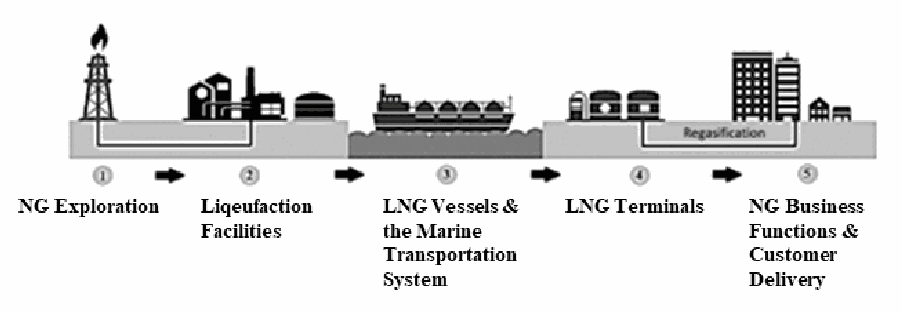

NIST IR 8406 日本語訳
英語タイトル : Cybersecurity Framework Profile for Liquefied Natural Gas日本語タイトル : 液化天然ガス向けサイバーセキュリティフレームワークプロファイル
公開日 : 2023-10-10
原文URL : https://csrc.nist.gov/pubs/ir/8406/upd1/final
翻訳編集 : 自動生成（有志による非公式の日本語訳）, 原文取得日 : 2026-10-31, 訳文 : 500 / 502 ブロック
[要約] NIST IR 8406 は、液化天然ガス（LNG）産業と、LNG の液化、輸送、配送という全体的なプロセスを支える下位の機能を対象に策定された、サイバーセキュリティフレームワークプロファイルです。LNG プロファイルは、液化施設、LNG 船、LNG のライフサイクルを支えるその他の主体が利用でき、これらの重要なプロセスとシステムに関わるサイバーセキュリティリスクを最小化できるとしています。サイバーセキュリティ活動を管理し、LNG プロセス全体に対するサイバーリスクを低減するための、任意のリスクベースのアプローチを提供します。LNG 産業で既に使用されている現行のサイバーセキュリティ標準、規制、業界ガイドラインを補完するものであり、置き換えるものではありません。
NIST Interagency Report NIST IR 8406-upd1
NIST 機関間報告書 NIST IR 8406-upd1
Cybersecurity Framework Profile for Liquefied Natural Gas
液化天然ガス向けサイバーセキュリティフレームワークプロファイル
William Newhouse Josephine Long David Weitzel Jason Warren Michael Thompson Chris Yates Hillary Tran Alicia Mink Aurora Herriott Tom Cottle
William Newhouse Josephine Long David Weitzel Jason Warren Michael Thompson Chris Yates Hillary Tran Alicia Mink Aurora Herriott Tom Cottle
This publication is available free of charge from: https://doi.org/10.6028/NIST.IR.8406-upd1
本刊行物は次の場所から無料で入手できます: https://doi.org/10.6028/NIST.IR.8406-upd1
NIST Interagency Report NIST IR 8406-upd1
NIST 機関間報告書 NIST IR 8406-upd1
Cybersecurity Framework Profile for Liquefied Natural Gas
液化天然ガス向けサイバーセキュリティフレームワークプロファイル
William Newhouse Applied Cybersecurity Division / National Cybersecurity Center of Excellence Information Technology Laboratory
William Newhouse 応用サイバーセキュリティ部門 / 国立サイバーセキュリティ卓越センター 情報技術研究所
Josephine Long David Weitzel Jason Warren Michael Thompson Chris Yates Hillary Tran Alicia Mink Aurora Herriott Tom Cottle The MITRE Corporation
Josephine Long David Weitzel Jason Warren Michael Thompson Chris Yates Hillary Tran Alicia Mink Aurora Herriott Tom Cottle The MITRE Corporation
This publication is available free of charge from: https://doi.org/10.6028/NIST.IR.8406-upd1
本刊行物は次の場所から無料で入手できます: https://doi.org/10.6028/NIST.IR.8406-upd1
June 2023
2023 年 6 月
INCLUDES UPDATES AS OF 10-04-2023; SEE APPENDIX C
2023 年 10 月 4 日時点の更新を含みます。付録 C を参照してください
［米国商務省の紋章。公的な標章のため、この非公式サイトには掲載していません。原本 PDF を参照してください。］
U.S. Department of Commerce Gina M. Raimondo, Secretary
米国商務省 Gina M. Raimondo 長官
National Institute of Standards and Technology
国立標準技術研究所
Laurie E. Locascio, NIST Director and Under Secretary of Commerce for Standards and Technology
Laurie E. Locascio、NIST 所長兼商務次官（標準・技術担当）
Certain commercial equipment, instruments, software, or materials, commercial or non-commercial, are identified in this paper in order to specify the experimental procedure adequately. Such identification does not imply recommendation or endorsement of any product or service by NIST, nor does it imply that the materials or equipment identified are necessarily the best available for the purpose.
本論文では、実験の手順を適切に示すために、特定の商用の機器、計器、ソフトウェア、材料（商用か非商用かを問わない）に言及しています。こうした言及は、NIST がいかなる製品やサービスも推奨または支持していることを意味せず、言及した材料や機器がその目的に最適であるとは限らないことも意味しません。
There may be references in this publication to other publications currently under development by NIST in accordance with its assigned statutory responsibilities. The information in this publication, including concepts and methodologies, may be used by federal agencies even before the completion of such companion publications. Thus, until each publication is completed, current requirements, guidelines, and procedures, where they exist, remain operative. For planning and transition purposes, federal agencies may wish to closely follow the development of these new publications by NIST.
本刊行物には、NIST が法令上の責務に従って現在策定中の他の刊行物への言及が含まれる場合があります。概念や方法論を含む本刊行物の情報は、そうした関連刊行物の完成前であっても、連邦政府機関が使用してかまいません。したがって、各刊行物が完成するまでは、現行の要件、ガイドライン、手順が存在する場合には、それらが引き続き有効です。計画および移行のため、連邦機関は、NIST によるこれらの新しい刊行物の策定状況を注意深く追うことを検討してもよいです。
Organizations are encouraged to review all draft publications during public comment periods and provide feedback to NIST. Many NIST cybersecurity publications, other than the ones noted above, are available at https://csrc.nist.gov/publications.
組織は、パブリックコメントの期間中にすべてのドラフト刊行物を確認し、NIST にフィードバックを提供することが推奨されます。上記以外の多くの NIST サイバーセキュリティ刊行物は、https://csrc.nist.gov/publications で入手できます。
NIST Technical Series Policies
NIST テクニカルシリーズの方針
Copyright, Use, and Licensing Statements
著作権、利用、ライセンスに関する声明
NIST Technical Series Publication Identifier Syntax
NIST テクニカルシリーズ刊行物の識別子の構文
Publication History
刊行履歴
Approved by the NIST Editorial Review Board on 2023-10-04
2023-10-04 に NIST 編集審査委員会が承認
Supersedes NIST IR 8406 (June 2023) https://doi.org/10.6028/NIST.IR.8406
NIST IR 8406（2023 年 6 月）を置き換えます https://doi.org/10.6028/NIST.IR.8406
How to Cite this NIST Technical Series Publication:
本 NIST テクニカルシリーズ刊行物の引用方法:
Newhouse W, Long J, Weitzel D, Warren J, Thompson M, Yates C, Tran H, Mink A, Herriott A, Cottle T (2023) Cybersecurity Framework Profile for Liquefied Natural Gas. (National Institute of Standards and Technology, Gaithersburg, MD), NIST Interagency or Internal Report (IR) NIST IR 8406-upd1. https://doi.org/10.6028/NIST.IR.8406-upd1
Newhouse W, Long J, Weitzel D, Warren J, Thompson M, Yates C, Tran H, Mink A, Herriott A, Cottle T (2023) Cybersecurity Framework Profile for Liquefied Natural Gas. (National Institute of Standards and Technology, Gaithersburg, MD), NIST Interagency or Internal Report (IR) NIST IR 8406-upd1. https://doi.org/10.6028/NIST.IR.8406-upd1
Author ORCID iDs
著者の ORCID iD
William Newhouse: 0000-0002-4873-7648
William Newhouse: 0000-0002-4873-7648
Contact Information
連絡先
LNG-CSF-Profile-NCCoE@nist.gov
LNG-CSF-Profile-NCCoE@nist.gov
National Institute of Standards and Technology Attn: National Cybersecurity Center of Excellence, Applied Cybersecurity Division, Information Technology Laboratory 100 Bureau Drive (Mail Stop 2002) Gaithersburg, MD 20899-2002
National Institute of Standards and Technology Attn: National Cybersecurity Center of Excellence, Applied Cybersecurity Division, Information Technology Laboratory 100 Bureau Drive (Mail Stop 2002) Gaithersburg, MD 20899-2002
All comments are subject to release under the Freedom of Information Act (FOIA).
寄せられたコメントはすべて、情報自由法（FOIA）に基づいて公開される場合があります。
Abstract
概要
This document is the Cybersecurity Framework Profile developed for the Liquefied Natural Gas (LNG) industry and the subsidiary functions that support the overarching liquefaction process, transport, and distribution of LNG. The LNG Cybersecurity Framework Profile can be used by liquefaction facilities, LNG vessels, and other supporting entities of the LNG lifecycle so that cybersecurity risks associated with these critical processes and systems can be minimized. The LNG Profile provides a voluntary, risk-based approach for managing cybersecurity activities and reducing cyber risk to the overall LNG process. The Cybersecurity Framework LNG Profile is meant to supplement but not replace current cybersecurity standards, regulations, and industry guidelines that are already being used by the Liquefied Natural Gas industry.
本書は、液化天然ガス（LNG）産業と、LNG の液化、輸送、配送という全体的なプロセスを支える下位の機能を対象に策定された、サイバーセキュリティフレームワークプロファイルです。LNG サイバーセキュリティフレームワークプロファイルは、液化施設、LNG 船、LNG のライフサイクルを支えるその他の主体が利用でき、これらの重要なプロセスとシステムに関わるサイバーセキュリティリスクを最小化できます。LNG プロファイルは、サイバーセキュリティ活動を管理し、LNG プロセス全体に対するサイバーリスクを低減するための、任意のリスクベースのアプローチを提供します。サイバーセキュリティフレームワークの LNG プロファイルは、液化天然ガス産業で既に使用されている現行のサイバーセキュリティ標準、規制、業界ガイドラインを補完するものであり、置き換えるものではありません。
Keywords
キーワード
Cybersecurity Framework; CSF; CSF Profile; liquefaction; liquefied natural gas; LNG; Marine Transportation System; MTS; mission objectives; risk management; security controls.
Cybersecurity Framework; CSF; CSF Profile; liquefaction; liquefied natural gas; LNG; Marine Transportation System; MTS; mission objectives; risk management; security controls.
Reports on Computer Systems Technology
コンピュータシステム技術に関する報告書
The Information Technology Laboratory (ITL) at the National Institute of Standards and Technology (NIST) promotes the U.S. economy and public welfare by providing technical leadership for the Nation’s measurement and standards infrastructure. ITL develops tests, test methods, reference data, proof of concept implementations, and technical analyses to advance the development and productive use of information technology. ITL’s responsibilities include the development of management, administrative, technical, and physical standards and guidelines for the cost-effective security and privacy of other than national security-related information in federal information systems.
国立標準技術研究所（NIST）の情報技術研究所（ITL）は、国の測定・標準基盤に対する技術的リーダーシップを提供することで、米国の経済と公共の福祉を促進しています。ITL は、情報技術の開発と生産的な利用を進めるため、テスト、テスト手法、参照データ、概念実証の実装、技術的分析を開発しています。ITL の責務には、連邦情報システムにおける国家安全保障に関わらない情報のセキュリティとプライバシーについて、費用対効果の高い管理、管理運営上、技術、物理の各標準とガイドラインを策定することが含まれます。
Patent Disclosure Notice
特許開示に関する通知
NOTICE: ITL has requested that holders of patent claims whose use may be required for compliance with the guidance or requirements of this publication disclose such patent claims to ITL. However, holders of patents are not obligated to respond to ITL calls for patents and ITL has not undertaken a patent search in order to identify which, if any, patents may apply to this publication.
通知: ITL は、本刊行物のガイダンスまたは要件への準拠に使用が必要となる可能性のある特許請求項の保有者に対し、当該特許請求項を ITL に開示するよう求めています。しかし、特許の保有者には ITL の特許に関する呼びかけに応じる義務はなく、ITL は、本刊行物に適用される特許があるかどうか、あるとすればどれかを特定するための特許調査を行っていません。
As of the date of publication and following call(s) for the identification of patent claims whose use may be required for compliance with the guidance or requirements of this publication, no such patent claims have been identified to ITL.
本刊行物のガイダンスまたは要件への準拠に使用が必要となる可能性のある特許請求項の特定を求める呼びかけを行った結果、発行日の時点で、そのような特許請求項は ITL に対して特定されていません。
No representation is made or implied by ITL that licenses are not required to avoid patent infringement in the use of this publication.
ITL は、本刊行物の使用において特許侵害を避けるためにライセンスが不要であるとは、明示的にも黙示的にも表明していません。
Table of Contents
目次
List of Tables
表の一覧
List of Figures
図の一覧
Acknowledgments
謝辞
The authors gratefully acknowledge and appreciate the following contributors for their keen, insightful, and dedicated assistance with developing this document:
著者らは、本書の作成にあたり、鋭い洞察と献身的な支援を寄せてくださった次の貢献者に深く感謝します。
Marco Ayala, Burns and McDonnell
Ana Girdner, ExxonMobil
Chad Collins, Cheniere
David Shires, ExxonMobil
Paul Davis, Kinder Morgan
Fifi Nguyen, Kinder Morgan
Richard Slaugh, Kinder Morgan
Todd Beebe, Freeport LNG
Khaled El Najjar, Cheniere
Michael Istre, The INGAA Foundation
Steve Vice, INEOS USA LLC
Del DeMoura, Golden Pass
David Bock, Golden Pass
Rene Philibert, Shell
Orlando Alvarado, Shell
Andrew Kohout, Federal Energy Regulatory Commission
Nicholas Jones, EY Consulting LLC
Marco Ayala, Burns and McDonnell
Ana Girdner, ExxonMobil
Chad Collins, Cheniere
David Shires, ExxonMobil
Paul Davis, Kinder Morgan
Fifi Nguyen, Kinder Morgan
Richard Slaugh, Kinder Morgan
Todd Beebe, Freeport LNG
Khaled El Najjar, Cheniere
Michael Istre, The INGAA Foundation
Steve Vice, INEOS USA LLC
Del DeMoura, Golden Pass
David Bock, Golden Pass
Rene Philibert, Shell
Orlando Alvarado, Shell
Andrew Kohout, Federal Energy Regulatory Commission
Nicholas Jones, EY Consulting LLC
The authors wish to recognize the contributions made to this publication by the Department of Energy team that funded the collaboration from which it resulted:
著者らは、本刊行物のもととなった協働に資金を提供した米国エネルギー省チームの貢献に謝意を表します。
Fowad Muneer, Office of Cybersecurity, Energy Security, and Emergency Response; Department of Energy
John W. Fry, Axio
Richard A. Caralli, Axio
Lindsay N. Kishter, Nexight Group
Brian D. Benestelli, Carnegie Mellon University Software Engineering Institute
Fowad Muneer, Office of Cybersecurity, Energy Security, and Emergency Response; Department of Energy
John W. Fry, Axio
Richard A. Caralli, Axio
Lindsay N. Kishter, Nexight Group
Brian D. Benestelli, Carnegie Mellon University Software Engineering Institute
This publication was prepared for the U.S. Department of Energy’s Office of Cybersecurity, Energy Security, and Emergency Response (CESER) as part of an inter-agency agreement with the U.S. Department of Commerce’s National Institute of Standards and Technology (NIST) to research and develop tools and practices that will strengthen the cybersecurity of maritime transportation systems within the Nation’s energy sector, focusing on Liquefied Natural Gas (LNG) facilities. CESER and NIST developed this Profile through a collaborative process, driven by LNG asset owners and operators, which resulted in tailored guidance for LNG systems to implement the NIST Cybersecurity Framework.
本刊行物は、米国エネルギー省のサイバーセキュリティ・エネルギー安全保障・緊急対応局（CESER）のために、米国商務省の国立標準技術研究所（NIST）との機関間協定の一環として作成されました。この協定は、液化天然ガス（LNG）施設に焦点を当て、国のエネルギー部門における海上輸送システムのサイバーセキュリティを強化するツールと実践を調査・開発するためのものです。CESER と NIST は、LNG の資産所有者と運用者が主導する協働プロセスを通じて本プロファイルを策定しました。その結果、NIST サイバーセキュリティフレームワークを実装するための、LNG システムに合わせたガイダンスができあがりました。
［組織・プログラムのロゴ。ロゴのため、この非公式サイトには掲載していません。原本 PDF を参照してください。］
Prepared for the U.S. Department of Energy under Inter-Agency Agreement 89303020SCR000003
機関間協定 89303020SCR000003 に基づき、米国エネルギー省のために作成
1. Introduction
1. はじめに
The NIST Cybersecurity Framework (CSF) [1] is a voluntary, risk-based assemblage of industry standards and best practices designed to help organizations manage and reduce cybersecurity risks. The CSF, created through a collaborative public process, uses a common language to address and manage cybersecurity risk in a cost-effective way based on business needs without imposing additional regulatory requirements. Although the CSF presents a variety of mitigations, many sectors and industries have opted to create their own prioritizations, known as CSF Profiles (“Profile”). This document is one such Profile, an application of the CSF to the Liquefied Natural Gas (LNG) industry.
NIST サイバーセキュリティフレームワーク（CSF）[1] は、組織がサイバーセキュリティリスクを管理・低減するのを支援するために設計された、任意のリスクベースの業界標準とベストプラクティスの集合です。CSF は、公開の協働プロセスによって作成され、共通の言語を用いて、追加の規制要件を課すことなく、ビジネス上のニーズに基づいて費用対効果の高い方法でサイバーセキュリティリスクに対処し、管理します。CSF はさまざまな緩和策を示していますが、多くの部門や産業が、CSF プロファイル（「プロファイル」）と呼ばれる独自の優先順位付けを作成することを選んできました。本書はそうしたプロファイルの一つであり、CSF を液化天然ガス（LNG）産業に適用したものです。
The importance of natural gas as an energy source has grown steadily for the last 40 years. Natural gas currently makes up 25% of annual global energy consumption—up from 18% in 1980 [2]. The United States supplies 24% of the annual natural gas produced globally—more than any other country [3]. In the United States, the primary method for transporting natural gas from production facilities to consumers is through a network of approximately 3 million miles of interstate and local pipelines [4]. Additionally, natural gas is transported in its liquefied form—LNG—both domestically and internationally across regions where pipelines are not feasible (e.g., unstable terrain, large bodies of water). As international usage of natural gas continues to increase, exports of LNG have become increasingly important in the international market [5]. The international market for LNG relies on safe handling of this energy resource within the U.S. Marine Transportation System (MTS).
エネルギー源としての天然ガスの重要性は、過去 40 年間にわたって着実に高まってきました。天然ガスは現在、世界の年間エネルギー消費量の 25% を占めており、1980 年の 18% から増加しています [2]。米国は世界で年間に生産される天然ガスの 24% を供給しており、これはどの国よりも多い量です [3]。米国では、生産施設から消費者へ天然ガスを輸送する主な方法は、約 300 万マイルの州間パイプラインと地域パイプラインのネットワークによるものです [4]。加えて、天然ガスは液化した形態、すなわち LNG として、パイプラインの敷設が現実的でない地域（たとえば、不安定な地形や大きな水域）を越えて、国内でも国際的にも輸送されています。天然ガスの国際的な利用が拡大し続けるのに伴い、LNG の輸出は国際市場でますます重要になっています [5]。LNG の国際市場は、このエネルギー資源を米国の海上輸送システム（MTS）の中で安全に取り扱うことに依存しています。
1.1. Purpose and Scope
1.1. 目的と範囲
This profile was developed to take a broad look at the LNG industry's infrastructure and to engage with LNG industry stakeholders to identify their mission objectives and priorities. With any risk management process or when making cybersecurity decisions, an organization must consider its own specific needs.
本プロファイルは、LNG 産業のインフラを広く見渡し、LNG 産業のステークホルダーと協力してそのミッション目標と優先事項を明らかにするために策定されました。リスク管理のプロセスでもサイバーセキュリティ上の意思決定でも、組織は自らの個別のニーズを考慮しなければなりません。
This profile demonstrates one aspect of how cybersecurity activities can be prioritized based on LNG-specific mission objectives.
本プロファイルは、LNG 固有のミッション目標に基づいてサイバーセキュリティ活動に優先順位を付ける方法の一側面を示すものです。
This profile can be used in several ways, including the following:
本プロファイルは、次を含むいくつかの方法で使用できます。
•To highlight high priority security expectations,
•優先度の高いセキュリティ上の期待事項を強調するため
•To perform a self-assessment comparison of current risk management practices, or
•現在のリスク管理の実践を自己評価し、比較するため、または
•As a baseline profile or example profile to reference when developing one’s own.
•自組織のプロファイルを策定する際に参照するベースラインプロファイルまたは例示プロファイルとして使用するため。
To help jurisdictions across the United States safeguard LNG, this Profile is written around high-level, mission-oriented goals (“mission objectives”) of LNG infrastructure as identified by industry stakeholders who were listed as contributors on the previous page. These mission objectives, described in Sec. 5, do not directly address every technical aspect of the LNG process. Specifically, technical components of LNG systems necessary for accomplishing those goals vary widely across the United States and cannot be captured in their entirety within a single Profile. This Profile will help the LNG sector focus on the functions that require attention and allow sector stakeholders to implement specific controls that are most suitable for their set of circumstances.
米国全域の管轄区域が LNG を保護するのを支援するため、本プロファイルは、前のページに貢献者として挙げた業界ステークホルダーが特定した、LNG インフラの高水準でミッション指向の目標（「ミッション目標」）を軸に書かれています。これらのミッション目標は第 5 章で説明していますが、LNG プロセスのあらゆる技術的側面に直接対応するものではありません。具体的には、これらの目標の達成に必要な LNG システムの技術的構成要素は米国全体で大きく異なり、単一のプロファイルですべてを捉えることはできません。本プロファイルは、LNG 部門が注意を要する機能に焦点を当てるのに役立ち、部門のステークホルダーが、それぞれの状況に最も適した具体的な管理策を実装できるようにします。
This Profile can help organizations identify opportunities for managing cybersecurity risks in the LNG lifecycle. Section 5 of this document provides a baseline of the mission objectives for LNG operations that were identified and prioritized by LNG industry stakeholders. Section 6 builds on the identified mission objectives to develop a prioritized list of CSF Categories. Section 7 of this document includes a table of prioritized CSF Subcategories based on identified CSF Categories. These prioritizations of mission objectives, CSF Categories, and CSF Subcategories may serve as a useful starting point to identify cybersecurity activities and outcomes that may be important to members of the LNG industry. Additionally, prioritizations can be tailored to account for specific mission objectives or operational considerations. A similar method to that described in Sec. 4 can be applied to tailor this Profile for an individual organization.
本プロファイルは、組織が LNG ライフサイクルにおけるサイバーセキュリティリスクを管理する機会を特定するのに役立ちます。本書の第 5 章は、LNG 産業のステークホルダーが特定し、優先順位を付けた LNG 運用のミッション目標のベースラインを示します。第 6 章は、特定したミッション目標を基に、優先順位付けされた CSF カテゴリの一覧を作成します。本書の第 7 章には、特定した CSF カテゴリに基づく、優先順位付けされた CSF サブカテゴリの表を収録しています。ミッション目標、CSF カテゴリ、CSF サブカテゴリに対するこれらの優先順位付けは、LNG 産業の関係者にとって重要となり得るサイバーセキュリティ活動と成果を特定する際の有用な出発点となる場合があります。さらに、優先順位付けは、特定のミッション目標や運用上の考慮事項に合わせて調整できます。第 4 章で説明する方法と同様の方法を適用して、個々の組織向けに本プロファイルを調整できます。
Organizations across the energy sector place a high priority on mitigating risks to operational technologies (OT)—the systems used to monitor and control physical processes. These systems manage critical energy sector processes that, if damaged or disrupted, could impact energy delivery, public safety, and national security. This Profile focuses on managing risks to OT systems in LNG operations, including onboard monitoring and control technologies and remotely managed, third-party systems. In addition to the recommendations for LNG organizations offered in this Profile, additional high-level OT-specific issues should be considered when reviewing this Profile and the CSF. OT environments typically encompass expansive and diverse assets that may not be controllable through conventional information technology (IT)-based cybersecurity tools, techniques, and methods due to the design and architecture of some OT assets. These assets also have a high potential for operational disruption when cybersecurity monitoring or scanning tools are applied to OT environments. Implementing separate-but-connected IT and OT networks is an effective way to mitigate various risks, including the impact that tools designed for IT networks may have on OT assets. Organizations may also face additional supply chain-related challenges as many field assets are vendor-supplied and operational needs may drive acquisition decisions. Procurement and change management processes that engage engineering and IT stakeholders can help to mitigate some of this risk. Given that OT assets drive core business processes for LNG organizations, additional consideration can be given to these issues when applying the guidance in this Profile.
エネルギー部門の組織は、運用技術（OT）、すなわち物理的なプロセスを監視・制御するために使用されるシステムに対するリスクの緩和を、高い優先度に置いています。これらのシステムは、損傷または中断した場合にエネルギーの供給、公共の安全、国家安全保障に影響を及ぼし得る、エネルギー部門の重要なプロセスを管理しています。本プロファイルは、船上の監視・制御技術や、遠隔で管理されるサードパーティのシステムを含め、LNG 運用における OT システムのリスクの管理に焦点を当てています。本プロファイルで LNG 組織向けに示す推奨事項に加えて、本プロファイルと CSF を確認する際には、OT に特有の追加的な高水準の課題も考慮すべきです。OT 環境は通常、広範で多様な資産を含んでおり、OT 資産の一部の設計とアーキテクチャのために、従来の情報技術（IT）ベースのサイバーセキュリティのツール、技術、手法では制御できない場合があります。また、これらの資産は、サイバーセキュリティの監視ツールやスキャンツールを OT 環境に適用すると、運用が中断する可能性が高くなります。IT ネットワークと OT ネットワークを分離したうえで接続して実装することは、IT ネットワーク向けに設計されたツールが OT 資産に及ぼす可能性のある影響を含め、さまざまなリスクを緩和する有効な方法です。組織は、サプライチェーンに関連する追加の課題にも直面する場合があります。現場の資産の多くはベンダーが供給するものであり、運用上のニーズが調達の判断を左右する場合があるためです。エンジニアリングと IT のステークホルダーが関与する調達および変更管理のプロセスは、こうしたリスクの一部を緩和するのに役立ちます。OT 資産は LNG 組織の中核的なビジネスプロセスを動かしていることから、本プロファイルのガイダンスを適用する際には、これらの課題について追加の検討を行うことができます。
This document is not intended to replace any existing cybersecurity guidance or policy, but rather to complement existing best practices by helping stakeholders prioritize the recommendations provided by LNG organizations such as Shell, ExxonMobil, Kinder Morgan, Golden Pass, and Cheniere. Organizations face unique risks and, therefore, a sector-wide Profile does not guarantee protection from all cyber threats. The decision on how to implement the Profile should be based on an organization’s risk tolerance, environment, and operational needs.
本書は、既存のサイバーセキュリティのガイダンスや方針を置き換えることを意図したものではありません。Shell、ExxonMobil、Kinder Morgan、Golden Pass、Cheniere などの LNG 組織が示した推奨事項にステークホルダーが優先順位を付けるのを支援することで、既存のベストプラクティスを補完することを意図しています。組織はそれぞれ固有のリスクに直面しているため、部門全体向けのプロファイルがあらゆるサイバー脅威からの保護を保証するわけではありません。プロファイルをどのように実装するかの判断は、組織のリスク許容度、環境、運用上のニーズに基づくべきです。
1.2. Audience
1.2. 想定読者
This document is intended for those within the LNG industry who seek a greater understanding of cybersecurity risks to the Liquefied Natural Gas industry.
本書は、液化天然ガス産業に対するサイバーセキュリティリスクをより深く理解したい LNG 産業の関係者を対象としています。
This document can also serve as a guide to those who need to create a Profile for their own organization.
本書は、自組織のプロファイルを作成する必要がある人のための手引きとしても使用できます。
LNG processes are complex and varied, so some knowledge of the Marine Transportation System (MTS) and the liquefaction process will be helpful to readers. An understanding of cybersecurity concepts will also be useful for those managing, implementing, and maintaining LNG systems impacted by this Profile.
LNG のプロセスは複雑で多様であるため、海上輸送システム（MTS）と液化プロセスについての知識があると、読者の役に立ちます。本プロファイルの影響を受ける LNG システムを管理、実装、保守する人にとっては、サイバーセキュリティの概念の理解も有用です。
1.3. Document Structure
1.3. 文書の構成
This document consists of the following sections:
本書は次の章で構成されています。
•Section 2 provides an overview of the LNG industry.
•第 2 章では、LNG 産業の概要を示します。
•Section 3 discusses key aspects of the CSF and CSF Profiles.
•第 3 章では、CSF と CSF プロファイルの主要な側面を論じます。
•Section 4 describes the methodology used to develop this Profile.
•第 4 章では、本プロファイルの策定に用いた方法を説明します。
•Section 5 presents the high-level mission objectives that support the LNG industry.
•第 5 章では、LNG 産業を支える高水準のミッション目標を示します。
•Section 6 summarizes CSF Categories prioritized for the LNG industry.
•第 6 章では、LNG 産業向けに優先順位付けされた CSF カテゴリをまとめます。
•Section 7 details the relative importance of CSF Subcategories to the LNG industry.
•第 7 章では、LNG 産業にとっての CSF サブカテゴリの相対的な重要性を詳述します。
•References section contains a list of all items cited in this document.
•参考文献の節には、本書で引用したすべての項目の一覧を収録しています。
•Appendix A defines acronyms used in this document.
•付録 A では、本書で使用する頭字語を定義します。
•Appendix B provides a glossary of key terms used in this document.
•付録 B では、本書で使用する主要な用語の用語集を示します。
2. The Liquefied Natural Gas Industry
2. 液化天然ガス産業
This publication was prepared for the U.S. Department of Energy’s CESER as part of an inter-agency agreement with NIST’s National Cybersecurity Center of Excellence (NCCoE) to research and develop tools and practices that will strengthen the cybersecurity of the systems that handle energy resources within our nation’s MTS. This Profile is focused on the LNG energy resource. CESER and NIST’s NCCOE developed this Profile through a collaborative process, driven by LNG asset owners and operators.
本刊行物は、米国エネルギー省の CESER のために、NIST の国立サイバーセキュリティ卓越センター（NCCoE）との機関間協定の一環として作成されました。この協定は、国の MTS 内でエネルギー資源を取り扱うシステムのサイバーセキュリティを強化するツールと実践を調査・開発するためのものです。本プロファイルは、LNG というエネルギー資源に焦点を当てています。CESER と NIST の NCCoE は、LNG の資産所有者と運用者が主導する協働プロセスを通じて本プロファイルを策定しました。
2.1. Liquefied Natural Gas
2.1. 液化天然ガス
Natural gas in its liquid state is about 600 times smaller in volume than its gaseous state. Liquefying natural gas allows the natural gas industry to convey its energy resource long distances to markets not supported by pipelines. For shipping and storage, LNG must be kept at about -260° Fahrenheit to remain in a liquid state [5]. The LNG industry is made up of components established to enable the shipping of natural gas as LNG.
液体状態の天然ガスは、気体状態に比べて体積が約 600 分の 1 になります。天然ガスを液化することで、天然ガス産業は、パイプラインでは対応できない市場まで長距離にわたってそのエネルギー資源を運べるようになります。輸送と貯蔵のあいだ、LNG は液体の状態を保つために華氏約 -260 度に維持しなければなりません [5]。LNG 産業は、天然ガスを LNG として輸送できるようにするために確立された構成要素から成っています。
2.2. Components of the Liquefied Natural Gas Industry
2.2. 液化天然ガス産業の構成要素
Components of the Liquefied Natural Gas industry are very complex, are often automated, and require considerable effort and coordination when an organization seeks alignment of standards, guidelines, and practices to identify opportunities for improving their cybersecurity posture.
液化天然ガス産業の構成要素は非常に複雑で、多くは自動化されており、組織がサイバーセキュリティ態勢を改善する機会を特定するために標準、ガイドライン、実践の整合を図ろうとする場合には、相当な労力と調整が必要になります。
Figure 1 shows the components of the Liquefied Natural Gas industry supply chain main components. The remainder of this section will focus on the following components of that supply chain:
図 1 は、液化天然ガス産業のサプライチェーンの主な構成要素を示しています。本節の残りでは、このサプライチェーンの次の構成要素に焦点を当てます。
•Liquefaction Facilities
•液化施設
•LNG Vessels and the Marine Transportation System (MTS)
•LNG 船と海上輸送システム（MTS）
•LNG Terminals
•LNG ターミナル

液化天然ガス産業のサプライチェーンの主な構成要素を示す図です。左から右へ、矢印とパイプラインで結ばれた5つの番号付きの段階が並びます。1「NG Exploration」（掘削リグ）、2「Liquefaction Facilities」（処理プラントと貯蔵タンク）、3「LNG Vessels & the Marine Transportation System」（LNGタンカー）、4「LNG Terminals」（ターミナルのタンクと「Regasification」）、5「NG Business Functions & Customer Delivery」（建物）です。
Fig. 1. Liquefied Natural Gas Industry Supply Chain Main Components
図 1. 液化天然ガス産業のサプライチェーンの主要な構成要素
2.2.1. Liquefaction Facilities
2.2.1. 液化施設
During the exploration phase, natural gas is extracted from reservoirs and transported via pipeline to an LNG liquefaction facility. LNG liquefaction facilities convert natural gas into LNG, store processed LNG, and supply LNG to transport vessels.
探査の段階で、天然ガスは貯留層から採取され、パイプラインで LNG 液化施設に輸送されます。LNG 液化施設は、天然ガスを LNG に変換し、処理した LNG を貯蔵し、輸送船に LNG を供給します。
2.2.1.1. Critical Systems Found in LNG Liquefaction Facilities
2.2.1.1. LNG 液化施設にある重要システム
•Gas Pre-Treatment (Pre-Liquefaction)
Prior to liquefaction, it is essential to begin the process with a pre-treatment. The gas pre-treatment removes impurities, such as any non-methane chemicals, from the natural gas stream. This pre-treatment prepares the gas for liquefaction and reduces the chance of hydrates forming, which will hinder the performance of operations.
•ガスの前処理（液化前）
液化の前に、プロセスを前処理から始めることが不可欠です。ガスの前処理では、メタン以外の化学物質などの不純物を天然ガスの流れから取り除きます。この前処理によってガスを液化に備えさせ、運用の性能を妨げるハイドレートが生成される可能性を低減します。
•Liquefaction
The liquefaction process is what turns the natural gas into liquefied natural gas. Following the pre-treatment, the gas is cooled until it reaches the temperature at which it turns from a liquid to a gas. This may be accomplished through several processes, but typically involves the use of a heat exchanger that allows the heat energy in the natural gas to be absorbed by pre-cooled refrigerant liquids. The natural gas is cooled to approximately -260° Fahrenheit—the temperature at which natural gas will change from a gas to a liquid [6].
•液化
液化プロセスは、天然ガスを液化天然ガスに変えるものです。前処理に続いて、ガスは気体から液体に変わる温度に達するまで冷却されます。これはいくつかのプロセスで実現でき、通常は熱交換器を用いて、天然ガスの熱エネルギーを予冷された冷媒液に吸収させます。天然ガスは、気体から液体に変わる温度である華氏約 -260 度まで冷却されます [6]。
•Liquefied Natural Gas Storage
LNG is stored in highly insulated tanks to help maintain the low temperatures required to keep it in a liquid state. Even though the storage tanks are well insulated, some heat from the surrounding environment will still be absorbed by the tanks and transferred to the LNG stored inside. This causes a small amount of the LNG to change back into a gas and rise to the top of the tank. The change from a liquid to a gas absorbs heat energy helping to keep the rest of the liquid cool. As natural gas builds up at the top of the storage tank it is reclaimed by a boil-off gas (BOG) system and used or sold by the liquefaction facility [7].
•液化天然ガスの貯蔵
LNG は、液体状態を保つために必要な低温の維持を助ける、断熱性の高いタンクに貯蔵されます。貯蔵タンクの断熱が十分であっても、周囲の環境からの熱の一部はタンクに吸収され、内部に貯蔵された LNG に伝わります。このため、少量の LNG が気体に戻ってタンクの上部に上昇します。液体から気体への変化は熱エネルギーを吸収するため、残りの液体を冷たく保つのに役立ちます。天然ガスがタンクの上部に蓄積すると、ボイルオフガス（BOG）システムによって回収され、液化施設で使用または販売されます [7]。
•Operational Technology (OT) Supporting Critical Systems
Pre-treatment, liquefaction, and storage processes are monitored and controlled with the aid of operational technology (OT). OT also supports process safety systems that are used to protect equipment and avoid potential hazards to the environment or human safety. Examples of operational technology in use within process and safety systems include embedded systems, relays, programmable logic controllers (PLCs), and human machine interfaces (HMIs).
•重要システムを支える運用技術（OT）
前処理、液化、貯蔵のプロセスは、運用技術（OT）の助けを借りて監視・制御されます。OT は、設備を保護し、環境や人の安全に対する潜在的な危険を回避するために使用されるプロセス安全システムも支えています。プロセスシステムや安全システムで使用されている運用技術の例には、組込みシステム、リレー、プログラマブルロジックコントローラー（PLC）、ヒューマンマシンインターフェース（HMI）があります。
2.2.2. Liquefied Natural Gas Vessels and the Marine Transportation System
2.2.2. 液化天然ガス船と海上輸送システム
According to the U.S. Committee on the Marine Transportation System, the MTS comprises 25,000 miles of navigable channels, 239 locks, and more than 3,700 marine terminals [8]. The system includes waterways, ports, and intermodal landside connections that coordinate with 174,000 miles of railways, facilitating the movement of people and goods to and from the water [9]. Freight transport by sea has been widely utilized in the MTS.
米国海上輸送システム委員会によると、MTS は 25,000 マイルの航行可能な水路、239 の閘門、3,700 を超える海上ターミナルで構成されています [8]。このシステムには、水路、港湾、および 174,000 マイルの鉄道と連携する複合一貫輸送の陸側接続が含まれ、水上との間での人と物の移動を円滑にしています [9]。海上貨物輸送は、MTS で広く利用されてきました。
LNG vessels are specialized tank ships that must meet high international and U.S. Coast Guard standards. These are high-tech vessels that use special materials and designs to safely handle very cold LNG. The enterprise resource planning system and an integrated automation system manage OT systems on an LNG tank ship. These systems incorporate human-machine interfaces that monitor process data and can access trend data or messages. Decision support tools, such as bridge systems and navigation systems, contribute to the safety and reliability of shipping operations.
LNG 船は、国際基準と米国沿岸警備隊の高い基準を満たさなければならない専用のタンク船です。これらは、極低温の LNG を安全に取り扱うために特殊な材料と設計を用いたハイテク船です。LNG タンク船の OT システムは、企業資源計画システムと統合オートメーションシステムによって管理されています。これらのシステムには、プロセスデータを監視し、トレンドデータやメッセージにアクセスできるヒューマンマシンインターフェースが組み込まれています。船橋システムや航法システムなどの意思決定支援ツールは、輸送運用の安全性と信頼性に寄与します。
2.2.3. Liquefied Natural Gas LNG Export and Import Terminals
2.2.3. 液化天然ガスの輸出入ターミナル
An LNG export terminal is a facility that receives natural gas from transmission pipelines. In this facility natural gas is liquefied, stored, and transferred to ships for export. An LNG import terminal receives LNG from ships, stores it, and reverses the liquefication process, turning LNG back into its gaseous form. The natural gas can then be distributed via pipelines to customers. In the United States, LNG export and import terminals can be deepwater port terminals (located outside State waters) or located on the coastline or within State waters [10].
LNG 輸出ターミナルは、送ガスパイプラインから天然ガスを受け入れる施設です。この施設で天然ガスは液化・貯蔵され、輸出用の船に移送されます。LNG 輸入ターミナルは、船から LNG を受け入れて貯蔵し、液化の工程を逆にたどって LNG を気体に戻します。その後、天然ガスはパイプラインを通じて顧客に配給できます。米国では、LNG の輸出入ターミナルは、深水港ターミナル（州の領水の外にあるもの）の場合もあれば、海岸線上や州の領水内にある場合もあります [10]。
2.3. Liquefied Natural Gas Safety
2.3. 液化天然ガスの安全
More than 33,000 shipments have transported over three billion cubic meters of LNG over the past 40 years without serious accidents at sea or in port. Hazardous situations are identified through natural gas, fire, and smoke detection systems that can automatically halt operations [11].
過去 40 年間に、33,000 回を超える輸送で 30 億立方メートルを超える LNG が運ばれましたが、海上でも港でも重大な事故は起きていません。危険な状況は、運用を自動的に停止できる天然ガス検知、火災検知、煙検知のシステムによって特定されます [11]。
In the United States, the U.S. Coast Guard is responsible for regulating the security controls in place to protect the terminal and the vessels accessing the terminal [11][12]. The Department of Transportation Pipeline and Hazardous Materials Safety Administration and Federal Energy Regulatory Commission also share security oversight with the Coast Guard and other agencies on issues of marine safety and security at LNG import and export facilities [13].
米国では、ターミナルとターミナルに出入りする船舶を保護するために設けられたセキュリティ管理策を規制する責任は、米国沿岸警備隊にあります [11][12]。運輸省のパイプライン危険物安全局と連邦エネルギー規制委員会も、LNG 輸入・輸出施設における海上の安全とセキュリティの問題について、沿岸警備隊やその他の機関とともにセキュリティの監督を分担しています [13]。
3. Overview of the Cybersecurity Framework
3. サイバーセキュリティフレームワークの概要
The CSF uses business drivers to guide cybersecurity activities within an organization. The CSF enables organizations—regardless of size, degree of cybersecurity risk, or cybersecurity sophistication—to apply the principles and best practices of risk management to improving security and resilience. It provides a common language for understanding, managing, and expressing cybersecurity risk and cybersecurity management communications among internal and external stakeholders and across an organization, regardless of cybersecurity expertise. For organizations that require a starting point for leveraging the CSF, NIST’s Getting Started with the NIST Cybersecurity Framework: A Quick Start Guide provides an overview and explanation for each of the CSF Functions [14].
CSF は、ビジネス上の推進要因を用いて、組織内のサイバーセキュリティ活動を方向づけます。CSF により、組織は、規模、サイバーセキュリティリスクの度合い、サイバーセキュリティの高度さを問わず、リスク管理の原則とベストプラクティスを適用して、セキュリティとレジリエンスを改善できます。CSF は、サイバーセキュリティの専門知識の有無にかかわらず、組織の内外のステークホルダーのあいだや組織全体で、サイバーセキュリティリスクとサイバーセキュリティ管理に関するコミュニケーションを理解し、管理し、表現するための共通言語を提供します。CSF を活用する出発点を必要とする組織に対しては、NIST の Getting Started with the NIST Cybersecurity Framework: A Quick Start Guide が、CSF の各機能の概要と説明を提供しています [14]。
The CSF consists of three main components: the Core, Profiles, and Implementation Tiers. The Core is a catalog of desired cybersecurity activities and outcomes using common language that is easy to understand. A CSF profile is an alignment of organizational requirements, objectives, risk appetite, and resources against the desired outcomes of the CSF Core. Profiles are primarily used to identify and prioritize opportunities for improving cybersecurity at an organization. Implementation Tiers guide organizations to consider the appropriate level of rigor for their cybersecurity program and can be used as a communication tool to discuss risk appetite, mission priority, and budget. (Although part of the CSF, for the purposes of this Profile further discussion on Implementation Tiers is not included.)
CSF は、コア、プロファイル、実装ティアの 3 つの主要な構成要素から成ります。コアは、わかりやすい共通言語を用いた、望ましいサイバーセキュリティ活動と成果のカタログです。CSF プロファイルは、組織の要件、目標、リスク選好度、リソースを、CSF コアの望ましい成果に照らして整合させたものです。プロファイルは主に、組織でサイバーセキュリティを改善する機会を特定し、優先順位を付けるために使用されます。実装ティアは、組織がサイバーセキュリティプログラムに適切な厳格さの水準を検討するための指針となり、リスク選好度、ミッションの優先順位、予算を議論するためのコミュニケーションツールとして使用できます。（実装ティアは CSF の一部ですが、本プロファイルの目的上、これ以上の議論は含めません。）
3.1. The Cybersecurity Framework Core
3.1. サイバーセキュリティフレームワークのコア
The CSF presents industry standards, guidelines, and practices in a manner that allows for communication of cybersecurity activities and outcomes across the organization, including executive leadership and those responsible for operations. The CSF Core consists of five concurrent and continuous Functions—Identify, Protect, Detect, Respond, Recover. When considered together, these Functions provide a high-level, strategic view for cybersecurity risk management of an organization’s cybersecurity posture. The CSF further identifies underlying key Categories and Subcategories for each Function and matches them with example Informative References, such as existing standards, guidelines, and practices for each Subcategory. The five Functions include 23 Categories of cybersecurity outcomes and Subcategories that further divide the Categories into more specific technical or management activities. The 23 Categories are spread across the Functions associated with Table 1 through Table 5.
CSF は、経営幹部層や運用の責任者を含め、組織全体でサイバーセキュリティ活動と成果を伝達できる形で、業界標準、ガイドライン、実践を示しています。CSF コアは、同時並行で継続的な 5 つの機能、識別（IDENTIFY）、防御（PROTECT）、検知（DETECT）、対応（RESPOND）、復旧（RECOVER）から成ります。これらを合わせて考えると、組織のサイバーセキュリティ態勢に対するサイバーセキュリティリスク管理について、高水準で戦略的な見方が得られます。CSF はさらに、各機能の基盤となる主要なカテゴリとサブカテゴリを特定し、各サブカテゴリについて、既存の標準、ガイドライン、実践などの参考情報（Informative References）の例と対応づけています。5 つの機能には、サイバーセキュリティの成果の 23 のカテゴリと、カテゴリをより具体的な技術的活動または管理活動に細分するサブカテゴリが含まれます。23 のカテゴリは、表 1 から表 5 に関連する各機能に分かれています。
The five Functions of the CSF Core are defined below:
CSF コアの 5 つの機能を次に定義します。
•Identify – Develop the organizational understanding to manage cybersecurity risk to systems, assets, data, and capabilities. The activities in the Identify Function are foundational for effective use of the CSF. Understanding the business context, the resources that support critical functions, and the related cybersecurity risks enables an organization to focus and prioritize its efforts, consistent with its risk management strategy and business needs. Examples of outcome Categories within this Function include Asset Management, Business Environment, Governance, Risk Assessment, and Risk Management Strategy.
•識別（IDENTIFY） – システム、資産、データ、能力に対するサイバーセキュリティリスクを管理するための、組織としての理解を深めます。識別機能の活動は、CSF を効果的に使用するための基盤となります。ビジネスの文脈、重要な機能を支えるリソース、関連するサイバーセキュリティリスクを理解することで、組織は、リスク管理戦略とビジネスニーズに沿って取り組みを絞り込み、優先順位を付けることができます。この機能に含まれる成果のカテゴリの例には、資産管理、ビジネス環境、ガバナンス、リスク評価、リスク管理戦略があります。
•Protect – Develop and implement the appropriate safeguards to ensure delivery of critical infrastructure services. The activities in the Protect Function support the ability to limit or contain the impact of a potential cybersecurity event. Examples of outcome Categories within this Function include Identity Management and Access Control, Awareness and Training, Data Security; Information Protection Processes and Procedures, Maintenance; and Protective Technology.
•防御（PROTECT） – 重要インフラのサービスを確実に提供するための、適切な保護措置を策定し、実装します。防御機能の活動は、潜在的なサイバーセキュリティイベントの影響を限定または封じ込める能力を支えます。この機能に含まれる成果のカテゴリの例には、識別情報管理とアクセス制御、意識向上およびトレーニング、データセキュリティ、情報保護のプロセスと手順、保守、保護技術があります。
•Detect – Develop and implement the appropriate activities to identify the occurrence of a cybersecurity event. The activities in the Detect Function enable timely discovery of cybersecurity events. Examples of outcome Categories within this Function include Anomalies and Events, Security Continuous Monitoring, and Detection Processes.
•検知（DETECT） – サイバーセキュリティイベントの発生を特定するための、適切な活動を策定し、実装します。検知機能の活動により、サイバーセキュリティイベントをタイムリーに発見できます。この機能に含まれる成果のカテゴリの例には、異常とイベント、セキュリティの継続的な監視、検知プロセスがあります。
•Respond – Develop and implement the appropriate activities to act on a detected cybersecurity event. The activities in the Respond Function support the ability to contain the impact of a potential cybersecurity event. Examples of outcome Categories within this Function include Response Planning, Communications, Analysis, Mitigation, and Improvements.
•対応（RESPOND） – 検知されたサイバーセキュリティイベントに対処するための、適切な活動を策定し、実装します。対応機能の活動は、潜在的なサイバーセキュリティイベントの影響を封じ込める能力を支えます。この機能に含まれる成果のカテゴリの例には、対応計画、コミュニケーション、分析、緩和、改善があります。
•Recover – Develop and implement the appropriate activities to maintain plans for resilience and to restore any capabilities or services that were impaired due to a cybersecurity event. The activities in the Recover Function support timely recovery to normal operations to reduce the impact from a cybersecurity event. Examples of outcome Categories within this Function include Recovery Planning, Improvements, and Communications.
•復旧（RECOVER） – レジリエンスのための計画を維持し、サイバーセキュリティイベントによって損なわれた能力やサービスを復元するための、適切な活動を策定し、実装します。復旧機能の活動は、通常の運用へのタイムリーな復旧を支え、サイバーセキュリティイベントによる影響を軽減します。この機能に含まれる成果のカテゴリの例には、復旧計画、改善、コミュニケーションがあります。
Table 1. Cybersecurity Framework Categories for the Identify (ID) Function.
表 1. 識別（ID）機能のサイバーセキュリティフレームワークのカテゴリ。
| Category | Identifier | Description |
|---|---|---|
| Asset Management | ID.AM | The data, personnel, devices, systems, and facilities that enable the organization to achieve business purposes are identified and managed consistent with their relative importance to organizational objectives and the organization’s risk strategy. |
| Business Environment | ID.BE | The organization’s mission, objectives, stakeholders, and activities are understood and prioritized; this information is used to inform cybersecurity roles, responsibilities, and risk management decisions. |
| Governance | ID.GV | The policies, procedures, and processes to manage and monitor the organization’s regulatory, legal, risk, environmental, and operational requirements are understood and inform the management of cybersecurity risk. |
| Risk Assessment | ID.RA | The organization understands the cybersecurity risk to organizational operations (including mission, functions, image, or reputation), organizational assets, and individuals. |
| Risk Management Strategy | ID.RM | The organization’s priorities, constraints, risk tolerances, and assumptions are established and used to support operational risk decisions. |
| Supply Chain Risk Management | ID.SC | The organization’s priorities, constraints, risk tolerances, and assumptions are established and used to support risk decisions associated with managing supply chain risk. The organization has established and implemented the processes to identify, assess and manage supply chain risks. |
| カテゴリ | 識別子 | 説明 |
|---|---|---|
| 資産管理 | ID.AM | 組織がビジネス目的を達成できるようにするデータ、要員、デバイス、システム、施設が、組織の目標と組織のリスク戦略に対するそれぞれの相対的な重要性に応じて識別され、管理されています。 |
| ビジネス環境 | ID.BE | 組織のミッション、目標、ステークホルダー、活動が理解され、優先順位が付けられています。この情報は、サイバーセキュリティの役割、責任、リスク管理上の意思決定に活用されます。 |
| ガバナンス | ID.GV | 組織の規制、法律、リスク、環境、運用の各要件を管理・監視するための方針、手順、プロセスが理解され、サイバーセキュリティリスクの管理に活用されています。 |
| リスク評価 | ID.RA | 組織は、組織の運用（ミッション、機能、イメージ、評判を含む）、組織の資産、個人に対するサイバーセキュリティリスクを理解しています。 |
| リスク管理戦略 | ID.RM | 組織の優先事項、制約、リスク許容度、前提が確立され、運用上のリスクに関する意思決定を支えるために使用されています。 |
| サプライチェーンリスク管理 | ID.SC | 組織の優先事項、制約、リスク許容度、前提が確立され、サプライチェーンのリスクの管理に関連するリスクの意思決定を支えるために使用されています。組織は、サプライチェーンのリスクを識別、評価、管理するプロセスを確立し、実装しています。 |
Table 2. Cybersecurity Framework Categories for the Protect (PR) Function.
表 2. 防御（PR）機能のサイバーセキュリティフレームワークのカテゴリ。
| Category | Identifier | Description |
|---|---|---|
| Identity Management, Authentication and Access Control | PR.AC | Access to physical and logical assets and associated facilities is limited to authorized users, processes, and devices, and is managed consistent with the assessed risk of unauthorized access to authorized activities and transactions. |
| Awareness and Training | PR.AT | The organization’s personnel and partners are provided cybersecurity awareness education and are trained to perform their cybersecurity-related duties and responsibilities consistent with related policies, procedures, and agreements. |
| Data Security | PR.DS | Information and records (data) are managed consistent with the organization’s risk strategy to protect the confidentiality, integrity, and availability of information. |
| Information Protection Processes and Procedures | PR.IP | Security policies (that address purpose, scope, roles, responsibilities, management commitment, and coordination among organizational entities), processes, and procedures are maintained and used to manage protection of information systems and assets. |
| Maintenance | PR.MA | Maintenance and repairs of industrial control and information system components are performed consistent with policies and procedures. |
| Protective Technology | PR.PT | Technical security solutions are managed to ensure the security and resilience of systems and assets, consistent with related policies, procedures, and agreements. |
| カテゴリ | 識別子 | 説明 |
|---|---|---|
| 識別情報管理、認証、アクセス制御 | PR.AC | 物理的・論理的な資産と関連施設へのアクセスは、許可されたユーザー、プロセス、デバイスに限定され、許可された活動やトランザクションに対する不正アクセスの評価済みリスクに応じて管理されています。 |
| 意識向上およびトレーニング | PR.AT | 組織の要員とパートナーは、サイバーセキュリティの意識向上教育を受けており、関連する方針、手順、合意に沿ってサイバーセキュリティ関連の職務と責任を果たすためのトレーニングを受けています。 |
| データセキュリティ | PR.DS | 情報と記録（データ）は、情報の機密性、完全性、可用性を保護するために、組織のリスク戦略に沿って管理されています。 |
| 情報保護のプロセスと手順 | PR.IP | セキュリティ方針（目的、範囲、役割、責任、経営陣のコミットメント、組織内の各主体間の調整を扱うもの）、プロセス、手順が維持され、情報システムと資産の保護を管理するために使用されています。 |
| 保守 | PR.MA | 産業用制御システムおよび情報システムの構成要素の保守と修理が、方針と手順に沿って実施されています。 |
| 保護技術 | PR.PT | 技術的なセキュリティソリューションが、関連する方針、手順、合意に沿って、システムと資産のセキュリティとレジリエンスを確保するように管理されています。 |
Table 3. Cybersecurity Framework Categories for the Detect (DE) Function.
表 3. 検知（DE）機能のサイバーセキュリティフレームワークのカテゴリ。
| Category | Identifier | Description |
|---|---|---|
| Anomalies and Events | DE.AE | Anomalous activity is detected, and the potential impact of events is understood. |
| Security Continuous Monitoring | DE.CM | The information system and assets are monitored to identify cybersecurity events and verify the effectiveness of protective measures. |
| Detection Processes | DE.DP | Detection processes and procedures are maintained and tested to ensure awareness of anomalous events. |
| カテゴリ | 識別子 | 説明 |
|---|---|---|
| 異常とイベント | DE.AE | 異常な活動が検知され、イベントの潜在的な影響が理解されています。 |
| セキュリティの継続的な監視 | DE.CM | 情報システムと資産が監視され、サイバーセキュリティイベントの識別と、保護対策の有効性の検証が行われています。 |
| 検知プロセス | DE.DP | 異常なイベントを確実に認識できるように、検知のプロセスと手順が維持され、テストされています。 |
Table 4. Cybersecurity Framework Categories for the Respond (RS) Function.
表 4. 対応（RS）機能のサイバーセキュリティフレームワークのカテゴリ。
| Category | Identifier | Description |
|---|---|---|
| Response Planning | RS.RP | Response processes and procedures are executed and maintained, to ensure response to detected cybersecurity incidents. |
| Communications | RS.CO | Response activities are coordinated with internal and external stakeholders (e.g., external support from law enforcement agencies). |
| Analysis | RS.AN | Analysis is conducted to ensure effective response and support recovery activities. |
| Mitigation | RS.MI | Activities are performed to prevent expansion of an event, mitigate its effects, and resolve the incident. |
| Improvements | RS.IM | Organizational response activities are improved by incorporating lessons learned from current and previous detection/response activities. |
| カテゴリ | 識別子 | 説明 |
|---|---|---|
| 対応計画 | RS.RP | 検知されたサイバーセキュリティインシデントへの対応を確実にするため、対応のプロセスと手順が実行され、維持されています。 |
| コミュニケーション | RS.CO | 対応活動が、内部および外部のステークホルダー（たとえば、法執行機関からの外部支援）と調整されています。 |
| 分析 | RS.AN | 効果的な対応を確実にし、復旧活動を支えるために、分析が行われています。 |
| 緩和 | RS.MI | イベントの拡大を防ぎ、その影響を緩和し、インシデントを解決するための活動が実施されています。 |
| 改善 | RS.IM | 現在および過去の検知・対応活動から得られた教訓を取り入れることで、組織の対応活動が改善されています。 |
Table 5. Cybersecurity Framework Categories for the Recover (RC) Function.
表 5. 復旧（RC）機能のサイバーセキュリティフレームワークのカテゴリ。
| Category | Identifier | Description |
|---|---|---|
| Recovery Planning | RC.RP | Recovery processes and procedures are executed and maintained to ensure restoration of systems or assets affected by cybersecurity incidents. |
| Improvements | RC.IM | Recovery planning and processes are improved by incorporating lessons learned into future activities. |
| Communications | RC.CO | Restoration activities are coordinated with internal and external parties (e.g. coordinating centers, Internet Service Providers, owners of attacking systems, victims, other CSIRTs, and vendors). |
| カテゴリ | 識別子 | 説明 |
|---|---|---|
| 復旧計画 | RC.RP | サイバーセキュリティインシデントの影響を受けたシステムや資産の復元を確実にするため、復旧のプロセスと手順が実行され、維持されています。 |
| 改善 | RC.IM | 得られた教訓を今後の活動に取り入れることで、復旧計画とプロセスが改善されています。 |
| コミュニケーション | RC.CO | 復元活動が、内部および外部の関係者（たとえば、調整センター、インターネットサービスプロバイダー、攻撃元システムの所有者、被害者、他の CSIRT、ベンダー）と調整されています。 |
Concurrent with the development of this LNG Profile, NIST published an initial public draft of NIST SP 800-82 Rev. 3, Guide to Operational Technology (OT) Security [15]. The revision includes additional alignment with other OT security standards and guidelines, including the CSF. This initial draft of NIST SP 800-82 Rev. 3, Guide to (OT) Security has a section dedicated to applying the CSF to OT in which all CSF Functions and selected CSF Categories and Subcategories are covered. Readers may find it useful to reference it as a companion document to this Profile.
本 LNG プロファイルの策定と並行して、NIST は NIST SP 800-82 Rev. 3, Guide to Operational Technology (OT) Security の初期公開ドラフトを公表しました [15]。この改訂版では、CSF を含む他の OT セキュリティ標準やガイドラインとの整合が追加されています。NIST SP 800-82 Rev. 3, Guide to Operational Technology (OT) Security のこの初期ドラフトには、CSF を OT に適用することに充てた節があり、そこではすべての CSF 機能と、選択された CSF カテゴリおよびサブカテゴリを扱っています。読者は、本プロファイルの副読本として参照すると有用であると感じるかもしれません。
3.2. Cybersecurity Framework Profiles
3.2. サイバーセキュリティフレームワークのプロファイル
A Profile represents the outcomes based on business needs that an organization has selected from the CSF Categories and Subcategories. Profiles offer a prioritization of NIST CSF Categories and Subcategories based on the mission and operational considerations common to a specific group, such as the LNG sector with the MTS. Profiles serve as a useful starting point for identifying cybersecurity activities and outcomes that may be important to the selected group. Profiles can be used to identify opportunities for improving cybersecurity posture by comparing a “Current” Profile (the “as is” state) with a “Target” Profile (the “to be” state). They also offer an organization a consistent way to discuss cybersecurity objectives across organizational roles—from senior leadership to technical implementors—using common terminology. Individuals within the organization can use the Profile to prioritize the allocation of resources to cybersecurity improvements or to areas of particular concern.
プロファイルは、組織が CSF のカテゴリとサブカテゴリから選択した、ビジネスニーズに基づく成果を表します。プロファイルは、MTS を含む LNG 部門のような特定のグループに共通するミッションと運用上の考慮事項に基づいて、NIST CSF のカテゴリとサブカテゴリに優先順位を付けたものです。プロファイルは、選択されたグループにとって重要となり得るサイバーセキュリティ活動と成果を特定する際の有用な出発点となります。プロファイルは、「現在の」プロファイル（「現状（as is）」の状態）と「目標の」プロファイル（「あるべき姿（to be）」の状態）を比較することで、サイバーセキュリティ態勢を改善する機会を特定するために使用できます。また、プロファイルにより、組織は、上級幹部から技術的な実装担当者に至る組織内の各役割にわたって、共通の用語を使い、サイバーセキュリティの目標について一貫した方法で議論できます。組織内の個人は、プロファイルを使って、サイバーセキュリティの改善や特に懸念される領域へのリソース配分に優先順位を付けることができます。
Development of a Profile starts with the identification of an organization’s mission objectives, high-level goals that must be achieved for the organization to succeed at its primary mission. The mission objectives provide the necessary context for an organization to manage its cybersecurity risk as it relates to a specific mission need. CSF Categories and Subcategories especially relevant to each mission objective are then identified and prioritized to fit the needs of the organization. Mission objectives identified in this CSF Profile are those that may be common to organizations in the LNG industry but recognizes that individual mission objectives may vary by organization.
プロファイルの策定は、組織のミッション目標、すなわち組織が主たるミッションで成功するために達成しなければならない高水準の目標を特定することから始まります。ミッション目標は、組織が特定のミッションニーズに関連するサイバーセキュリティリスクを管理するために必要な文脈を提供します。続いて、各ミッション目標に特に関連する CSF のカテゴリとサブカテゴリを特定し、組織のニーズに合わせて優先順位を付けます。この CSF プロファイルで特定したミッション目標は、LNG 産業の組織に共通する可能性がある一方、個々のミッション目標は組織によって異なる場合があります。
4. Cybersecurity Profile Development Methodology
4. サイバーセキュリティプロファイルの策定方法
Developing a Profile is a collaborative, stakeholder-driven process. To ensure that the Profile aligns cybersecurity outcomes with mission requirements, input from stakeholders and experts in a particular field is critical. This methodology lays out how NIST gathered input and garnered consensus from a group of LNG industry stakeholders to produce this Profile. This methodology is one approach to achieving consensus among stakeholders but is not the only way to do so.
プロファイルの策定は、ステークホルダー主導の協働プロセスです。プロファイルがサイバーセキュリティの成果とミッション要件を確実に整合させるには、特定分野のステークホルダーや専門家からの意見が不可欠です。この方法は、NIST が LNG 産業のステークホルダーのグループから意見を集め、合意を形成して本プロファイルを作成した経緯を示しています。この方法はステークホルダー間で合意を形成するための一つのアプローチであり、唯一の方法ではありません。
4.1. Stakeholder Workshops
4.1. ステークホルダーワークショップ
Profile workshops are conducted with stakeholders to establish agreed-on mission objectives, prioritize those mission objectives, and identify priority CSF Categories for each Mission objective. The output from these workshops serves as input for developing Profiles. The workshops are typically held in person, over the course of multiple days, with stakeholders and facilitators gathered in a single collaborative space. Workshops for this Profile occurred in the spring and summer months of 2021 during the COVID-19 pandemic. Facilitators conducted three separate online workshops with LNG industry stakeholders hereafter known as participants. Workshops were conducted under the assumption that participants could identify LNG assets critical to safety and emergency preparedness. The goals of these workshops were for the participants to:
プロファイルのワークショップは、合意されたミッション目標を確立し、そのミッション目標に優先順位を付け、各ミッション目標の優先 CSF カテゴリを特定するために、ステークホルダーとともに実施します。これらのワークショップの成果は、プロファイルを策定するための入力となります。ワークショップは通常、ステークホルダーとファシリテーターが一つの協働の場に集まり、複数日にわたって対面で開催されます。本プロファイルのワークショップは、COVID-19 パンデミックのさなかの 2021 年の春から夏にかけて行われました。ファシリテーターは、LNG 産業のステークホルダー（以下、参加者）とともに、3 回の個別のオンラインワークショップを実施しました。ワークショップは、参加者が安全と緊急時対応に重要な LNG 資産を特定できるという前提で行われました。これらのワークショップの目標は、参加者が次を行うことでした。
•Identify and describe high-level mission objectives for managing and maintaining LNG operations.
•LNG 運用を管理・維持するための高水準のミッション目標を特定し、説明します。
•Engage in a scoring exercise of the identified mission objectives based on importance/criticality to LNG infrastructure.
•特定したミッション目標について、LNG インフラにとっての重要性・重大性に基づくスコアリングを行います。
•Engage in a prioritization exercise of the CSF Categories for each mission objective.
•各ミッション目標について、CSF カテゴリの優先順位付けを行います。
Participants were from oil and natural gas corporations, infrastructure companies, U.S. LNG export facilities, and individuals from other related LNG companies. The workshops are described below and were facilitated by MITRE staff [16].
参加者は、石油・天然ガス企業、インフラ企業、米国の LNG 輸出施設、その他の関連する LNG 企業の個人でした。ワークショップは以下に説明するとおりで、MITRE の職員がファシリテーターを務めました [16]。
4.1.1. Workshop 1: Establishing Mission Objectives
4.1.1. ワークショップ 1: ミッション目標の設定
The first workshop was conducted on May 13, 2021 [17]. In advance of the workshop, participants were provided with an overview of the goals for the workshop and a copy of the CSF.
最初のワークショップは 2021 年 5 月 13 日に実施されました [17]。ワークショップに先立ち、参加者には、ワークショップの目標の概要と CSF の写しが提供されました。
During the workshop, facilitators provided an overview of the CSF and discussed why a CSF profile is helpful as a construct for consistently managing cybersecurity risk. Facilitators then shared a short example on how to create mission objectives. After working through the example, facilitators guided participants through an activity focused on identifying candidate LNG Mission objectives. The candidate mission objectives were designed to consider what business or operational functions are critical to support LNG operations. After identifying an initial set of candidate mission objectives, participants worked with each other and facilitators to refine a non-prioritized list of consensus candidate mission objectives.
ワークショップでは、ファシリテーターが CSF の概要を説明し、サイバーセキュリティリスクを一貫して管理する枠組みとして CSF プロファイルがなぜ有用かを議論しました。続いてファシリテーターは、ミッション目標の作り方について短い例を示しました。例に取り組んだ後、ファシリテーターは、LNG のミッション目標の候補を特定する作業に参加者を導きました。候補のミッション目標は、LNG 運用を支えるうえでどのビジネス機能や運用機能が重要かを考慮するように設計されていました。参加者は、最初の候補のミッション目標を特定した後、互いに、またファシリテーターと協力して、優先順位を付けていない、合意されたミッション目標の候補の一覧を洗練させました。
Following this session, participants received a non-prioritized list of consensus candidate mission objectives and associated descriptions to prepare for workshop 2 and 3 discussions and exercises.
このセッションの後、参加者は、優先順位を付けていない、合意されたミッション目標の候補とその説明の一覧を受け取り、ワークショップ 2 と 3 の議論や演習に備えました。
4.1.2. Workshop 2: Prioritizing Mission Objectives
4.1.2. ワークショップ 2: ミッション目標の優先順位付け
The second workshop was conducted on May 20, 2021 [18]. Facilitators led a mission objective prioritization exercise used by the facilitators in previous CSF development workshops to identify the relative importance of each mission objective to LNG operations. This scoring system entails participants assigning a score of 1, 3, 5, 8, or 13 to each mission objective to indicate their importance within the overall mission of the LNG industry, with 1 being the lowest, and 13 the highest. Experienced facilitators have found that the asymmetry of this scale can help distinguish between scores (13 is intuitively more important than 3, or even 8) and help facilitate discussion among participants.
2 回目のワークショップは 2021 年 5 月 20 日に実施されました [18]。ファシリテーターは、LNG 運用に対する各ミッション目標の相対的な重要性を特定するため、過去の CSF 策定ワークショップでファシリテーターが用いてきたミッション目標の優先順位付けの演習を進行しました。このスコアリングの方式では、参加者が各ミッション目標に 1、3、5、8、13 のいずれかのスコアを付けて、LNG 産業の全体的なミッションの中での重要性を示します。1 が最も低く、13 が最も高い重要性です。経験豊富なファシリテーターは、この尺度の非対称性がスコアの区別に役立つこと（13 は 3 や 8 よりも重要だと直感的にわかります）、そして参加者間の議論を促しやすいことを見いだしています。
Facilitators used their best judgment to select each mission objective such that lower importance mission objectives would be scored earlier in the process. After assigning scores for the selected mission objective, participants engaged in a facilitated discussion during which they explained the reasoning behind each assigned score. The discussion offered opportunities for LNG industry participants to offer some recommended actions for each mission objective. The recommended actions are documented in Sec. 5 as “Organization should:” statements for each mission objective. The CSF was not pushed by facilitators as a reference source for the language of the recommended actions.
ファシリテーターは、重要度の低いミッション目標がプロセスの早い段階で採点されるよう、最善の判断に基づいて各ミッション目標を選びました。選んだミッション目標にスコアを割り当てた後、参加者はファシリテーターの進行による議論を行い、割り当てた各スコアの理由を説明しました。この議論は、LNG 業界の参加者が各ミッション目標に対する推奨される行動を提示する機会となりました。推奨される行動は、各ミッション目標について「組織は次を行うべきです:」で始まる記述として 5 節に記載されています。ファシリテーターは、推奨される行動の文言の参照元として CSF を使うよう参加者に促しませんでした。
Once all candidate mission objectives were scored, the workshop ended with a brief review of CSF Categories and the process as preparation for the next workshop on identifying high-priority CSF Categories for inclusion in this Profile.
すべての候補のミッション目標のスコアリングが終わると、ワークショップは、本プロファイルに含める優先度の高い CSF カテゴリを特定する次のワークショップに向けた準備として、CSF カテゴリとプロセスの簡単な見直しで締めくくられました。
After the workshop, LNG industry participants’ scores were analyzed to produce a prioritized ranking of LNG mission objectives which appear in priority order in Table 6.
ワークショップの後、LNG 産業の参加者のスコアを分析して、LNG のミッション目標の優先順位付けされたランキングを作成しました。これは表 6 に優先順位の順で示しています。
4.1.3. Workshop 3: Prioritizing CSF Categories for Mission Objectives
4.1.3. ワークショップ 3: ミッション目標に対する CSF カテゴリの優先順位付け
The final workshop was conducted on May 27, 2021 [19]. Prior to this workshop, facilitators distributed a scoresheet for participants to complete before the meeting. Participants were instructed to identify the three most important CSF Categories for each mission objective, assigning the Categories a score of 1 for the highest, then 2, then 3. For CSF Functions that did not have any Categories scored as 1, 2, or 3, participants were asked to pick the Category for each Function that best supports the mission objective. These categories were referred to as “starred Categories.”
最後のワークショップは 2021 年 5 月 27 日に実施されました [19]。このワークショップの前に、ファシリテーターは、会議の前に参加者が記入するスコアシートを配布しました。参加者は、各ミッション目標について最も重要な CSF カテゴリを 3 つ特定し、最も高いものに 1、次に 2、その次に 3 のスコアを付けるよう指示されました。1、2、3 のスコアが付いたカテゴリが一つもない CSF 機能については、その機能のうち、ミッション目標を最もよく支えるカテゴリを一つ選ぶよう求められました。これらのカテゴリは「星印付きカテゴリ」と呼ばれました。
During a facilitated discussion, participants shared the Categories they identified as important to or supportive of each mission objective and explained how they arrived at their conclusions. Participants provided input and adjusted their Category selections as discussions continued. For each mission objective, participants’ selections were recorded on a master scoresheet. At the end of the workshop, the facilitators asked those whose scores had changed to send their updated Category scoresheets to allow for updates to the master scoresheet.
ファシリテーターの進行による議論の中で、参加者は、各ミッション目標にとって重要である、または各ミッション目標を支えるものとして特定したカテゴリを共有し、その結論に至った経緯を説明しました。参加者は意見を出し、議論が進むにつれてカテゴリの選択を調整しました。各ミッション目標について、参加者の選択はマスタースコアシートに記録されました。ワークショップの終わりに、ファシリテーターは、スコアが変わった参加者に、マスタースコアシートを更新できるよう、更新したカテゴリのスコアシートを送るよう依頼しました。
Following the final workshop, participants’ CSF Category selections were tallied to determine relative priorities for Categories under each mission objective. This analysis is shown in Sec. 6.
最後のワークショップの後、参加者の CSF カテゴリの選択を集計して、各ミッション目標におけるカテゴリの相対的な優先度を決定しました。この分析は第 6 章に示しています。
4.2. Subcategory Scoring
4.2. サブカテゴリのスコアリング
The facilitators held six Subcategory scoring sessions from June 9, 2021, to July 14, 2021, and worked with participants to identify the relative importance of CSF Subcategories for each Mission objective. During the scoring sessions, participants identified priorities for each CSF Subcategory. For each Mission objective, facilitators walked the group through high-ranked Categories. The group discussed and identified high- and medium-priority Subcategories, which were marked with three dots and two dots, respectively. All other Subcategories in the section were then noted with a single dot. Note that one Subcategory had additional considerations due to the nature of the OT environment. Those Subcategories with additional consideration are denoted using the “⊗” symbol in the dot charts in Sec. 7.
ファシリテーターは、2021 年 6 月 9 日から 2021 年 7 月 14 日にかけて 6 回のサブカテゴリのスコアリングセッションを開催し、参加者と協力して、各ミッション目標に対する CSF サブカテゴリの相対的な重要性を特定しました。スコアリングセッションでは、参加者が各 CSF サブカテゴリの優先度を特定しました。各ミッション目標について、ファシリテーターは、上位にランク付けされたカテゴリをグループとともに順に確認しました。グループは、優先度が高いサブカテゴリと中程度のサブカテゴリについて議論して特定し、それぞれ 3 つのドットと 2 つのドットで示しました。その節の他のすべてのサブカテゴリには、1 つのドットを付けました。なお、あるサブカテゴリには、OT 環境の性質に起因する追加の考慮事項がありました。追加の考慮事項があるサブカテゴリは、第 7 章のドット図で「⊗」記号を用いて示しています。
Next, the group ranked each of the three-dot, two-dot, and one-dot Subcategories by priority and importance to distinguish between multiple Subcategories with the same dot allocation. This process was repeated for medium-ranked categories, which were then starred. Some scoring sessions had additional time remaining, which was used to revisit Categories that were not indicated as high, medium, or starred during the mission objectives weighted scoring workbook analysis. These Categories underwent the same scoring and ranking process. Subcategory priorities are shown in Sec. 7.
次に、グループは、ドットの割り当てが同じ複数のサブカテゴリを区別するため、3 ドット、2 ドット、1 ドットの各サブカテゴリを優先度と重要性でランク付けしました。このプロセスは、中程度にランク付けされたカテゴリについても繰り返され、それらには星印が付けられました。一部のスコアリングセッションでは時間が余ったため、その時間を、ミッション目標の加重スコアリングワークブックの分析で高・中・星印のいずれとも示されなかったカテゴリの見直しに充てました。これらのカテゴリにも、同じスコアリングとランク付けのプロセスを適用しました。サブカテゴリの優先度は第 7 章に示しています。
5. Liquefied Natural Gas Industry Mission Objectives
5. 液化天然ガス産業のミッション目標
Participants from the oil and natural gas industry participated in the online workshops and identified nine mission objectives for the LNG industry. Participants provided descriptions of and summarized rationales for the ranked mission objectives during workshop exercises and discussions.
石油・天然ガス産業の参加者がオンラインワークショップに参加し、LNG 産業の 9 つのミッション目標を特定しました。参加者は、ワークショップの演習と議論の中で、ランク付けされたミッション目標の説明と、その根拠の要約を提供しました。
These mission objectives were prioritized by the participants, and their prioritization is meant to be informative rather than prescriptive. Each organization should consider its own goals and priorities when consulting this Profile and adjust how the organization may apply guidance accordingly.
これらのミッション目標は参加者によって優先順位が付けられましたが、その優先順位付けは規範を示すものではなく、情報を提供するためのものです。各組織は、本プロファイルを参照する際に、自らの目標と優先事項を考慮し、それに応じてガイダンスを適用する方法を調整すべきです。
Table 6. Liquefied Natural Gas Industry Mission Objectives.
表 6. 液化天然ガス産業のミッション目標。
| Priority | Mission Objective |
|---|---|
| 1 | Maintain Safe and Secure Operations |
| 2 | Ensure Operational Integrity of Plant Systems and Processes |
| 3 | Control Operational and Enterprise Security and Access |
| 4 | Monitor, Detect, and Respond to Anomalous Behavior |
| 5 | Safeguard the Environment |
| 6 | Define Policy and Governance Actions that Capture/Protect the Mission |
| 7 | Maintain Regulatory Compliance |
| 8 | Continuously Optimize and Maintain Current Operational State by Establishing Baselines and Measures |
| 9 | Validate and Optimize the Supply Chain |
| 優先度 | ミッション目標 |
|---|---|
| 1 | 安全で保護された運用の維持 |
| 2 | プラントのシステムとプロセスの運用上の完全性の確保 |
| 3 | 運用およびエンタープライズのセキュリティとアクセスの制御 |
| 4 | 異常な挙動の監視、検知、対応 |
| 5 | 環境の保護 |
| 6 | ミッションを捕捉・保護する方針とガバナンスの行動の定義 |
| 7 | 規制遵守の維持 |
| 8 | ベースラインと測定基準の確立による、現在の運用状態の継続的な最適化と維持 |
| 9 | サプライチェーンの検証と最適化 |
The participants identified recommended actions for organizations to consider for each mission objective. These recommended actions are shown as the bulleted text after “Organizations should:” in the following sections.
参加者は、各ミッション目標について、組織が検討すべき推奨される行動を特定しました。これらの推奨される行動は、以下の各節の「組織は次を行うべきです:」に続く箇条書きのテキストとして示しています。
5.1. Mission Objective-1: Maintain Safe and Secure Operations
5.1. ミッション目標 1: 安全で保護された運用の維持
Organizations identify operational and cybersecurity vulnerabilities and threats that could affect personnel safety and continuity of operations. Considerations include how to maintain regulatory compliance and methods for securing the multi-operator environment. This mission objective results in the implementation of measures that prevent loss of plant control, infrastructure and systems view, and proprietary information.
組織は、要員の安全と運用の継続性に影響し得る運用上およびサイバーセキュリティ上の脆弱性と脅威を特定します。考慮事項には、規制遵守を維持する方法や、複数の運用者が関わる環境を保護する方法があります。このミッション目標により、プラントの制御、インフラとシステムの可視性、専有情報が失われることを防ぐ対策が実装されます。
Organizations should:
組織は次を行うべきです:
•Manage risks to the organization and industry using a structured risk management process.
•構造化されたリスク管理プロセスを用いて、組織と産業に対するリスクを管理します。
•Ensure compliance with regulations put forth by governing bodies.
•統括機関が定める規制への準拠を確実にします。
•Train personnel to be aware of proper usage of systems and equipment, process hazards, and cybersecurity threats.
•システムや設備の適切な使用、プロセスの危険性、サイバーセキュリティの脅威を認識するよう、要員を訓練します。
•Implement Detect/Respond/Recover activities where adverse events affect personnel safety and security and incorporate lessons learned to enhance future security postures.
•有害なイベントが要員の安全とセキュリティに影響する場合に、検知・対応・復旧の活動を実装し、得られた教訓を取り入れて将来のセキュリティ態勢を強化します。
Ranking Rationale: Participants agreed that maintaining safe and secure operations is critical to the LNG process. Safe and secure operations encompass activities such as establishing safety procedures at the plant and among employees, training, and education, and acknowledging safety indicators. Human safety and the protection of human life are at the forefront of chief executive officer-level discussions and are a critical part of maintaining plant security.
ランク付けの根拠: 参加者は、安全で保護された運用の維持が LNG プロセスにとって重要であることに同意しました。安全で保護された運用には、プラントや従業員のあいだの安全手順の確立、トレーニングと教育、安全指標の認識といった活動が含まれます。人の安全と人命の保護は、最高経営責任者レベルの議論で最優先に置かれており、プラントのセキュリティを維持するうえで重要な部分です。
5.2. Mission Objective-2: Ensure Operational Integrity of Plant Systems and Processes
5.2. ミッション目標 2: プラントのシステムとプロセスの運用上の完全性の確保
LNG operators look to ensure the integrity of hardware, software, and processes to prevent loss of control and continue operation of facilities. This includes the management of product and system lifecycles to guarantee sustained functionality and the verification of implemented processes for desired outcomes.
LNG 運用者は、制御の喪失を防ぎ、施設の運用を継続するために、ハードウェア、ソフトウェア、プロセスの完全性を確保しようとします。これには、機能の持続を保証するための製品とシステムのライフサイクルの管理や、望ましい成果に向けて実装されたプロセスの検証が含まれます。
Organizations should:
組織は次を行うべきです:
•Employ administrative, physical, and technical safeguards on plant systems.
•プラントシステムに対して、管理的、物理的、技術的な保護措置を講じます。
•Implement acquisitions management, change controls, and obsolescence and lifecycle management.
•調達管理、変更管理、陳腐化管理、ライフサイクル管理を実装します。
•Maintain product integrity through continuous quality testing, monitoring containment and shipments, and equipment inspection.
•継続的な品質テスト、封じ込めと出荷の監視、設備の点検を通じて、製品の完全性を維持します。
•Establish procedures for integrity measurement, including:
•次を含む、完全性測定の手順を確立します。
•Systems testing
•システムテスト
•Preventive maintenance
•予防保守
•Remediation
•是正
•Ongoing situational awareness
•継続的な状況認識
•Process review
•プロセスのレビュー
•Architect fault-tolerant systems to maintain operational integrity during adverse events.
•有害なイベントのあいだも運用の完全性を維持できるよう、耐障害性のあるシステムを設計します。
•Define policy to outline standard operating procedure to maintain repeatable processes with anticipated outcomes.
•想定された成果を伴う再現可能なプロセスを維持するため、標準操作手順を示す方針を定めます。
Ranking Rationale: The mission objective captures the necessary measures for maintaining plant and equipment safety. Those activities (e.g., maintaining plant systems, preventing breaches) are crucial to ensuring operational integrity both in the plants and during the liquefaction process. For the LNG lifecycle to function safely and efficiently, implementations to support this mission objective need to be present on the systems and operational sides.
ランク付けの根拠: このミッション目標は、プラントと設備の安全を維持するために必要な対策を捉えています。これらの活動（たとえば、プラントシステムの保守や侵害の防止）は、プラントでも液化プロセスのあいだでも運用の完全性を確保するうえで極めて重要です。LNG ライフサイクルが安全かつ効率的に機能するには、このミッション目標を支える実装が、システム側と運用側の両方に存在する必要があります。
5.3. Mission Objective-3: Control Operational and Enterprise Security and Access
5.3. ミッション目標 3: 運用およびエンタープライズのセキュリティとアクセスの制御
LNG industry partners maintain their security profiles by identifying security risks and applying controls to mitigate them with a goal of preventing breaches that will impact operations. This can be achieved through understanding business workflow; event monitoring, detection, and logging; controlling physical and remote access to sites, systems, and assets; and revising current security policies based on ongoing risk-measurement processes and findings.
LNG 産業のパートナーは、セキュリティリスクを特定し、それを緩和する管理策を適用することでセキュリティプロファイルを維持し、運用に影響する侵害を防ぐことを目指します。これは、ビジネスのワークフローの理解、イベントの監視・検知・ログ記録、サイト・システム・資産への物理的アクセスとリモートアクセスの制御、継続的なリスク測定プロセスとその結果に基づく現行のセキュリティ方針の見直しによって達成できます。
Organizations should:
組織は次を行うべきです:
•Establish separation between safety systems, distributed control systems, and other operational technology.
•安全システム、分散制御システム、その他の運用技術のあいだに分離を確立します。
•Monitor network activity and inspect incoming data and payloads for threats to systems.
•ネットワークの活動を監視し、システムに対する脅威がないか、受信するデータとペイロードを検査します。
•Identify and train personnel on interdependencies between cybersecurity and operational responsibilities.
•サイバーセキュリティと運用上の責任の相互依存関係を特定し、要員を訓練します。
•Control physical and technical access to infrastructure and systems.
•インフラとシステムへの物理的・技術的なアクセスを制御します。
•Ensure confidentiality of sensitive data, plans, and procedures, with an emphasis on sensitive data.
•機密性の高いデータ、計画、手順の機密性を、特に機密性の高いデータに重点を置いて確保します。
Ranking Rationale: This mission objective emphasizes the importance of having safeguards in place to protect the physical security and cybersecurity of LNG plants and ports, which includes concerns with access. Participants noted that protection of OT is critical; therefore, processes and procedures need to be in place to control access to the plants and systems (e.g., access to workstations, vetting process, plant locations) as well as the information systems required to manage the access control (e.g., badge readers, surveillance cameras). This mission objective was ranked in this order because it is imperative to the success of maintaining human and equipment safety.
ランク付けの根拠: このミッション目標は、アクセスに関する懸念を含め、LNG プラントと港湾の物理的セキュリティとサイバーセキュリティを保護するための保護措置を整えることの重要性を強調しています。参加者は、OT の保護が極めて重要であると指摘しました。したがって、プラントとシステム（例: ワークステーションへのアクセス、審査プロセス、プラントの所在地）へのアクセスを制御するためのプロセスと手順、およびアクセス制御の管理に必要な情報システム（例: バッジリーダー、監視カメラ）を整える必要があります。このミッション目標がこの順位となったのは、人と設備の安全を維持するうえで不可欠だからです。
5.4. Mission Objective-4: Monitor, Detect, and Respond to Anomalous Behavior
5.4. ミッション目標 4: 異常な挙動の監視、検知、対応
LNG operations must include monitoring for anomalous activity to maintain situational awareness. To detect anomalies, security baselining the operation may be necessary. Detected activity is correlated against other events in order to extrapolate indicators of compromise supporting an organization’s ability to disrupt the cyber kill-chain.
LNG 運用には、状況認識を維持するために、異常な活動の監視を含めなければなりません。異常を検知するには、運用のセキュリティベースラインを設定する必要がある場合があります。検知された活動を他のイベントと相関させて、侵害の痕跡を推定し、組織がサイバーキルチェーンを断ち切る能力を支えます。
Organizations should:
組織は次を行うべきです:
•Monitor the behavior of personnel, machinery, and systems using methods that are robust while also maintaining privacy.
•堅牢でありながらプライバシーも維持できる方法で、要員、機械、システムの挙動を監視します。
•Detect anomalous behavior of personnel, machinery, and systems efficiently and accurately.
•要員、機械、システムの異常な挙動を、効率的かつ正確に検知します。
•Respond to anomalous behavior of personnel, machinery, and systems using effective and highly structured mechanisms.
•効果的で高度に構造化された仕組みを用いて、要員、機械、システムの異常な挙動に対応します。
Ranking Rationale: Participants stated that once a baseline is established to determine what constitutes normal behavior of an LNG plant, it then becomes necessary to monitor for deviations and possible events. Additionally, some participants viewed recovery and remediation efforts as important actions in maintaining LNG operations.
順位付けの根拠: 参加者は、LNG プラントの通常の挙動を何とみなすかの基準（ベースライン）を確立したら、次に逸脱や起こりうるイベントを監視する必要が生じると述べました。また、復旧と是正の取り組みを、LNG の運用を維持するうえで重要な行動と見る参加者もいました。
5.5. Mission Objective-5: Safeguard the Environment
5.5. ミッション目標 5: 環境の保護
The integrity of the environment must be protected to maintain the sustainability of operations and the organization’s mission. Effects of malicious cyber activities on process control systems can have a significant impact on the environment.
運用の持続可能性と組織のミッションを維持するには、環境の完全性を守らなければなりません。プロセス制御システムに対する悪意あるサイバー活動の影響は、環境に重大な影響を及ぼす可能性があります。
Organizations should:
組織は次のことをすべきです。
•Identify cybersecurity risks that could impact the environment.
•環境に影響を及ぼしうるサイバーセキュリティリスクを識別します。
•Apply structured processes to manage risks to the environment.
•環境へのリスクを管理するために、構造化されたプロセスを適用します。
•Train personnel that cybersecurity risk and environmental risk are interrelated.
•サイバーセキュリティリスクと環境リスクが相互に関連していることを、要員に教育します。
•Manage the prominent and increasing roles of automated systems in maintaining quality control of processes that may impact the environment.
•環境に影響を及ぼしうるプロセスの品質管理において、自動化されたシステムが果たす顕著で拡大しつつある役割を管理します。
•Implement Detect/Respond/Recover activities where cybersecurity incidents may result in an adverse impact on the environment.
•サイバーセキュリティインシデントが環境に悪影響を及ぼすおそれがある場合に、検知・対応・復旧（Detect/Respond/Recover）の活動を実施します。
•Adhere to safety protocols.
•安全プロトコルを遵守します。
Ranking Rationale: Participants reported that safeguarding environmental integrity is significant for public safety and from a business perspective for the LNG industry. Environmental incidents can cause irreparable damage to humans and ecosystems. Culpable organizations face legal consequences, loss of brand reputation, and decreased profits. According to participants, these incidents are often a byproduct of deficiencies in safety processes or technologies in plant systems. Additionally, ensuring the physical security and cybersecurity of plant systems can help to safeguard environmental integrity.
順位付けの根拠: 参加者は、環境の完全性を守ることは、公共の安全の面でも、LNG 産業の事業の面でも重要であると報告しました。環境インシデントは、人間や生態系に回復不能な損害を与える可能性があります。責任を問われる組織は、法的な結果、ブランドの評判の低下、利益の減少に直面します。参加者によると、こうしたインシデントは、プラントシステムの安全プロセスや安全技術の不備の副産物であることが多くあります。さらに、プラントシステムの物理セキュリティとサイバーセキュリティを確保することは、環境の完全性を守る助けになります。
5.6. Mission Objective-6: Define Policy and Governance Actions that Capture/Protect the Mission
5.6. ミッション目標 6: ミッションを把握・保護する方針とガバナンスの行動の定義
Policy and governance actions should include development of documented cybersecurity plans, processes, and procedures. Security policies define organizational leadership’s expectations for the way that cybersecurity is to be managed. IT and OT functions often differ in terms of operational and cybersecurity requirements. In some cases, separate policies may be necessary to adequately capture organizational leadership’s expectations. Policies and procedures should be kept consistent across organizational functions, where possible, to better enable efficient operations. Organizations should strive to achieve an appropriate balance between documenting expectations at a sufficient level of detail and creating policies that are easy to understand and maintain.
方針とガバナンスの行動には、文書化されたサイバーセキュリティの計画、プロセス、手順の策定を含めるべきです。セキュリティ方針は、サイバーセキュリティをどのように管理すべきかについての組織のリーダーシップの期待を定めるものです。IT と OT の機能は、運用要件やサイバーセキュリティ要件の面で異なることがよくあります。場合によっては、組織のリーダーシップの期待を適切に捉えるために、別個の方針が必要になることがあります。効率的な運用をより適切に可能にするため、方針と手順は、可能な限り組織の各機能の間で一貫させておくべきです。組織は、期待を十分な詳細さで文書化することと、理解しやすく維持しやすい方針を作成することとの間で、適切なバランスを取るよう努めるべきです。
Organizations should:
組織は次のことをすべきです。
•Define business policy to encapsulate and promote a clear understanding of the mission objectives, operations, and safeguards.
•ミッション目標、運用、保護措置について明確な理解を包含し促進するための、事業方針を定めます。
•Define governance actions that ensure the mission.
•ミッションを確実にするガバナンスの行動を定めます。
Ranking Rationale: This mission objective covers business policy that governs the LNG industry, including processes, vessels, technology, and physical sites. Individual organizational policies not only pave the way toward complying with government regulations but will also strengthen the organization’s cybersecurity culture. Participants viewed governance as foundational for both establishing best practices and making improvements in other areas of the business. As such, governance should also be foundational for establishing best practices and making improvements to cybersecurity risk mitigation. Additionally, it is important in driving and supporting the goals and standards that the organization is trying to reach.
順位付けの根拠: このミッション目標は、プロセス、船舶、技術、物理的な拠点を含め、LNG 産業を統制する事業方針を対象とします。組織ごとの方針は、政府の規制を遵守する道を開くだけでなく、組織のサイバーセキュリティ文化を強化します。参加者は、ガバナンスを、ベストプラクティスを確立し、事業の他の領域を改善するための基盤と見ていました。したがって、ガバナンスは、サイバーセキュリティリスクの低減に関するベストプラクティスを確立し改善を行うための基盤ともなるべきです。さらに、組織が到達しようとしている目標や基準を推進し支えるうえでも重要です。
5.7. Mission Objective-7: Maintain Regulatory Compliance
5.7. ミッション目標 7: 規制遵守の維持
Organizations ensure operational plans and procedures are in accordance with regulatory standards and best practices to maintain operations. Protocols and procedures are established and aligned at the organizational level to facilitate regulatory compliance.
組織は、運用を維持するため、運用計画と手順が規制基準とベストプラクティスに沿っていることを確実にします。規制遵守を促進するために、プロトコルと手順は組織レベルで確立され、整合されます。
Organizations should:
組織は次のことをすべきです。
•Maintain updated systems including IT/OT, and upgrade/patch systems as necessary.
•IT/OT を含むシステムを最新の状態に保ち、必要に応じてシステムをアップグレードまたはパッチ適用します。
•Ensure a safe and secure vessel and facility environment.
•安全で保護された船舶および施設の環境を確保します。
•Adhere to risk tolerance thresholds that meet regulatory standards.
•規制基準を満たすリスク許容度のしきい値を遵守します。
•Develop and maintain plans and procedures that detail maintenance of devices and process monitoring. The plans and procedures should reflect accepted levels of risk outlined in organizational risk management procedures.
•機器の保守とプロセス監視の詳細を定めた計画と手順を策定し、維持します。計画と手順は、組織のリスク管理手順に示された許容されるリスクのレベルを反映すべきです。
•Identify activities that can be completed to accomplish/meet the mission objective.
•ミッション目標を達成する、または満たすために実施できる活動を識別します。
Ranking Rationale: When ranking Mission Objective 7, participants stated that maintaining regulatory compliance is necessary to ensure safety for humans, the environment, and the plant. Failure to comply with regulations can result in legal and financial ramifications and lead to plant shutdowns. Compliance can act as a baseline with varying levels of maturity within different areas. Mission Objectives 6 and 7 share similarities; however, regulatory compliance was ranked below corporate governance because participants stated that if governance is well established and followed, then compliance will happen naturally.
順位付けの根拠: ミッション目標 7 の順位付けにあたり、参加者は、人間、環境、プラントの安全を確保するために規制遵守の維持が必要であると述べました。規制を遵守しなければ、法的・財務的な影響が生じ、プラントの停止につながる可能性があります。遵守は、領域ごとに成熟度が異なるなかで、基準となりうるものです。ミッション目標 6 と 7 には類似点がありますが、ガバナンスが適切に確立され守られていれば遵守は自然に実現するという参加者の意見から、規制遵守は企業ガバナンスよりも下位に順位付けされました。
5.8. Mission Objective-8: Continuously Optimize and Maintain Current Operational State by Establishing Baselines and Measures
5.8. ミッション目標 8: ベースラインと測定基準の確立による、現在の運用状態の継続的な最適化と維持
Organizations operate iteratively to elevate “actual state” to “desired state” by clearly defining events, threshold triggers, and remediation efforts in corporate policies.
組織は、イベント、しきい値のトリガー、是正の取り組みを企業方針で明確に定めることにより、「実際の状態」を「望ましい状態」へ高めるよう、反復的に運用します。
Organizations should:
組織は次のことをすべきです。
•Determine a schedule and develop a plan for efficacy measures, which include testing, preventative maintenance, remediation, and ongoing situational awareness.
•テスト、予防保守、是正、継続的な状況認識を含む有効性測定のスケジュールを決め、計画を策定します。
•Establish and leverage communication paths and trend data from devices to identify deviations from baseline traffic flows.
•通信経路と機器からの傾向データを確立し活用して、ベースラインの通信フローからの逸脱を識別します。
•Document training and awareness procedures for potential cybersecurity risk vectors.
•潜在的なサイバーセキュリティリスクのベクトルに関する教育・意識向上の手順を文書化します。
Ranking Rationale: This mission objective entails establishing baselines in order to bring the actual business state in line with the desired business state. These measurements are critical for maintaining quality control but also for making improvements on equipment and processes. Participants deemed that by following corporate governance and regulatory compliance standards, which are both higher-ranked mission objectives, quality control would be done by default.
順位付けの根拠: このミッション目標は、実際の事業状態を望ましい事業状態に一致させるためにベースラインを確立することを伴います。こうした測定は、品質管理を維持するうえで重要であるだけでなく、機器やプロセスを改善するうえでも重要です。参加者は、より上位に順位付けされたミッション目標である企業ガバナンスと規制遵守の基準に従えば、品質管理は既定の結果として行われると考えました。
5.9. Mission Objective-9: Validate and Optimize the Supply Chain
5.9. ミッション目標 9: サプライチェーンの検証と最適化
Organizations mitigate supply chain risks in the procurement of information and communications technology and services through clear vendor agreements and established processes and procedures (including testing) prior to installation and updates.
組織は、明確なベンダー契約と、設置や更新の前に行う（テストを含む）確立されたプロセスおよび手順を通じて、情報通信技術およびサービスの調達におけるサプライチェーンリスクを低減します。
Organizations should:
組織は次のことをすべきです。
•Vet vendors and suppliers when purchasing hardware, software, and system components as well as when implementing configuration control.
•ハードウェア、ソフトウェア、システム構成要素を購入するとき、および構成管理を実施するときに、ベンダーとサプライヤーを審査します。
•Ensure third-party vendor controls and cybersecurity maturity levels align with the organization.
•第三者ベンダーの管理策とサイバーセキュリティの成熟度レベルが組織と整合していることを確実にします。
•Identify and streamline current business acquisition processes to optimize implementation of cybersecurity standards, protocols, and best practices across the enterprise risk management plan.
•エンタープライズリスク管理計画の全体にわたってサイバーセキュリティの標準、プロトコル、ベストプラクティスの実装を最適化するため、現在の事業調達プロセスを識別し、合理化します。
Ranking Rationale: Participants maintained that handling the supply chain is important but indicated that certain aspects were beyond the organization’s control. They stated that a large aspect of the supply chain is vetting other companies and third parties for best practices and a cybersecurity maturity level that aligns with the organization’s maturity level. Implementing protections internally and establishing communication with vendors can help protect both the business and its partners from unintended consequences.
順位付けの根拠: 参加者は、サプライチェーンの取り扱いは重要ですが、一部の側面は組織の管理の及ばないところにあると指摘しました。サプライチェーンの大きな側面は、他の企業や第三者について、ベストプラクティスと、組織の成熟度レベルに整合するサイバーセキュリティ成熟度レベルを審査することだと述べました。内部で防御を実装し、ベンダーとの連絡を確立することは、事業とそのパートナーの双方を、意図しない結果から守る助けになります。
6. Category Prioritization Summary
6. カテゴリの優先順位の要約
Workshop participants were asked to identify Categories most relevant to each mission objective, and then to prioritize those Categories as high-priority, medium-priority, or starred-priority using the following descriptions:
ワークショップの参加者は、各ミッション目標に最も関連するカテゴリを識別し、それらのカテゴリを次の説明に従って、高優先度、中優先度、星印優先度に分類するよう求められました。
•High-Priority Categories were considered the most critical for accomplishing a mission objective.
•高優先度のカテゴリは、ミッション目標を達成するうえで最も重要と見なされました。
•Medium-Priority Categories were considered important to a mission objective, although not as important as high-priority Categories.
•中優先度のカテゴリは、ミッション目標にとって重要であるものの、高優先度のカテゴリほどではないと見なされました。
•Starred-Priority Categories were identified as being relevant to a mission objective, but not with the same urgency as other priority Categories.
•星印優先度のカテゴリは、ミッション目標に関連するものの、他の優先度のカテゴリほど緊急ではないと識別されました。
Profiles should be tailored to individual operating environments and organizational risk tolerances. The identified Category priorities, shown in Sec. 6.1, are intended to help focus resources on cybersecurity activities that participants identified as particularly relevant. The intent of this Profile is to suggest areas of focus priority pertinent to the LNG lifecycle. A user of this Profile could repeat the workshop steps to develop their own Profile based on their organization’s unique needs and resource considerations.
プロファイルは、個々の運用環境と組織のリスク許容度に合わせて調整すべきです。6.1 節に示す識別されたカテゴリの優先順位は、参加者が特に関連が深いと識別したサイバーセキュリティ活動に資源を集中させる助けとなることを意図しています。このプロファイルの意図は、LNG のライフサイクルに関連する重点領域を示すことです。このプロファイルの利用者は、ワークショップの手順を繰り返して、自らの組織に固有のニーズと資源の事情に基づく独自のプロファイルを作成することもできます。
The tables in Sec. 6.1 do not include the following Categories: Awareness and Training (PR.AT), Detection Processes (DE.DP), Communications (RS.CO), Analysis (RS.AN), Mitigation (RS.MI), Improvements (RS.IM), Improvements (RC.IM), and Communications (RC.CO). The workshop participants did not identify these Categories as relevant during the workshop. An organization should review all Categories when identifying high-priority, medium-priority, and starred-priority Categories on which it needs to focus.
6.1 節の表には、次のカテゴリは含まれていません。意識向上およびトレーニング（PR.AT）、検知プロセス（DE.DP）、コミュニケーション（RS.CO）、分析（RS.AN）、低減（RS.MI）、改善（RS.IM）、改善（RC.IM）、コミュニケーション（RC.CO）です。ワークショップの参加者は、ワークショップでこれらのカテゴリを関連があるものとして識別しませんでした。組織は、重点を置く必要のある高優先度、中優先度、星印優先度のカテゴリを識別する際に、すべてのカテゴリを見直すべきです。
6.1. Prioritized Cybersecurity Framework Categories by Mission Objective
6.1. ミッション目標別の優先順位付けされたサイバーセキュリティフレームワークのカテゴリ
Table 7. Prioritized CSF Categories for Mission Objective-1: Maintain Safe and Secure Operations.
表 7. ミッション目標 1「安全で保護された運用の維持」に対する、優先順位付けされた CSF カテゴリ。
| Function | High Priority | Medium Priority | Starred Priority |
|---|---|---|---|
| IDENTIFY | Risk Assessment (ID.RA) | Asset Management (ID.AM) | |
| PROTECT | Protective Technology (PR.PT) | Identity Management, Authentication and Access Control (PR.AC) | |
| DETECT | Security Continuous Monitoring (DE.CM) | ||
| RESPOND | Response Planning (RS.RP) | ||
| RECOVER | Recovery Planning (RC.RP) |
| 機能 | 高優先度 | 中優先度 | 星印優先度 |
|---|---|---|---|
| 識別（IDENTIFY） | リスクアセスメント（ID.RA） | 資産管理（ID.AM） | |
| 防御（PROTECT） | 保護技術（PR.PT） | 識別情報管理、認証、アクセス制御（PR.AC） | |
| 検知（DETECT） | セキュリティの継続的な監視（DE.CM） | ||
| 対応（RESPOND） | 対応計画（RS.RP） | ||
| 復旧（RECOVER） | 復旧計画（RC.RP） |
Table 8. Prioritized CSFs Categories for Mission Objective-2: Ensure Operational Integrity of Plant Systems and Processes.
表 8. ミッション目標 2「プラントのシステムとプロセスの運用上の完全性の確保」に対する、優先順位付けされた CSF カテゴリ。
| Function | High Priority | Medium Priority | Starred Priority |
|---|---|---|---|
| IDENTIFY | Asset Management (ID.AM) | Risk Management (ID.RM) | |
| PROTECT | Maintenance (PR.MA), Protective Technology (PR.PT) | ||
| DETECT | Security Continuous Monitoring (DE.CM) | ||
| RESPOND | Response Planning (RS.RP) | ||
| RECOVER | Recovery Planning (RC.RP) |
| 機能 | 高優先度 | 中優先度 | 星印優先度 |
|---|---|---|---|
| 識別（IDENTIFY） | 資産管理（ID.AM） | リスク管理（ID.RM） | |
| 防御（PROTECT） | 保守（PR.MA）、保護技術（PR.PT） | ||
| 検知（DETECT） | セキュリティの継続的な監視（DE.CM） | ||
| 対応（RESPOND） | 対応計画（RS.RP） | ||
| 復旧（RECOVER） | 復旧計画（RC.RP） |
Table 9. Prioritized CSF Categories for Mission Objective-3: Control Operational and Enterprise Security and Access.
表 9. ミッション目標 3「運用およびエンタープライズのセキュリティとアクセスの制御」に対する、優先順位付けされた CSF カテゴリ。
| Function | High Priority | Medium Priority | Starred Priority |
|---|---|---|---|
| IDENTIFY | |||
| PROTECT | Identity Management, Authentication and Access Control (PR.AC) | Data Security (PR.DS), Information Protection Processes and Procedures (PR.IP) | |
| DETECT | Security Continuous Monitoring (DE.CM) | ||
| RESPOND | Response Planning (RS.RP) | ||
| RECOVER | Recovery Planning (RC.RP) |
| 機能 | 高優先度 | 中優先度 | 星印優先度 |
|---|---|---|---|
| 識別（IDENTIFY） | |||
| 防御（PROTECT） | 識別情報管理、認証、アクセス制御（PR.AC） | データセキュリティ（PR | |
| 検知（DETECT） | セキュリティの継続的な監視（DE.CM） | ||
| 対応（RESPOND） | 対応計画（RS.RP） | ||
| 復旧（RECOVER） | 復旧計画（RC.RP） |
Table 10. Prioritized CSF Categories for Mission Objective-4: Monitor, Detect, and Respond to Anomalous Behavior.
表 10. ミッション目標 4「異常な挙動の監視、検知、対応」に対する、優先順位付けされた CSF カテゴリ。
| Function | High Priority | Medium Priority | Starred Priority |
|---|---|---|---|
| IDENTIFY | Asset Management (ID.AM) | ||
| PROTECT | Information Protection Processes and Procedures (PR.IP) | ||
| DETECT | Anomalies and Events (DE.AE) | ||
| RESPOND | Response Planning (RS.RP) | ||
| RECOVER | Recovery Planning (RC.RP) |
| 機能 | 高優先度 | 中優先度 | 星印優先度 |
|---|---|---|---|
| 識別（IDENTIFY） | 資産管理（ID.AM） | ||
| 防御（PROTECT） | 情報保護のプロセスと手順（PR.IP） | ||
| 検知（DETECT） | 異常とイベント（DE.AE） | ||
| 対応（RESPOND） | 対応計画（RS.RP） | ||
| 復旧（RECOVER） | 復旧計画（RC.RP） |
Table 11. Prioritized CSF Categories for Mission Objective-5: Safeguard the Environment.
表 11. ミッション目標 5「環境の保護」に対する、優先順位付けされた CSF カテゴリ。
| Function | High Priority | Medium Priority | Starred Priority |
|---|---|---|---|
| IDENTIFY | Asset Management (ID.AM) | Governance (ID.GV) | |
| PROTECT | Data Security (PR.DS) Maintenance (PR.MA) | ||
| DETECT | Anomalies and Events (DE.AE) | ||
| RESPOND | Response Planning (RS.RP) | ||
| RECOVER | Recovery Planning (RC.RP) |
| 機能 | 高優先度 | 中優先度 | 星印優先度 |
|---|---|---|---|
| 識別（IDENTIFY） | 資産管理（ID.AM） | ガバナンス（ID.GV） | |
| 防御（PROTECT） | データセキュリティ（PR.DS） 保守（PR.MA） | ||
| 検知（DETECT） | 異常とイベント（DE.AE） | ||
| 対応（RESPOND） | 対応計画（RS.RP） | ||
| 復旧（RECOVER） | 復旧計画（RC.RP） |
Table 12. Prioritized CSF Categories for Mission Objective-6: Define Policy and Governance Actions that Capture/Protect the Mission.
表 12. ミッション目標 6「任務を捕捉・保護する方針とガバナンスの行動の定義」に対する、優先順位付けされた CSF カテゴリ。
| Function | High Priority | Medium Priority | Starred Priority |
|---|---|---|---|
| IDENTIFY | Governance (ID.GV) | Business Environment (ID.BE) | |
| PROTECT | Information Protection Processes and Procedures (PR.IP) | ||
| DETECT | Security Continuous Monitoring (DE.CM) | ||
| RESPOND | Response Planning (RS.RP) | ||
| RECOVER | Recovery Planning (RC.RP) |
| 機能 | 高優先度 | 中優先度 | 星印優先度 |
|---|---|---|---|
| 識別（IDENTIFY） | ガバナンス（ID.GV） | ビジネス環境（ID.BE） | |
| 防御（PROTECT） | 情報保護のプロセスと手順（PR.IP） | ||
| 検知（DETECT） | セキュリティの継続的な監視（DE.CM） | ||
| 対応（RESPOND） | 対応計画（RS.RP） | ||
| 復旧（RECOVER） | 復旧計画（RC.RP） |
Table 13. Prioritized CSF Categories for Mission Objective-7: Maintain Regulatory Compliance.
表 13. ミッション目標 7「規制遵守の維持」に対する、優先順位付けされた CSF カテゴリ。
| Function | High Priority | Medium Priority | Starred Priority |
|---|---|---|---|
| IDENTIFY | Governance (ID.GV) | Risk Assessment (ID.RA) | |
| PROTECT | Information Protection Processes and Procedures (PR.IP) | ||
| DETECT | Anomalies and Events (DE.AE) | Security Continuous Monitoring (DE.CM) | |
| RESPOND | Response Planning (RS.RP) | ||
| RECOVER | Recovery Planning (RC.RP) |
| 機能 | 高優先度 | 中優先度 | 星印優先度 |
|---|---|---|---|
| 識別（IDENTIFY） | ガバナンス（ID.GV） | リスクアセスメント（ID.RA） | |
| 防御（PROTECT） | 情報保護のプロセスと手順（PR.IP） | ||
| 検知（DETECT） | 異常とイベント（DE.AE） | セキュリティの継続的な監視（DE.CM） | |
| 対応（RESPOND） | 対応計画（RS.RP） | ||
| 復旧（RECOVER） | 復旧計画（RC.RP） |
Table 14. Prioritized CSF Categories for Mission Objective-8: Continuously Optimize and Maintain Current Operational State by Establishing Baselines and Measures.
表 14. ミッション目標 8「ベースラインと測定基準の確立による、現在の運用状態の継続的な最適化と維持」に対する、優先順位付けされた CSF カテゴリ。
| Function | High Priority | Medium Priority | Starred Priority |
|---|---|---|---|
| IDENTIFY | Asset Management (ID.AM) | ||
| PROTECT | Data Security (PR.DS) | ||
| DETECT | Security Continuous Monitoring (DE.CM) | Anomalies and Events (DE.AE) | |
| RESPOND | Response Planning (RS.RP) | ||
| RECOVER | Recovery Planning (RC.RP) |
| 機能 | 高優先度 | 中優先度 | 星印優先度 |
|---|---|---|---|
| 識別（IDENTIFY） | 資産管理（ID.AM） | ||
| 防御（PROTECT） | データセキュリティ（PR.DS） | ||
| 検知（DETECT） | セキュリティの継続的な監視（DE.CM） | 異常とイベント（DE.AE） | |
| 対応（RESPOND） | 対応計画（RS.RP） | ||
| 復旧（RECOVER） | 復旧計画（RC.RP） |
Table 15. Prioritized CSF Categories for Mission Objective-9: Validate and Optimize the Supply Chain.
表 15. ミッション目標 9「サプライチェーンの検証と最適化」に対する、優先順位付けされた CSF カテゴリ。
| Function | High Priority | Medium Priority | Starred Priority |
|---|---|---|---|
| IDENTIFY | Supply Chain Risk Management (ID.SC), Asset Management (ID.AM) | ||
| PROTECT | Information Protection Processes and Procedures (PR.IP) | ||
| DETECT | Security Continuous Monitoring (DE.CM) | ||
| RESPOND | Response Planning (RS.RP) | ||
| RECOVER | Recovery Planning (RC.RP) |
| 機能 | 高優先度 | 中優先度 | 星印優先度 |
|---|---|---|---|
| 識別（IDENTIFY） | サプライチェーンリスク管理（ID | ||
| 防御（PROTECT） | 情報保護のプロセスと手順（PR.IP） | ||
| 検知（DETECT） | セキュリティの継続的な監視（DE.CM） | ||
| 対応（RESPOND） | 対応計画（RS.RP） | ||
| 復旧（RECOVER） | 復旧計画（RC.RP） |
6.2. Summary Table
6.2. 要約表
This table presents a summary of CSF Category relevance for all mission objectives, to show similarities and differences across Mission objectives; each objective is identified by its Priority in Table 6 in the tables below.
次の表は、ミッション目標の間の類似点と相違点を示すため、すべてのミッション目標について CSF カテゴリの関連性を要約したものです。各目標は、表 6 の優先度で識別されます。
In the tables, H stands for High Priority. M stands for Medium Priority. An asterisk (*) stands for Starred Priority. These are categories that were prioritized for a mission objective, but not with the same urgency as other priority Categories.
表中で、H は高優先度、M は中優先度を表します。アスタリスク（*）は星印優先度を表します。これらは、ミッション目標に対して優先順位付けされたものの、他の優先度のカテゴリほど緊急ではないカテゴリです。
Table 16. Summary Table of Mission Objectives with Identify Function Category Priorities.
表 16. 識別機能のカテゴリの優先度を示す、ミッション目標の要約表。
| Identify Function Category | 1 | 2 | 3 | 4 | 5 | 6 | 7 | 8 | 9 |
|---|---|---|---|---|---|---|---|---|---|
| Asset Management (ID.AM) | * | H | M | H | H | H | |||
| Business Environment (ID.BE) | M | ||||||||
| Governance (ID.GV) | M | H | H | ||||||
| Risk Assessment (ID.RA) | M | M | |||||||
| Risk Management Strategy (ID.RM) | M | ||||||||
| Supply Chain Risk Management (ID.SC) | H |
| 識別機能のカテゴリ | 1 | 2 | 3 | 4 | 5 | 6 | 7 | 8 | 9 |
|---|---|---|---|---|---|---|---|---|---|
| 資産管理（ID.AM） | * | H | M | H | H | H | |||
| ビジネス環境（ID.BE） | M | ||||||||
| ガバナンス（ID.GV） | M | H | H | ||||||
| リスクアセスメント（ID.RA） | M | M | |||||||
| リスク管理戦略（ID.RM） | M | ||||||||
| サプライチェーンリスク管理（ID.SC） | H |
Table 17. Summary Table of Mission Objectives with Protect Function Category Priorities.
表 17. 防御機能のカテゴリの優先度を示す、ミッション目標の要約表。
| Protect Function Category | 1 | 2 | 3 | 4 | 5 | 6 | 7 | 8 | 9 |
|---|---|---|---|---|---|---|---|---|---|
| Access Control (PR.AC) | M | H | H | ||||||
| Awareness and Training (PR.AT) | |||||||||
| Data Security (PR.DS) | M | H | M | ||||||
| Information Protection Processes & Procedures (PR.IP) | M | * | M | M | * | ||||
| Maintenance (PR.MA) | M | H | |||||||
| Protective Technology (PR.PT) | H | M |
| 防御機能のカテゴリ | 1 | 2 | 3 | 4 | 5 | 6 | 7 | 8 | 9 |
|---|---|---|---|---|---|---|---|---|---|
| アクセス制御（PR.AC） | M | H | H | ||||||
| 意識向上およびトレーニング（PR.AT） | |||||||||
| データセキュリティ（PR.DS） | M | H | M | ||||||
| 情報保護のプロセスと手順（PR.IP） | M | * | M | M | * | ||||
| 保守（PR.MA） | M | H | |||||||
| 保護技術（PR.PT） | H | M |
Table 18. Summary Table of Mission Objectives with Detect Function Category Priorities.
表 18. 検知機能のカテゴリの優先度を示す、ミッション目標の要約表。
| Detect Function Category | 1 | 2 | 3 | 4 | 5 | 6 | 7 | 8 | 9 |
|---|---|---|---|---|---|---|---|---|---|
| Anomalies and Events (DE.AE) | H | * | M | M | |||||
| Security Continuous Monitoring (DE.CM) | M | * | * | * | * | H | * | ||
| Detection Processes (DE.DP) |
| 検知機能のカテゴリ | 1 | 2 | 3 | 4 | 5 | 6 | 7 | 8 | 9 |
|---|---|---|---|---|---|---|---|---|---|
| 異常とイベント（DE.AE） | H | * | M | M | |||||
| セキュリティの継続的な監視（DE.CM） | M | * | * | * | * | H | * | ||
| 検知プロセス（DE.DP） |
Table 19. Summary Table of Mission Objectives with Respond Function Category Priorities.
表 19. 対応機能のカテゴリの優先度を示す、ミッション目標の要約表。
| Respond Function Category | 1 | 2 | 3 | 4 | 5 | 6 | 7 | 8 | 9 |
|---|---|---|---|---|---|---|---|---|---|
| Response Planning (RS.RP) | * | * | * | M | * | * | * | * | * |
| Communications (RS.CO) | |||||||||
| Analysis (RS.AN) | |||||||||
| Mitigation (RS.MI) | |||||||||
| Improvements (RS.IM) |
| 対応機能のカテゴリ | 1 | 2 | 3 | 4 | 5 | 6 | 7 | 8 | 9 |
|---|---|---|---|---|---|---|---|---|---|
| 対応計画（RS.RP） | * | * | * | M | * | * | * | * | * |
| コミュニケーション（RS.CO） | |||||||||
| 分析（RS.AN） | |||||||||
| 低減（RS.MI） | |||||||||
| 改善（RS.IM） |
Table 20. Summary Table of Mission Objectives with Recover Function Category Priorities.
表 20. 復旧機能のカテゴリの優先度を示す、ミッション目標の要約表。
| Recover Function Category | 1 | 2 | 3 | 4 | 5 | 6 | 7 | 8 | 9 |
|---|---|---|---|---|---|---|---|---|---|
| Recovery Planning (RC.RP) | * | * | * | * | * | * | * | * | * |
| Improvements (RC.IM) | |||||||||
| Communications (RC.CO) |
| 復旧機能のカテゴリ | 1 | 2 | 3 | 4 | 5 | 6 | 7 | 8 | 9 |
|---|---|---|---|---|---|---|---|---|---|
| 復旧計画（RC.RP） | * | * | * | * | * | * | * | * | * |
| 改善（RC.IM） | |||||||||
| コミュニケーション（RC.CO） |
7. Priority Cybersecurity Framework Subcategories by Mission Objective
7. ミッション目標別の優先順位付けされたサイバーセキュリティフレームワークのサブカテゴリ
Following the workshops, the participants determined which CSF Subcategories were most relevant to each mission objective.
ワークショップに続いて、参加者は、どの CSF サブカテゴリが各ミッション目標に最も関連するかを判断しました。
7.1. Cybersecurity Framework Subcategory Priority Chart
7.1. サイバーセキュリティフレームワークのサブカテゴリ優先度チャート
Users of the Profile working to improve the security of the LNG industry should conduct activities in support of all applicable Subcategories of the CSF. This Profile recognizes and specifies a subset of those CSF Subcategories to help organizations prioritize cybersecurity risk mitigations they have yet to address. This Profile was developed to serve most of the LNG industry’s needs and, as such, was not developed to provide guidance on any action to be taken by an LNG organization. Those consulting this document should, as appropriate or necessary, emphasize (or de-emphasize) the importance of Subcategories depending on the unique needs of their organizations.
LNG 産業のセキュリティ向上に取り組むプロファイルの利用者は、CSF の該当するすべてのサブカテゴリを支援する活動を実施すべきです。このプロファイルは、組織がまだ対処していないサイバーセキュリティリスク低減策の優先順位付けを支援するため、それらの CSF サブカテゴリの一部を認識し、指定しています。このプロファイルは LNG 産業の大半のニーズに応えるよう作成されたものであり、LNG 組織が取るべき行動に関するガイダンスを提供するものではありません。この文書を参照する人は、必要に応じて、組織固有のニーズに応じてサブカテゴリの重要性を強調（または弱める）べきです。
The “dot charts” in Tables 21–43 capture the relative importance of each CSF Subcategory to each mission objective. From the perspective of the participants, who contributed to the development of this Profile, some CSF Subcategories are more critical than others to support the cybersecurity needs of LNG Operations Mission Objectives. To that end, CSF Subcategories are divided into four types for the purposes of this Profile:
表 21〜43 の「ドットチャート」は、各 CSF サブカテゴリが各ミッション目標にとってどれだけ重要であるかを相対的に示します。このプロファイルの作成に貢献した参加者の視点では、LNG 運用のミッション目標のサイバーセキュリティ上のニーズを支えるうえで、一部の CSF サブカテゴリは他のものより重要です。このため、このプロファイルでは、CSF サブカテゴリを次の 4 種類に分けています。
•High Priority (●●●): The most critical Subcategories for enabling a mission objective in support of LNG operations. These Subcategories should be addressed most immediately given available resources.
•高優先度（●●●）: LNG 運用を支えるミッション目標を可能にするうえで最も重要なサブカテゴリです。利用可能な資源のもとで、これらのサブカテゴリに最も早急に対処すべきです。
•Medium Priority (●●): Subcategories that could be as urgent as high-priority Subcategories but most likely only in certain contexts or environments. Although considered lower priority, these Subcategories should be addressed to support the mission objective; however, they may not need to be addressed as immediately as high-priority Subcategories.
•中優先度（●●）: 高優先度のサブカテゴリと同じ緊急度になりうるものの、特定の状況や環境に限られる可能性が高いサブカテゴリです。優先度は低いと見なされるものの、ミッション目標を支えるためにこれらのサブカテゴリにも対処すべきです。ただし、高優先度のサブカテゴリほど早急に対処する必要はない場合があります。
•Starred Priority (●): Subcategories that are important to the overall cybersecurity of the mission objective but may not require the same level of urgency as higher-priority Subcategories.
•星印優先度（●）: ミッション目標の全体的なサイバーセキュリティにとって重要であるものの、より高い優先度のサブカテゴリと同じ緊急度は必要としない場合があるサブカテゴリです。
•Additional Consideration (⊗): Subcategories that require additional consideration due to the unique properties and potential impacts to Operational Technology systems.
•追加の考慮事項（⊗）: 運用技術システムに固有の特性と潜在的な影響のため、追加の考慮が必要なサブカテゴリです。
In this Profile, the Subcategory, DE.CM-8: Vulnerability scans are performed, is identified in Table 34 as requiring additional considerations. This was done to highlight that vulnerability scans on OT equipment may have a negative impact on achieving the following mission objectives:
このプロファイルでは、サブカテゴリ DE.CM-8: 脆弱性スキャンが実施されているを、追加の考慮事項が必要なものとして表 34 で識別しています。これは、OT 機器に対する脆弱性スキャンが、次のミッション目標の達成に悪影響を及ぼす可能性があることを強調するためです。
Mission Objective-2: Ensure Operational Integrity of Plant Systems and Processes
ミッション目標 2: プラントのシステムとプロセスの運用上の完全性の確保
Mission Objective-3: Control Operational and Enterprise Security and Access
ミッション目標 3: 運用およびエンタープライズのセキュリティとアクセスの制御
Mission Objective-8: Continuously Optimize and Maintain Current Operational State by Establishing Baselines and Measures
ミッション目標 8: ベースラインと測定基準の確立による、現在の運用状態の継続的な最適化と維持
Concurrent with the development of this LNG Profile, NIST published an initial public draft of NIST SP 800-82 Rev. 3, Guide to Operational Technology (OT) Security [15]. Rev. 3 includes additional alignment with other OT security standards and guidelines, including the CSF. This initial draft of NIST SP 800-82 Rev. 3, Guide to Operational Technology (OT) Security has a section dedicated to applying the CSF to OT in which all CSF Functions and selected CSF Categories and Subcategories are covered.
この LNG プロファイルの作成と並行して、NIST は NIST SP 800-82 Rev. 3, Guide to Operational Technology (OT) Security [15] の初期公開ドラフトを公表しました。Rev. 3 には、CSF を含む他の OT セキュリティ標準およびガイドラインとの整合が追加されています。この NIST SP 800-82 Rev. 3, Guide to Operational Technology (OT) Security の初期ドラフトには、CSF を OT に適用するための節があり、すべての CSF 機能と、選択された CSF カテゴリおよびサブカテゴリが扱われています。
NIST SP 800-82 Rev. 3 highlights OT-Specific Recommendations and Guidance for each Subcategory. Users may find the OT-Specific Recommendations and Guidance for some Subcategories to be useful to identify additional considerations relevant to their organization.
NIST SP 800-82 Rev. 3 は、各サブカテゴリについてOT 固有の推奨事項とガイダンスを示しています。利用者は、一部のサブカテゴリに関する OT 固有の推奨事項とガイダンスが、自組織に関連する追加の考慮事項を特定するうえで役立つ場合があります。
Table 21. CSF Subcategory Priorities for the Identify Function’s Asset Management (ID.AM) Category.
表 21. 識別機能の資産管理（ID.AM）カテゴリに対する、CSF サブカテゴリの優先度。
| Subcategory Identifier | Subcategory Description | 1 | 2 | 3 | 4 | 5 | 6 | 7 | 8 | 9 |
|---|---|---|---|---|---|---|---|---|---|---|
| ID.AM-1 | Physical devices and systems within the organization are inventoried | ●●● | ●●● | ● | ●●● | ●●● | ● | ● | ●●● | ●● |
| ID.AM-2 | Software platforms and applications within the organization are inventoried | ●●● | ●●● | ● | ●●● | ●●● | ● | ● | ●●● | ●● |
| ID.AM-3 | Organizational communication and data flows are mapped | ●●● | ●●● | ● | ●●● | ●●● | ● | ● | ●● | ●● |
| ID.AM-4 | External information systems are catalogued | ●● | ●●● | ● | ●●● | ●●● | ● | ● | ●●● | ●●● |
| ID.AM-5 | Resources (e.g., hardware, devices, data, time, personnel, and software) are prioritized based on their classification, criticality, and business value | ●●● | ●●● | ● | ●● | ●● | ● | ● | ●● | ●●● |
| ID.AM-6 | Cybersecurity roles and responsibilities for the entire workforce and third-party stakeholders (e.g., suppliers, customers, partners) are established | ●● | ●●● | ● | ●●● | ●●● | ● | ● | ● | ● |
| サブカテゴリ識別子 | サブカテゴリの説明 | 1 | 2 | 3 | 4 | 5 | 6 | 7 | 8 | 9 |
|---|---|---|---|---|---|---|---|---|---|---|
| ID.AM-1 | 組織内の物理デバイスとシステムが目録化されている | ●●● | ●●● | ● | ●●● | ●●● | ● | ● | ●●● | ●● |
| ID.AM-2 | 組織内のソフトウェアプラットフォームとアプリケーションが目録化されている | ●●● | ●●● | ● | ●●● | ●●● | ● | ● | ●●● | ●● |
| ID.AM-3 | 組織の通信とデータのフローがマッピングされている | ●●● | ●●● | ● | ●●● | ●●● | ● | ● | ●● | ●● |
| ID.AM-4 | 外部の情報システムがカタログ化されている | ●● | ●●● | ● | ●●● | ●●● | ● | ● | ●●● | ●●● |
| ID.AM-5 | 資源（例: ハードウェア、デバイス、データ、時間、要員、ソフトウェア）が、その分類、重要度、事業価値に基づいて優先順位付けされている | ●●● | ●●● | ● | ●● | ●● | ● | ● | ●● | ●●● |
| ID.AM-6 | 全従業員および第三者の利害関係者（例: サプライヤー、顧客、パートナー）に対するサイバーセキュリティ上の役割と責任が定められている | ●● | ●●● | ● | ●●● | ●●● | ● | ● | ● | ● |
Table 22. CSF Subcategory Priorities for the Identify Function’s Business Environment (ID.BE) Category.
表 22. 識別機能のビジネス環境（ID.BE）カテゴリに対する、CSF サブカテゴリの優先度。
| Subcategory Identifier | Subcategory Description | 1 | 2 | 3 | 4 | 5 | 6 | 7 | 8 | 9 |
|---|---|---|---|---|---|---|---|---|---|---|
| ID.BE-1 | The organization’s role in the supply chain is identified and communicated. | ● | ● | ● | ● | ● | ●●● | ● | ● | ● |
| ID.BE-2 | The organization’s place in critical infrastructure and its industry sector is identified and communicated. | ● | ● | ● | ● | ● | ●●● | ● | ● | ● |
| ID.BE-3 | Priorities for organizational mission, objectives, and activities are established and communicated. Subcategory Subcategory Description 1 2 3 4 5 6 7 8 9 Identifier | ● | ● | ● | ● | ● | ●●● | ● | ● | ● |
| ID.BE-4 | Dependencies and critical functions for delivery of critical services are established. | ● | ● | ● | ● | ● | ●● | ● | ● | ● |
| ID.BE-5 | Resilience requirements to support delivery of critical services are established for all operating states (e.g., under duress/attack, during recovery, normal operations). | ● | ● | ● | ● | ● | ●● | ● | ● | ● |
| サブカテゴリ識別子 | サブカテゴリの説明 | 1 | 2 | 3 | 4 | 5 | 6 | 7 | 8 | 9 |
|---|---|---|---|---|---|---|---|---|---|---|
| ID.BE-1 | サプライチェーンにおける組織の役割が識別され、伝達されます。 | ● | ● | ● | ● | ● | ●●● | ● | ● | ● |
| ID.BE-2 | 重要インフラストラクチャおよび産業セクターにおける組織の位置づけが識別され、伝達されます。 | ● | ● | ● | ● | ● | ●●● | ● | ● | ● |
| ID.BE-3 | 組織のミッション、目標、活動の優先順位が確立され、伝達されます。 | ● | ● | ● | ● | ● | ●●● | ● | ● | ● |
| ID.BE-4 | 重要なサービスの提供に必要な依存関係と重要な機能が確立されます。 | ● | ● | ● | ● | ● | ●● | ● | ● | ● |
| ID.BE-5 | 重要なサービスの提供を支えるレジリエンス要件が、すべての運用状態（例: 強制や攻撃を受けている状態、復旧中、通常運用）について確立されます。 | ● | ● | ● | ● | ● | ●● | ● | ● | ● |
Table 23. CSF Subcategory Priorities for the Identify Function’s Governance (ID.GV) Category.
表 23. 識別機能のガバナンス（ID.GV）カテゴリに対する、CSF サブカテゴリの優先度。
| Subcategory Identifier | Subcategory Description | 1 | 2 | 3 | 4 | 5 | 6 | 7 | 8 | 9 |
|---|---|---|---|---|---|---|---|---|---|---|
| ID.GV-1 | Organizational cybersecurity policy is established and communicated. | ● | ● | ● | ● | ●●● | ●●● | ●●● | ● | ● |
| ID.GV-2 | Cybersecurity roles and responsibilities are coordinated and aligned with internal roles and external partners. | ● | ● | ● | ● | ●● | ●●● | ●● | ● | ● |
| ID.GV-3 | Legal and regulatory requirements regarding cybersecurity, including privacy and civil liberties obligations, are understood and managed. | ● | ● | ● | ● | ●●● | ●● | ●●● | ● | ● |
| ID.GV-4 | Governance and risk management processes address cybersecurity risks. | ● | ● | ● | ● | ●●● | ●●● | ●●● | ● | ● |
| サブカテゴリ識別子 | サブカテゴリの説明 | 1 | 2 | 3 | 4 | 5 | 6 | 7 | 8 | 9 |
|---|---|---|---|---|---|---|---|---|---|---|
| ID.GV-1 | 組織のサイバーセキュリティ方針が確立され、伝達されます。 | ● | ● | ● | ● | ●●● | ●●● | ●●● | ● | ● |
| ID.GV-2 | サイバーセキュリティ上の役割と責任が、内部の役割および外部のパートナーと調整され、整合されます。 | ● | ● | ● | ● | ●● | ●●● | ●● | ● | ● |
| ID.GV-3 | プライバシーおよび市民的自由に関する義務を含め、サイバーセキュリティに関する法的・規制上の要件が理解され、管理されます。 | ● | ● | ● | ● | ●●● | ●● | ●●● | ● | ● |
| ID.GV-4 | ガバナンスとリスク管理のプロセスがサイバーセキュリティリスクに対処します。 | ● | ● | ● | ● | ●●● | ●●● | ●●● | ● | ● |
Table 24. CSF Subcategory Priorities for the Identify Function’s Risk Assessment (ID.RA) Category.
表 24. 識別機能のリスクアセスメント（ID.RA）カテゴリに対する、CSF サブカテゴリの優先度。
| Subcategory Identifier | Subcategory Description | 1 | 2 | 3 | 4 | 5 | 6 | 7 | 8 | 9 |
|---|---|---|---|---|---|---|---|---|---|---|
| ID.RA-1 | Asset vulnerabilities are identified and documented. Subcategory Subcategory Description 1 2 3 4 5 6 7 8 9 Identifier | ●●● | ● | ● | ● | ● | ● | ●● | ● | ● |
| ID.RA-2 | Cyber threat intelligence is received from information sharing forums and sources. | ●●● | ● | ● | ● | ● | ● | ● | ● | ● |
| ID.RA-3 | Threats, both internal and external, are identified and documented. | ●●● | ● | ● | ● | ● | ● | ● | ● | ● |
| ID.RA-4 | Potential business impacts and likelihoods are identified. | ●●● | ● | ● | ● | ● | ● | ●●● | ● | ● |
| ID.RA-5 | Threats, vulnerabilities, likelihoods, and impacts are used to determine risk. | ●●● | ● | ● | ● | ● | ● | ●●● | ● | ● |
| ID.RA-6 | Risk responses are identified and prioritized. | ●●● | ● | ● | ● | ● | ● | ●●● | ● | ● |
| サブカテゴリ識別子 | サブカテゴリの説明 | 1 | 2 | 3 | 4 | 5 | 6 | 7 | 8 | 9 |
|---|---|---|---|---|---|---|---|---|---|---|
| ID.RA-1 | 資産の脆弱性が識別され、文書化されます。 | ●●● | ● | ● | ● | ● | ● | ●● | ● | ● |
| ID.RA-2 | サイバー脅威インテリジェンスが、情報共有フォーラムおよび情報源から入手されます。 | ●●● | ● | ● | ● | ● | ● | ● | ● | ● |
| ID.RA-3 | 内部および外部の脅威が識別され、文書化されます。 | ●●● | ● | ● | ● | ● | ● | ● | ● | ● |
| ID.RA-4 | 事業への潜在的な影響と発生可能性が識別されます。 | ●●● | ● | ● | ● | ● | ● | ●●● | ● | ● |
| ID.RA-5 | 脅威、脆弱性、発生可能性、影響がリスクの決定に用いられます。 | ●●● | ● | ● | ● | ● | ● | ●●● | ● | ● |
| ID.RA-6 | リスク対応が識別され、優先順位付けされます。 | ●●● | ● | ● | ● | ● | ● | ●●● | ● | ● |
Table 25. CSF Subcategory Priorities for the Identify Function’s Risk Management Strategy (ID.RM) Category.
表 25. 識別機能のリスク管理戦略（ID.RM）カテゴリに対する CSF サブカテゴリの優先度。
| Subcategory Identifier | Subcategory Description | 1 | 2 | 3 | 4 | 5 | 6 | 7 | 8 | 9 |
|---|---|---|---|---|---|---|---|---|---|---|
| ID.RM-1 | Risk management processes are established, managed, and agreed to by organizational stakeholders Asset vulnerabilities are identified and documented. | ●●● | ●●● | ● | ● | ● | ● | ● | ● | ● |
| ID.RM-2 | Organizational risk tolerance is determined and clearly expressed. | ●●● | ●●● | ● | ● | ● | ● | ● | ● | ● |
| ID.RM-3 | The organization’s determination of risk tolerance is informed by its role in critical infrastructure and sector specific risk analysis. | ● | ●●● | ● | ● | ● | ● | ● | ● | ● |
| サブカテゴリ識別子 | サブカテゴリの説明 | 1 | 2 | 3 | 4 | 5 | 6 | 7 | 8 | 9 |
|---|---|---|---|---|---|---|---|---|---|---|
| ID.RM-1 | リスク管理プロセスが確立、管理され、組織の利害関係者によって合意されています。 | ●●● | ●●● | ● | ● | ● | ● | ● | ● | ● |
| ID.RM-2 | 組織のリスク許容度が決定され、明確に表現されます。 | ●●● | ●●● | ● | ● | ● | ● | ● | ● | ● |
| ID.RM-3 | 組織によるリスク許容度の決定は、重要インフラストラクチャにおける組織の役割とセクター固有のリスク分析に基づいて行われます。 | ● | ●●● | ● | ● | ● | ● | ● | ● | ● |
Table 26. CSF Subcategory Priorities for the Identify Function’s Supply Chain Management (ID.SC) Category.
表 26. 識別機能のサプライチェーン管理（ID.SC）カテゴリに対する CSF サブカテゴリの優先度。
| Subcategory Identifier | Subcategory Description | 1 | 2 | 3 | 4 | 5 | 6 | 7 | 8 | 9 |
|---|---|---|---|---|---|---|---|---|---|---|
| ID.SC-1 | Cyber supply chain risk management processes are identified, established, assessed, managed, and agreed to by organizational stakeholders. | ● | ● | ● | ● | ● | ● | ● | ●●● | ●●● |
| ID.SC-2 | Suppliers and third-party partners of information systems, components, and services are identified, prioritized, and assessed using a cyber supply chain risk assessment process. | ● | ● | ● | ● | ● | ● | ● | ●●● | ●●● |
| ID.SC-3 | Contracts with suppliers and third-party partners are used to implement appropriate measures designed to meet the objectives of an organization’s cybersecurity program and Cyber Supply Chain Risk Management Plan. | ● | ● | ● | ● | ● | ● | ● | ● | ●●● |
| ID.SC-4 | Suppliers and third-party partners are routinely assessed using audits, test results, or other forms of evaluations to confirm they are meeting their contractual obligations. | ● | ● | ● | ● | ● | ● | ● | ● | ●● |
| ID.SC-5 | Response and recovery planning and testing are conducted with suppliers and third-party providers. | ● | ● | ● | ● | ● | ● | ● | ● | ●●● |
| サブカテゴリ識別子 | サブカテゴリの説明 | 1 | 2 | 3 | 4 | 5 | 6 | 7 | 8 | 9 |
|---|---|---|---|---|---|---|---|---|---|---|
| ID.SC-1 | サイバーサプライチェーンリスク管理プロセスが、組織の利害関係者によって識別、確立、評価、管理され、合意されます。 | ● | ● | ● | ● | ● | ● | ● | ●●● | ●●● |
| ID.SC-2 | 情報システム、構成要素、サービスのサプライヤーと第三者パートナーが、サイバーサプライチェーンリスクアセスメントのプロセスを用いて識別、優先順位付け、評価されます。 | ● | ● | ● | ● | ● | ● | ● | ●●● | ●●● |
| ID.SC-3 | サプライヤーおよび第三者パートナーとの契約が、組織のサイバーセキュリティプログラムとサイバーサプライチェーンリスク管理計画の目標を満たすよう設計された適切な措置を実施するために用いられます。 | ● | ● | ● | ● | ● | ● | ● | ● | ●●● |
| ID.SC-4 | サプライヤーと第三者パートナーが、契約上の義務を果たしていることを確認するため、監査、テスト結果、その他の形式の評価を用いて定期的に評価されます。 | ● | ● | ● | ● | ● | ● | ● | ● | ●● |
| ID.SC-5 | 対応および復旧の計画とテストが、サプライヤーおよび第三者プロバイダーとともに実施されます。 | ● | ● | ● | ● | ● | ● | ● | ● | ●●● |
Table 27. CSF Subcategory Priorities for the Protect Function’s Identity Management, Authentication and Access Control (PR.AC) Category.
表 27. 防御機能の識別情報管理、認証、アクセス制御（PR.AC）カテゴリに対する、CSF サブカテゴリの優先度。
| Subcategory Identifier | Subcategory Description | 1 | 2 | 3 | 4 | 5 | 6 | 7 | 8 | 9 |
|---|---|---|---|---|---|---|---|---|---|---|
| PR.AC-1 | Identities and credentials are issued, managed, verified, revoked, and audited for authorized devices, users, and processes. | ●●● | ● | ●●● | ● | ● | ● | ● | ● | ● |
| PR.AC-2 | Physical access to assets is managed and protected. Subcategory Subcategory Description 1 2 3 4 5 6 7 8 9 Identifier | ●●● | ● | ●●● | ● | ● | ● | ● | ● | ● |
| PR.AC-3 | Remote access is managed. | ●●● | ● | ●●● | ● | ● | ● | ● | ● | ● |
| PR.AC-4 | Access permissions and authorizations are managed, incorporating the principles of least privilege and separation of duties. | ●●● | ● | ●● | ● | ● | ● | ● | ● | ● |
| PR.AC-5 | Network integrity is protected (e.g., network segregation, network segmentation). | ●●● | ● | ●●● | ● | ● | ● | ● | ● | ● |
| PR.AC-6 | Identities are proofed and bound to credentials and asserted in interactions. | ●●● | ● | ●● | ● | ● | ● | ● | ● | ● |
| PR.AC-7 | Users, devices, and other assets are authenticated (e.g., single-factor, multi-factor) commensurate with the risk of the transaction (e.g., individuals’ security and privacy risks and other organizational risks). | ●●● | ● | ●● | ● | ● | ● | ● | ● | ● |
| サブカテゴリ識別子 | サブカテゴリの説明 | 1 | 2 | 3 | 4 | 5 | 6 | 7 | 8 | 9 |
|---|---|---|---|---|---|---|---|---|---|---|
| PR.AC-1 | 認可されたデバイス、ユーザー、プロセスに対して、識別情報と認証情報が発行、管理、検証、失効され、監査されます。 | ●●● | ● | ●●● | ● | ● | ● | ● | ● | ● |
| PR.AC-2 | 資産への物理アクセスが管理され、保護されます。 | ●●● | ● | ●●● | ● | ● | ● | ● | ● | ● |
| PR.AC-3 | リモートアクセスが管理されます。 | ●●● | ● | ●●● | ● | ● | ● | ● | ● | ● |
| PR.AC-4 | アクセス許可と認可が、最小権限と職務分離の原則を取り入れて管理されます。 | ●●● | ● | ●● | ● | ● | ● | ● | ● | ● |
| PR.AC-5 | ネットワークの完全性が保護されます（例: ネットワーク分離、ネットワークセグメンテーション）。 | ●●● | ● | ●●● | ● | ● | ● | ● | ● | ● |
| PR.AC-6 | 識別情報が身元確認され、認証情報に紐付けられ、やり取りの中でアサートされます。 | ●●● | ● | ●● | ● | ● | ● | ● | ● | ● |
| PR.AC-7 | ユーザー、デバイス、その他の資産が、取引のリスク（例: 個人のセキュリティおよびプライバシーのリスクやその他の組織のリスク）に見合った方法で認証されます（例: 単要素、多要素）。 | ●●● | ● | ●● | ● | ● | ● | ● | ● | ● |
Table 28. CSF Subcategory Priorities for the Protect Function’s Awareness and Training (PR.AT) Category.
表 28. 防御機能の意識向上およびトレーニング（PR.AT）カテゴリに対する、CSF サブカテゴリの優先度。
| Subcategory Identifier | Subcategory Description | 1 | 2 | 3 | 4 | 5 | 6 | 7 | 8 | 9 |
|---|---|---|---|---|---|---|---|---|---|---|
| PR.AT-1 | All users are informed and trained. | ●●● | ● | ● | ● | ● | ●●● | ● | ● | ● |
| PR.AT-2 | Privileged users understand their roles and responsibilities. | ●● | ● | ● | ● | ● | ●●● | ● | ● | ● |
| PR.AT-3 | Third-party stakeholders (e.g., suppliers, customers, partners) understand roles and responsibilities. | ● | ● | ● | ● | ● | ●● | ● | ● | ● |
| PR.AT-4 | Senior executives understand their roles and responsibilities. | ● | ● | ● | ● | ● | ●● | ● | ● | ● |
| PR.AT-5 | Physical and cybersecurity personnel understand their roles and responsibilities. | ●● | ● | ● | ● | ● | ●●● | ● | ● | ● |
| サブカテゴリ識別子 | サブカテゴリの説明 | 1 | 2 | 3 | 4 | 5 | 6 | 7 | 8 | 9 |
|---|---|---|---|---|---|---|---|---|---|---|
| PR.AT-1 | すべてのユーザーに情報が提供され、トレーニングが行われます。 | ●●● | ● | ● | ● | ● | ●●● | ● | ● | ● |
| PR.AT-2 | 特権ユーザーが自らの役割と責任を理解します。 | ●● | ● | ● | ● | ● | ●●● | ● | ● | ● |
| PR.AT-3 | 第三者の利害関係者（例: サプライヤー、顧客、パートナー）が役割と責任を理解します。 | ● | ● | ● | ● | ● | ●● | ● | ● | ● |
| PR.AT-4 | 上級役員が自らの役割と責任を理解します。 | ● | ● | ● | ● | ● | ●● | ● | ● | ● |
| PR.AT-5 | 物理セキュリティとサイバーセキュリティの要員が自らの役割と責任を理解します。 | ●● | ● | ● | ● | ● | ●●● | ● | ● | ● |
Table 29. CSF Subcategory Priorities for the Protect Function’s Data Security (PR.DS) Category.
表 29. 防御機能のデータセキュリティ（PR.DS）カテゴリに対する、CSF サブカテゴリの優先度。
| Subcategory Identifier | Subcategory Description | 1 | 2 | 3 | 4 | 5 | 6 | 7 | 8 | 9 |
|---|---|---|---|---|---|---|---|---|---|---|
| PR.DS-1 | Data-at-rest is protected. | ●●● | ● | ●●● | ● | ●●● | ● | ● | ●● | ● |
| PR.DS-2 | Data-in-transit is protected. | ●●● | ● | ●●● | ● | ●●● | ● | ● | ●●● | ● |
| PR.DS-3 | Assets are formally managed throughout removal, transfers, and disposition. | ● | ● | ●● | ● | ●● | ● | ● | ●● | ● |
| PR.DS-4 | Adequate capacity to ensure availability is maintained. | ●●● | ● | ●●● | ● | ●●● | ● | ● | ●●● | ● |
| PR.DS-5 | Protections against data leaks are implemented. | ●● | ● | ●● | ● | ●●● | ● | ● | ● | ● |
| PR.DS-6 | Integrity checking mechanisms are used to verify software, firmware, and information integrity. | ● | ● | ●● | ● | ●●● | ● | ● | ●● | ● |
| PR.DS-7 | The development and testing environment(s) are separate from the production environment. | ●● | ● | ●●● | ● | ●● | ● | ● | ●●● | ● |
| PR.DS-8 | Integrity checking mechanisms are used to verify hardware integrity. | ● | ● | ● | ● | ●●● | ● | ● | ●● | ● |
| サブカテゴリ識別子 | サブカテゴリの説明 | 1 | 2 | 3 | 4 | 5 | 6 | 7 | 8 | 9 |
|---|---|---|---|---|---|---|---|---|---|---|
| PR.DS-1 | 保存データが保護されます。 | ●●● | ● | ●●● | ● | ●●● | ● | ● | ●● | ● |
| PR.DS-2 | 伝送中のデータが保護されます。 | ●●● | ● | ●●● | ● | ●●● | ● | ● | ●●● | ● |
| PR.DS-3 | 資産が、撤去、移転、処分の全過程を通じて正式に管理されます。 | ● | ● | ●● | ● | ●● | ● | ● | ●● | ● |
| PR.DS-4 | 可用性を確保するのに十分な容量が維持されます。 | ●●● | ● | ●●● | ● | ●●● | ● | ● | ●●● | ● |
| PR.DS-5 | データ漏えいに対する保護が実装されます。 | ●● | ● | ●● | ● | ●●● | ● | ● | ● | ● |
| PR.DS-6 | ソフトウェア、ファームウェア、情報の完全性を検証するために、完全性検査の仕組みが用いられます。 | ● | ● | ●● | ● | ●●● | ● | ● | ●● | ● |
| PR.DS-7 | 開発・テスト環境が本番環境から分離されます。 | ●● | ● | ●●● | ● | ●● | ● | ● | ●●● | ● |
| PR.DS-8 | ハードウェアの完全性を検証するために、完全性検査の仕組みが用いられます。 | ● | ● | ● | ● | ●●● | ● | ● | ●● | ● |
Table 30. CSF Subcategory Priorities for the Protect Function’s Information Protection Processes and Procedures (PR.IP) Category.
表 30. 防御機能の情報保護のプロセスと手順（PR.IP）カテゴリに対する、CSF サブカテゴリの優先度。
| Subcategory Identifier | Subcategory Description | 1 | 2 | 3 | 4 | 5 | 6 | 7 | 8 | 9 |
|---|---|---|---|---|---|---|---|---|---|---|
| PR.IP-1 | A baseline configuration of information technology/industrial control systems is created and maintained incorporating security principles (e.g. concept of least functionality). | ●●● | ● | ●●● | ●●● | ● | ●●● | ●●● | ● | ●●● |
| PR.IP-2 | A System Development Life Cycle to manage systems is implemented. Subcategory Subcategory Description 1 2 3 4 5 6 7 8 9 Identifier | ●●● | ● | ●● | ●● | ● | ●● | ●●● | ● | ● |
| PR.IP-3 | Configuration change control processes are in place. | ●●● | ● | ●●● | ●●● | ● | ●●● | ●●● | ● | ●●● |
| PR.IP-4 | Backups of information are conducted, maintained, and tested. | ●● | ● | ●●● | ●●● | ● | ●● | ●● | ● | ●●● |
| PR.IP-5 | Policy and regulations regarding the physical operating environment for organizational assets are met. | ● | ● | ●● | ●●● | ● | ●●● | ●●● | ● | ●● |
| PR.IP-6 | Data is destroyed according to policy. | ● | ● | ● | ● | ● | ● | ● | ● | ● |
| PR.IP-7 | Protection processes are improved. | ● | ● | ● | ●● | ● | ●● | ●● | ● | ●● |
| PR.IP-8 | Effectiveness of protection technologies is shared. | ● | ● | ● | ● | ● | ●● | ● | ● | ● |
| PR.IP-9 | Response plans (Incident Response and Business Continuity) and recovery plans (Incident Recovery and Disaster Recovery) are in place and managed. | ●● | ● | ●●● | ●●● | ●●● | ●●● | ●● | ● | ●●● |
| PR.IP-10 | Response and recovery plans are tested. | ●● | ● | ●●● | ●●● | ● | ●● | ●● | ● | ●● |
| PR.IP-11 | Cybersecurity is included in human resources practices (e.g., deprovisioning, personnel screening). | ●● | ● | ●●● | ●● | ● | ●● | ● | ● | ●● |
| PR.IP-12 | A vulnerability management plan is developed and implemented. | ●● | ● | ●● | ●● | ● | ●● | ● | ● | ●●● |
| サブカテゴリ識別子 | サブカテゴリの説明 | 1 | 2 | 3 | 4 | 5 | 6 | 7 | 8 | 9 |
|---|---|---|---|---|---|---|---|---|---|---|
| PR.IP-1 | セキュリティの原則（例: 最小機能の概念）を取り入れて、情報技術／産業用制御システムのベースライン構成が作成され、維持されます。 | ●●● | ● | ●●● | ●●● | ● | ●●● | ●●● | ● | ●●● |
| PR.IP-2 | システムを管理するためのシステム開発ライフサイクルが実装されます。 | ●●● | ● | ●● | ●● | ● | ●● | ●●● | ● | ● |
| PR.IP-3 | 構成変更管理のプロセスが整備されています。 | ●●● | ● | ●●● | ●●● | ● | ●●● | ●●● | ● | ●●● |
| PR.IP-4 | 情報のバックアップが実施、維持、テストされます。 | ●● | ● | ●●● | ●●● | ● | ●● | ●● | ● | ●●● |
| PR.IP-5 | 組織の資産の物理的な運用環境に関する方針および規制が満たされます。 | ● | ● | ●● | ●●● | ● | ●●● | ●●● | ● | ●● |
| PR.IP-6 | データが方針に従って破棄されます。 | ● | ● | ● | ● | ● | ● | ● | ● | ● |
| PR.IP-7 | 保護プロセスが改善されます。 | ● | ● | ● | ●● | ● | ●● | ●● | ● | ●● |
| PR.IP-8 | 保護技術の有効性が共有されます。 | ● | ● | ● | ● | ● | ●● | ● | ● | ● |
| PR.IP-9 | 対応計画（インシデント対応および事業継続）と復旧計画（インシデント復旧および災害復旧）が整備され、管理されます。 | ●● | ● | ●●● | ●●● | ●●● | ●●● | ●● | ● | ●●● |
| PR.IP-10 | 対応計画と復旧計画がテストされます。 | ●● | ● | ●●● | ●●● | ● | ●● | ●● | ● | ●● |
| PR.IP-11 | サイバーセキュリティが人事慣行（例: 権限の剥奪、要員の審査）に含まれます。 | ●● | ● | ●●● | ●● | ● | ●● | ● | ● | ●● |
| PR.IP-12 | 脆弱性管理計画が策定され、実施されます。 | ●● | ● | ●● | ●● | ● | ●● | ● | ● | ●●● |
Table 31. CSF Subcategory Priorities for the Protect Function’s Maintenance (PR.MA) Category.
表 31. 防御機能の保守（PR.MA）カテゴリに対する、CSF サブカテゴリの優先度。
| Subcategory Identifier | Subcategory Description | 1 | 2 | 3 | 4 | 5 | 6 | 7 | 8 | 9 |
|---|---|---|---|---|---|---|---|---|---|---|
| PR.MA-1 | Maintenance and repair of organizational assets are performed and logged, with approved and controlled tools. Subcategory Subcategory Description 1 2 3 4 5 6 7 8 9 Identifier | ●● | ●●● | ● | ● | ●●● | ● | ● | ● | ● |
| PR.MA-2 | Remote maintenance of organizational assets is approved, logged, and performed in a manner that prevents unauthorized access. | ●● | ●●● | ● | ● | ●●● | ● | ● | ● | ● |
| サブカテゴリ識別子 | サブカテゴリの説明 | 1 | 2 | 3 | 4 | 5 | 6 | 7 | 8 | 9 |
|---|---|---|---|---|---|---|---|---|---|---|
| PR.MA-1 | 組織の資産の保守と修理が、承認され管理されたツールを用いて実施され、記録されます。 | ●● | ●●● | ● | ● | ●●● | ● | ● | ● | ● |
| PR.MA-2 | 組織の資産のリモート保守が承認され、記録され、不正アクセスを防ぐ方法で実施されます。 | ●● | ●●● | ● | ● | ●●● | ● | ● | ● | ● |
Table 32. CSF Subcategory Priorities for the Protect Function’s Protective Technology (PR.PT) Category.
表 32. 防御機能の保護技術（PR.PT）カテゴリに対する、CSF サブカテゴリの優先度。
| Subcategory Identifier | Subcategory Description | 1 | 2 | 3 | 4 | 5 | 6 | 7 | 8 | 9 |
|---|---|---|---|---|---|---|---|---|---|---|
| PR.PT-1 | Audit/log records are determined, documented, implemented, and reviewed in accordance with policy. | ●●● | ●● | ● | ● | ●● | ● | ● | ● | ● |
| PR.PT-2 | Removable media is protected and its use restricted according to policy. | ●● | ●●● | ● | ● | ● | ● | ● | ● | ● |
| PR.PT-3 | The principle of least functionality is incorporated by configuring systems to provide only essential capabilities. | ●● | ●●● | ● | ● | ● | ● | ● | ● | ● |
| PR.PT-4 | Communications and control networks are protected. | ●●● | ●●● | ● | ● | ● | ● | ● | ● | ● |
| PR.PT-5 | Mechanisms (e.g., failsafe, load balancing, hot swap) are implemented to achieve resilience requirements in normal and adverse situations. | ●●● | ●●● | ● | ● | ● | ● | ● | ● | ● |
| サブカテゴリ識別子 | サブカテゴリの説明 | 1 | 2 | 3 | 4 | 5 | 6 | 7 | 8 | 9 |
|---|---|---|---|---|---|---|---|---|---|---|
| PR.PT-1 | 監査／ログの記録が、方針に従って決定、文書化、実装、レビューされます。 | ●●● | ●● | ● | ● | ●● | ● | ● | ● | ● |
| PR.PT-2 | 取り外し可能な媒体が保護され、その使用が方針に従って制限されます。 | ●● | ●●● | ● | ● | ● | ● | ● | ● | ● |
| PR.PT-3 | システムを必須の機能のみを提供するように構成することで、最小機能の原則が取り入れられます。 | ●● | ●●● | ● | ● | ● | ● | ● | ● | ● |
| PR.PT-4 | 通信ネットワークと制御ネットワークが保護されます。 | ●●● | ●●● | ● | ● | ● | ● | ● | ● | ● |
| PR.PT-5 | 通常時および悪条件下でのレジリエンス要件を達成するために、仕組み（例: フェイルセーフ、負荷分散、ホットスワップ）が実装されます。 | ●●● | ●●● | ● | ● | ● | ● | ● | ● | ● |
Table 33. CSF Subcategory Priorities for the Detect Function’s Anomalies and Events (DE.AE) Category.
表 33. 検知機能の異常とイベント（DE.AE）カテゴリに対する、CSF サブカテゴリの優先度。
| Subcategory Identifier | Subcategory Description | 1 | 2 | 3 | 4 | 5 | 6 | 7 | 8 | 9 |
|---|---|---|---|---|---|---|---|---|---|---|
| DE.AE-1 | A baseline of network operations and expected data flows for users and systems is established and managed. Subcategory Subcategory Description 1 2 3 4 5 6 7 8 9 Identifier | ●● | ● | ● | ●●● | ●●● | ● | ● | ●●● | ● |
| DE.AE-2 | Detected events are analyzed to understand attack targets and methods. | ●● | ● | ● | ●●● | ●●● | ● | ● | ●● | ● |
| DE.AE-3 | Event data are collected and correlated from multiple sources and sensors. | ●●● | ● | ● | ●●● | ●●● | ● | ● | ●●● | ● |
| DE.AE-4 | Impact of events is determined. | ●● | ● | ● | ●●● | ●●● | ● | ● | ●● | ● |
| DE.AE-5 | Incident alert thresholds are established. | ● | ● | ● | ●● | ●● | ● | ● | ●● | ● |
| サブカテゴリ識別子 | サブカテゴリの説明 | 1 | 2 | 3 | 4 | 5 | 6 | 7 | 8 | 9 |
|---|---|---|---|---|---|---|---|---|---|---|
| DE.AE-1 | ネットワーク運用のベースラインと、ユーザーおよびシステムに期待されるデータフローが確立され、管理されます。 | ●● | ● | ● | ●●● | ●●● | ● | ● | ●●● | ● |
| DE.AE-2 | 検知されたイベントが、攻撃の標的と手法を理解するために分析されます。 | ●● | ● | ● | ●●● | ●●● | ● | ● | ●● | ● |
| DE.AE-3 | イベントデータが、複数の情報源とセンサーから収集され、相関付けられます。 | ●●● | ● | ● | ●●● | ●●● | ● | ● | ●●● | ● |
| DE.AE-4 | イベントの影響が決定されます。 | ●● | ● | ● | ●●● | ●●● | ● | ● | ●● | ● |
| DE.AE-5 | インシデントのアラートしきい値が確立されます。 | ● | ● | ● | ●● | ●● | ● | ● | ●● | ● |
Table 34. CSF Subcategory Priorities for the Detect Function’s Security Continuous Monitoring (DE.CM) Category.
表 34. 検知機能のセキュリティの継続的な監視（DE.CM）カテゴリに対する、CSF サブカテゴリの優先度。
| Subcategory Identifier | Subcategory Description | 1 | 2 | 3 | 4 | 5 | 6 | 7 | 8 | 9 |
|---|---|---|---|---|---|---|---|---|---|---|
| DE.CM-1 | The network is monitored to detect potential cybersecurity events | ●●● | ●●● | ●●● | ●●● | ● | ●● | ●●● | ●●● | ●●● |
| DE.CM-2 | The physical environment is monitored to detect potential cybersecurity events | ●●● | ●●● | ●●● | ●● | ● | ●● | ●●● | ●●● | ●● |
| DE.CM-3 | Personnel activity is monitored to detect potential cybersecurity events | ●● | ●●● | ●●● | ●●● | ● | ● | ● | ● | ●●● |
| DE.CM-4 | Malicious code is detected | ●●● | ●●● | ●●● | ●●● | ● | ●● | ●● | ●●● | ●●● |
| DE.CM-5 | Unauthorized mobile code is detected | ●● | ●● | ●●● | ●●● | ● | ● | ●● | ● | ● |
| DE.CM-6 | External service provider activity is monitored to detect potential cybersecurity events | ●●● | ●●● | ●●● | ●●● | ● | ●● | ●● | ●● | ●●● |
| DE.CM-7 | Monitoring for unauthorized personnel, connections, devices, and software is performed | ●●● | ●●● | ●●● | ●●● | ● | ● | ●● | ●●● | ●●● |
| DE.CM-8 | Vulnerability scans are performed | ⊗ ●●● | ⊗ | ⊗ ●●● | ●● | ● | ●● | ● | ⊗ | ●●● |
| サブカテゴリ識別子 | サブカテゴリの説明 | 1 | 2 | 3 | 4 | 5 | 6 | 7 | 8 | 9 |
|---|---|---|---|---|---|---|---|---|---|---|
| DE.CM-1 | 潜在的なサイバーセキュリティイベントを検知するために、ネットワークが監視されている | ●●● | ●●● | ●●● | ●●● | ● | ●● | ●●● | ●●● | ●●● |
| DE.CM-2 | 潜在的なサイバーセキュリティイベントを検知するために、物理環境が監視されている | ●●● | ●●● | ●●● | ●● | ● | ●● | ●●● | ●●● | ●● |
| DE.CM-3 | 潜在的なサイバーセキュリティイベントを検知するために、要員の活動が監視されている | ●● | ●●● | ●●● | ●●● | ● | ● | ● | ● | ●●● |
| DE.CM-4 | 悪意のあるコードが検知されている | ●●● | ●●● | ●●● | ●●● | ● | ●● | ●● | ●●● | ●●● |
| DE.CM-5 | 不正なモバイルコードが検知されている | ●● | ●● | ●●● | ●●● | ● | ● | ●● | ● | ● |
| DE.CM-6 | 潜在的なサイバーセキュリティイベントを検知するために、外部サービスプロバイダーの活動が監視されている | ●●● | ●●● | ●●● | ●●● | ● | ●● | ●● | ●● | ●●● |
| DE.CM-7 | 不正な要員、接続、デバイス、ソフトウェアに対する監視が実施されている | ●●● | ●●● | ●●● | ●●● | ● | ● | ●● | ●●● | ●●● |
| DE.CM-8 | 脆弱性スキャンが実施されている | ⊗ ●●● | ⊗ | ⊗ ●●● | ●● | ● | ●● | ● | ⊗ | ●●● |
Table 35. CSF Subcategory Priorities for the Detect Function’s Detection Processes (DE.DP) Category.
表 35. 検知機能の検知プロセス（DE.DP）カテゴリに対する、CSF サブカテゴリの優先度。
| Subcategory Identifier | Subcategory Description | 1 | 2 | 3 | 4 | 5 | 6 | 7 | 8 | 9 |
|---|---|---|---|---|---|---|---|---|---|---|
| DE.DP-1 | Roles and responsibilities for detection are well defined to ensure accountability. | ●●● | ● | ● | ● | ● | ● | ● | ● | ● |
| DE.DP-2 | Detection activities comply with all applicable requirements. | ●●● | ● | ● | ● | ● | ● | ● | ● | ● |
| DE.DP-3 | Detection processes are tested. | ●●● | ● | ● | ● | ● | ● | ● | ● | ● |
| DE.DP-4 | Event detection information is communicated. | ●● | ● | ● | ●● | ● | ● | ● | ● | ● |
| DE.DP-5 | Detection processes are continuously improved. | ●● | ● | ● | ●● | ● | ● | ● | ● | ● |
| サブカテゴリ識別子 | サブカテゴリの説明 | 1 | 2 | 3 | 4 | 5 | 6 | 7 | 8 | 9 |
|---|---|---|---|---|---|---|---|---|---|---|
| DE.DP-1 | 説明責任を確保するため、検知の役割と責任が明確に定められています。 | ●●● | ● | ● | ● | ● | ● | ● | ● | ● |
| DE.DP-2 | 検知活動が、適用されるすべての要件に準拠しています。 | ●●● | ● | ● | ● | ● | ● | ● | ● | ● |
| DE.DP-3 | 検知プロセスがテストされています。 | ●●● | ● | ● | ● | ● | ● | ● | ● | ● |
| DE.DP-4 | イベント検知の情報が伝達されています。 | ●● | ● | ● | ●● | ● | ● | ● | ● | ● |
| DE.DP-5 | 検知プロセスが継続的に改善されています。 | ●● | ● | ● | ●● | ● | ● | ● | ● | ● |
Table 36. CSF Subcategory Priorities for the Respond Function’s Response Planning (RS.RP) Category.
表 36. 対応（RESPOND）機能の対応計画（RS.RP）カテゴリにおける CSF サブカテゴリの優先度
| Subcategory Identifier | Subcategory Description | 1 | 2 | 3 | 4 | 5 | 6 | 7 | 8 | 9 |
|---|---|---|---|---|---|---|---|---|---|---|
| RS.RP-1 | Response plan is executed during or after an incident. | ●●● | ●●● | ●●● | ●●● | ●● | ●● | ●●● | ●● | ●●● |
| サブカテゴリ識別子 | サブカテゴリの説明 | 1 | 2 | 3 | 4 | 5 | 6 | 7 | 8 | 9 |
|---|---|---|---|---|---|---|---|---|---|---|
| RS.RP-1 | インシデントの最中または事後に、対応計画が実行されています。 | ●●● | ●●● | ●●● | ●●● | ●● | ●● | ●●● | ●● | ●●● |
Table 37. CSF Subcategory Priorities for the Respond Function’s Communications (RS.CO) Category.
表 37. 対応（RESPOND）機能のコミュニケーション（RS.CO）カテゴリにおける CSF サブカテゴリの優先度
| Subcategory Identifier | Subcategory Description | 1 | 2 | 3 | 4 | 5 | 6 | 7 | 8 | 9 |
|---|---|---|---|---|---|---|---|---|---|---|
| RS.CO-1 | Personnel know their roles and order of operations when a response is needed. | ●●● | ●●● | ● | ●●● | ●●● | ● | ● | ● | ● |
| RS.CO-2 | Incidents are reported consistent with established criteria. | ●●● | ●● | ● | ●●● | ●●● | ● | ● | ● | ● |
| RS.CO-3 | Information is shared consistent with response plans. Subcategory Subcategory Description 1 2 3 4 5 6 7 8 9 Identifier | ●●● | ●● | ● | ●●● | ● | ● | ● | ● | ● |
| RS.CO-4 | Coordination with stakeholders occurs consistent with response plans. | ●● | ●●● | ● | ●●● | ●●● | ● | ● | ● | ● |
| RS.CO-5 | Voluntary information sharing occurs with external stakeholders to achieve broader cybersecurity situational awareness. | ● | ● | ● | ● | ●●● | ● | ● | ● | ● |
| サブカテゴリ識別子 | サブカテゴリの説明 | 1 | 2 | 3 | 4 | 5 | 6 | 7 | 8 | 9 |
|---|---|---|---|---|---|---|---|---|---|---|
| RS.CO-1 | 対応が必要なときに、要員が自らの役割と作業の順序を把握しています。 | ●●● | ●●● | ● | ●●● | ●●● | ● | ● | ● | ● |
| RS.CO-2 | インシデントが、確立された基準に沿って報告されています。 | ●●● | ●● | ● | ●●● | ●●● | ● | ● | ● | ● |
| RS.CO-3 | 情報が、対応計画に沿って共有されています。 | ●●● | ●● | ● | ●●● | ● | ● | ● | ● | ● |
| RS.CO-4 | ステークホルダーとの調整が、対応計画に沿って行われています。 | ●● | ●●● | ● | ●●● | ●●● | ● | ● | ● | ● |
| RS.CO-5 | より広範なサイバーセキュリティの状況認識を得るため、外部のステークホルダーと任意の情報共有が行われています。 | ● | ● | ● | ● | ●●● | ● | ● | ● | ● |
Table 38. CSF Subcategory Priorities for the Respond Function’s Analysis (RS.AN) Category.
表 38. 対応（RESPOND）機能の分析（RS.AN）カテゴリにおける CSF サブカテゴリの優先度
| Subcategory Identifier | Subcategory Description | 1 | 2 | 3 | 4 | 5 | 6 | 7 | 8 | 9 |
|---|---|---|---|---|---|---|---|---|---|---|
| RS.AN-1 | Notifications from detection systems are investigated. | ●●● | ●●● | ● | ●●● | ● | ● | ● | ● | ● |
| RS.AN-2 | The impact of the incident is understood. | ●●● | ●●● | ● | ●● | ● | ● | ● | ● | ● |
| RS.AN-3 | Forensics are performed. | ● | ●●● | ● | ● | ●●● | ● | ● | ● | ● |
| RS.AN-4 | Incidents are categorized consistent with response plans. | ● | ● | ● | ● | ● | ● | ● | ● | ● |
| RS.AN-5 | Processes are established to receive, analyze, and respond to vulnerabilities disclosed to the organization from internal and external sources (e.g., internal testing, security bulletins, or security researchers). | ●● | ●●● | ● | ●● | ●●● | ● | ● | ● | ● |
| サブカテゴリ識別子 | サブカテゴリの説明 | 1 | 2 | 3 | 4 | 5 | 6 | 7 | 8 | 9 |
|---|---|---|---|---|---|---|---|---|---|---|
| RS.AN-1 | 検知システムからの通知が調査されています。 | ●●● | ●●● | ● | ●●● | ● | ● | ● | ● | ● |
| RS.AN-2 | インシデントの影響が把握されています。 | ●●● | ●●● | ● | ●● | ● | ● | ● | ● | ● |
| RS.AN-3 | フォレンジックが実施されています。 | ● | ●●● | ● | ● | ●●● | ● | ● | ● | ● |
| RS.AN-4 | インシデントが、対応計画に沿って分類されています。 | ● | ● | ● | ● | ● | ● | ● | ● | ● |
| RS.AN-5 | 組織に対して内部および外部の情報源（例: 内部テスト、セキュリティ告知、セキュリティ研究者）から開示された脆弱性を受け取り、分析し、対応するためのプロセスが確立されています。 | ●● | ●●● | ● | ●● | ●●● | ● | ● | ● | ● |
Table 39. CSF Subcategory Priorities for the Respond Function’s Mitigation (RS.MI) Category.
表 39. 対応（RESPOND）機能の緩和（RS.MI）カテゴリにおける CSF サブカテゴリの優先度
| Subcategory Identifier | Subcategory Description | 1 | 2 | 3 | 4 | 5 | 6 | 7 | 8 | 9 |
|---|---|---|---|---|---|---|---|---|---|---|
| RS.MI-1 | Incidents are contained. | ●●● | ● | ● | ●●● | ●●● | ● | ● | ● | ● |
| RS.MI-2 | Incidents are mitigated. | ●●● | ● | ● | ●●● | ●●● | ● | ● | ● | ● |
| RS.MI-3 | Newly identified vulnerabilities are mitigated or documented as accepted risks. | ●● | ● | ● | ●● | ●● | ● | ● | ● | ● |
| サブカテゴリ識別子 | サブカテゴリの説明 | 1 | 2 | 3 | 4 | 5 | 6 | 7 | 8 | 9 |
|---|---|---|---|---|---|---|---|---|---|---|
| RS.MI-1 | インシデントが封じ込められています。 | ●●● | ● | ● | ●●● | ●●● | ● | ● | ● | ● |
| RS.MI-2 | インシデントが緩和されています。 | ●●● | ● | ● | ●●● | ●●● | ● | ● | ● | ● |
| RS.MI-3 | 新たに識別された脆弱性が、緩和されているか、受容されたリスクとして文書化されています。 | ●● | ● | ● | ●● | ●● | ● | ● | ● | ● |
Table 40. CSF Subcategory Priorities for the Respond Function’s Improvements (RS.IM) Category.
表 40. 対応（RESPOND）機能の改善（RS.IM）カテゴリにおける CSF サブカテゴリの優先度
| Subcategory Identifier | Subcategory Description | 1 | 2 | 3 | 4 | 5 | 6 | 7 | 8 | 9 |
|---|---|---|---|---|---|---|---|---|---|---|
| RS.IM-1 | Response plans incorporate lessons learned. | ●● | ● | ● | ●● | ● | ● | ● | ● | ● |
| RS.IM-2 | Response strategies are updated. | ●● | ● | ● | ●● | ● | ● | ● | ● | ● |
| サブカテゴリ識別子 | サブカテゴリの説明 | 1 | 2 | 3 | 4 | 5 | 6 | 7 | 8 | 9 |
|---|---|---|---|---|---|---|---|---|---|---|
| RS.IM-1 | 対応計画に教訓が取り込まれています。 | ●● | ● | ● | ●● | ● | ● | ● | ● | ● |
| RS.IM-2 | 対応戦略が更新されています。 | ●● | ● | ● | ●● | ● | ● | ● | ● | ● |
Table 41. CSF Subcategory Priorities for the Recover Function’s Recovery Planning (RC.RP) Category.
表 41. 復旧（RECOVER）機能の復旧計画（RC.RP）カテゴリにおける CSF サブカテゴリの優先度
| Subcategory Identifier | Subcategory Description | 1 | 2 | 3 | 4 | 5 | 6 | 7 | 8 | 9 |
|---|---|---|---|---|---|---|---|---|---|---|
| RC.RP-1 | Recovery plan is executed during or after a cybersecurity incident. | ●●● | ●●● | ●●● | ●● | ●●● | ●● | ●●● | ●●● | ●●● |
| サブカテゴリ識別子 | サブカテゴリの説明 | 1 | 2 | 3 | 4 | 5 | 6 | 7 | 8 | 9 |
|---|---|---|---|---|---|---|---|---|---|---|
| RC.RP-1 | サイバーセキュリティインシデントの最中または事後に、復旧計画が実行されています。 | ●●● | ●●● | ●●● | ●● | ●●● | ●● | ●●● | ●●● | ●●● |
Table 42. CSF Subcategory Priorities for the Recover Function’s Improvements (RC.IM) Category.
表 42. 復旧（RECOVER）機能の改善（RC.IM）カテゴリにおける CSF サブカテゴリの優先度
| Subcategory Identifier | Subcategory Description | 1 | 2 | 3 | 4 | 5 | 6 | 7 | 8 | 9 |
|---|---|---|---|---|---|---|---|---|---|---|
| RC.IM-1 | Recovery plans incorporate lessons learned. | ●●● | ● | ● | ●● | ●●● | ● | ● | ● | ● |
| RC.IM-2 | Recovery strategies are updated. | ●●● | ● | ● | ●● | ●● | ● | ● | ● | ● |
| サブカテゴリ識別子 | サブカテゴリの説明 | 1 | 2 | 3 | 4 | 5 | 6 | 7 | 8 | 9 |
|---|---|---|---|---|---|---|---|---|---|---|
| RC.IM-1 | 復旧計画に教訓が取り込まれています。 | ●●● | ● | ● | ●● | ●●● | ● | ● | ● | ● |
| RC.IM-2 | 復旧戦略が更新されています。 | ●●● | ● | ● | ●● | ●● | ● | ● | ● | ● |
Table 43. CSF Subcategory Priorities for the Recover Function’s Communications (RC.CO) Category.
表 43. 復旧（RECOVER）機能のコミュニケーション（RC.CO）カテゴリにおける CSF サブカテゴリの優先度
| Subcategory Identifier | Subcategory Description | 1 | 2 | 3 | 4 | 5 | 6 | 7 | 8 | 9 |
|---|---|---|---|---|---|---|---|---|---|---|
| RC.CO-1 | Public relations are managed. | ●● | ● | ● | ● | ● | ● | ● | ● | ● |
| RC.CO-2 | Reputation is repaired after an incident. | ●● | ● | ● | ● | ● | ● | ● | ● | ● |
| RC.CO-3 | Recovery activities are communicated to internal and external stakeholders as well as executive and management teams. | ●● | ● | ● | ●● | ●● | ● | ● | ● | ● |
| サブカテゴリ識別子 | サブカテゴリの説明 | 1 | 2 | 3 | 4 | 5 | 6 | 7 | 8 | 9 |
|---|---|---|---|---|---|---|---|---|---|---|
| RC.CO-1 | 広報活動が管理されています。 | ●● | ● | ● | ● | ● | ● | ● | ● | ● |
| RC.CO-2 | インシデントの後に評判が回復されています。 | ●● | ● | ● | ● | ● | ● | ● | ● | ● |
| RC.CO-3 | 復旧活動が、内部および外部のステークホルダー、ならびに経営幹部と管理チームに伝達されています。 | ●● | ● | ● | ●● | ●● | ● | ● | ● | ● |
7.2. Subcategory Implementation Considerations
7.2. サブカテゴリの実装上の考慮事項
This section consists of implementation considerations drawn directly from the discussions that produced the Subcategory priorities shown in the tables of Sec. 7.1. Implementation considerations share participant expertise and guidance offered during the workshops on some CSF Subcategories.
本節は、7.1 節の表に示したサブカテゴリの優先度をもたらした議論から直接導いた、実装上の考慮事項で構成されます。実装上の考慮事項は、一部の CSF サブカテゴリについてワークショップで参加者が提供した専門知識とガイダンスを共有するものです。
Concurrent with the development of this LNG Profile, NIST published an initial public draft of NIST SP 800-82 Rev. 3, Guide to Operational Technology (OT) Security [15]. The initial draft of NIST SP 800-82 Rev. 3 highlights OT-Specific Recommendations and Guidance for each Subcategory. Users of this profile may find it useful to reference NIST SP 800-82 Rev. 3 to identify additional OT implementation considerations.
この LNG プロファイルの策定と並行して、NIST は NIST SP 800-82 Rev. 3, Guide to Operational Technology (OT) Security [15] の初期公開ドラフトを公表しました。NIST SP 800-82 Rev. 3 の初期ドラフトは、各サブカテゴリについて OT-Specific Recommendations and Guidance を示しています。このプロファイルの利用者は、OT に関する追加の実装上の考慮事項を識別するために、NIST SP 800-82 Rev. 3 を参照すると役立つ場合があります。
Table 44. Implementation Considerations for Mission Objective-1: Maintain Safe and Secure Operations.
表 44. ミッション目標 1「安全かつセキュアな運用の維持」に関する実装上の考慮事項
| Subcategories | Implementation Considerations |
|---|---|
| ID.AM-1, 2, 3 | To manage risks to the organization, it must be understood what physical and software assets are present, what data exists on or is output from relevant systems, and who is involved in data handling and communications. In terms of priority, these controls are to be addressed sequentially. |
| PR.AC-7 | Users may be required to authenticate, but most OT industrial control systems do not support multi-factor authentication (MFA) for all devices or assets. However, authentication is important to maintaining safe and secure LNG operations, so this control is high priority to push vendors and industry in the direction of supporting authentication measures (e.g., MFA, zero trust architecture). Management of credentials for OT devices may be simplified through implementation of a password vault for privileged access management (PAM) solution. The security of OT assets may be diminished if credentials are easily accessed by those with physical access to devices, such as credentials taped to a chassis or cabinet. Where possible, shared accounts should be transitioned to individual accounts or managed through a PAM solution. Default credentials and manufacturer service account credentials should be changed or deactivated wherever possible. |
| PR.IP-3 | Maintaining secure and tested backups is an essential part of maintaining the environment and ensuring its continued availability in case of data loss or system disruption. Using a solution that enables backups to be fully offline or immutable helps ensure backups will be available when needed. In achieving this mission objective, organizations should consider ensuring control of what, when, and how something has changed within their environment. |
| DE.CM-1, 2, 4, 6, 7 | Continuous monitoring supports identification of cybersecurity incidents by analyzing data from IT assets, OT assets, and assets monitoring the physical environment. Alerts or information indicating potential incidents may come from several sources such as, security information and event management (SIEM) systems, intrusion detection systems, intrusion prevention systems, user and entity behavioral analytics systems, and endpoint detection and response systems. Many assets within an operational environment may be monitored by external vendors who may also serve as a source of information about potential cybersecurity incidents. |
| DE.CM-8 | Vulnerability scanning of OT systems requires special consideration. Traditional IT scanning methods could potentially disrupt the operation of an OT component. There are additional vulnerability identification methods for OT equipment that can be employed such as review of vendor or manufacturer updates. |
| RS.RP-1 | Response plans may incorporate scenarios that could be hazardous for responders and incorporate appropriate human safety precautions to address those potential events. The effectiveness of response plans may be improved through training and tested through exercises of the plans. |
| RC.IM-1 | Adverse events in the LNG industry may have significant impacts to the environment, economic security, and human safety. Holding lessons learned sessions following an adverse event can help an organization identify and control the causal factors of adverse events and improve response actions if such an event occurs. |
| RC.CO-3 | Effectively responding to an adverse event requires coordination across multiple organizational functions (e.g., engineering, operations, legal, and public relations) and potentially external stakeholders (e.g., government agencies, law enforcement, response vendors, and insurers). Developing a communications playbook with scripted responses that are preapproved by appropriate stakeholders, such as legal and management, for various incident types may enable faster and more effective communication during incident response and recovery. |
| サブカテゴリ | 実装上の考慮事項 |
|---|---|
| ID.AM-1, 2, 3 | 組織へのリスクを管理するには、どのような物理資産とソフトウェア資産が存在し、関連するシステムにどのようなデータがあり、あるいはそこから出力され、データの取り扱いと通信に誰が関与しているかを把握しなければなりません。優先度の観点では、これらの管理策は順番に対処すべきものです。 |
| PR.AC-7 | ユーザーは認証を求められる場合がありますが、OT の産業用制御システムの多くは、すべてのデバイスまたは資産に対する多要素認証（MFA）をサポートしていません。しかし、認証は安全かつセキュアな LNG 運用の維持に重要であるため、ベンダーや業界に認証手段（例: MFA、ゼロトラストアーキテクチャ）のサポートを促すこの管理策は優先度が高くなります。 OT デバイスの認証情報の管理は、特権アクセス管理（PAM）ソリューションのパスワードボールトを導入することで簡素化できる場合があります。筐体やキャビネットに貼られた認証情報のように、デバイスに物理的にアクセスできる者が認証情報に容易にアクセスできると、OT 資産のセキュリティが低下するおそれがあります。可能な場合は、共有アカウントを個人別のアカウントに移行するか、PAM ソリューションで管理すべきです。デフォルトの認証情報と製造者のサービスアカウントの認証情報は、可能な限り変更するか無効化すべきです。 |
| PR.IP-3 | 安全でテスト済みのバックアップを維持することは、環境を維持し、データ損失やシステム障害が起きた場合でも継続的な可用性を確保するうえで不可欠な要素です。バックアップを完全にオフラインまたはイミュータブルにできるソリューションを使用すると、必要なときにバックアップを確実に利用できるようになります。このミッション目標を達成するにあたり、組織は、環境内で何が、いつ、どのように変更されたかの管理を確保することを検討すべきです。 |
| DE.CM-1, 2, 4, 6, 7 | 継続的モニタリングは、IT 資産、OT 資産、物理環境を監視する資産からのデータを分析することで、サイバーセキュリティインシデントの識別を支援します。潜在的なインシデントを示すアラートや情報は、セキュリティ情報イベント管理（SIEM）システム、侵入検知システム、侵入防止システム、ユーザーおよびエンティティの行動分析システム、エンドポイントでの検知と対応のシステムなど、複数の情報源から得られる場合があります。運用環境内の多くの資産は外部ベンダーが監視している場合があり、そのベンダーは潜在的なサイバーセキュリティインシデントに関する情報源にもなり得ます。 |
| DE.CM-8 | OT システムの脆弱性スキャンには、特別な配慮が必要です。従来の IT のスキャン手法は、OT コンポーネントの運用を妨げる可能性があります。OT 機器には、ベンダーや製造者の更新情報の確認など、採用できる脆弱性識別の方法が別にあります。 |
| RS.RP-1 | 対応計画には、対応要員にとって危険となり得るシナリオを盛り込み、そうした事象に対処するための適切な人的安全対策を組み込んでもよいです。対応計画の有効性は、訓練によって高め、計画の演習によってテストすることができます。 |
| RC.IM-1 | LNG 業界における有害事象は、環境、経済的安全、人間の安全に重大な影響を及ぼす場合があります。有害事象の後に教訓を振り返る会合を開くことで、組織は有害事象の原因となった要因を識別して制御し、そうした事象が発生した場合の対応行動を改善しやすくなります。 |
| RC.CO-3 | 有害事象に効果的に対応するには、複数の組織機能（例: エンジニアリング、運用、法務、広報）、および場合によっては外部のステークホルダー（例: 政府機関、法執行機関、対応ベンダー、保険会社）にまたがる調整が必要です。さまざまなインシデントの種類に応じて、法務や経営陣など適切なステークホルダーがあらかじめ承認した定型の応答を含むコミュニケーションプレイブックを整備すると、インシデント対応と復旧の間のコミュニケーションをより迅速かつ効果的に行えるようになる場合があります。 |
Table 45. Considerations for Mission Objective-2: Ensure Operational Integrity of Plant Systems and Processes.
表 45. ミッション目標 2「プラントのシステムとプロセスの運用上の完全性の確保」に関する考慮事項
| Subcategories | Considerations |
|---|---|
| ID.AM-5 | Prioritizing resources based on classification, criticality, and business value is crucial to executive-level risk management decisions, such as where to allocate funding to remediate security gaps. This subcategory also aligns with ISA/IEC 62443 guidelines of organizing your systems by priority and impact for assessment. |
| ID.AM-6 | Operators often do not have direct physical access to components deployed at LNG facilities due to the remote location of the components. Therefore, they often connect to these systems remotely. Remote access is a common threat vector for cyber-attacks and therefore it’s important to carefully control remote access and stipulate how any third-party remote access would be managed, configured, and secured. The LNG industry relies heavily on partners for remote monitoring and diagnostics. There are explicit cybersecurity requirements built into some equipment agreements that stem from industry memorandums of agreements that need to be taken into account for access management. Applying security controls to third-party access, such as time limits, activity monitoring, and client initiation of remote access sessions, may help limit cybersecurity risk associated with third parties. |
| PR.IP-1 | Change control processes help to reduce the probability that changes to assets will cause an adverse operational event. Additionally, requirements for safe and efficient operations may be met by implementing configuration baselines that align with operational integrity requirements and a process to manage the configuration and deployment of assets. Organizations may consider the use of technologies, such as a Configuration Management Data Base (CMDB) to help track and manage changes throughout the asset lifecycle. |
| DE.CM-8 | Vulnerability scans should not be run in an OT environment (unless their impact is fully understood). Passive scans may be feasible. Additionally, a lab environment that simulates the OT environment may enable more in-depth vulnerability scanning, testing, and vendor technology evaluation. For IT infrastructure, achieving the outcome of this subcategory may be required for threat management and continuous monitoring. |
| RS.AN-4 | Development of thresholds for categorization of adverse events will be influenced by the unique operational needs of LNG processes and require input from a diverse set of stakeholders from across the organization, including operations, legal, and compliance team members. |
| RS.CO-1 | Ensuring operational integrity of plant systems and process following a cybersecurity incident may necessitate operational shutdowns and a longer recovery for LNG systems. Communication may help to alleviate public concern that shutdowns were caused by threat actors and not by normal safety precautions during recovery. Developing a communications playbook with scripted responses that are preapproved by appropriate stakeholders, such as legal and management, for various incident types may enable more effective communication during incident response and recovery. |
| サブカテゴリ | 考慮事項 |
|---|---|
| ID.AM-5 | 分類、重要度、事業価値に基づいてリソースに優先順位を付けることは、セキュリティ上のギャップを是正するための資金をどこに配分するかといった、経営層のリスク管理上の意思決定にとって極めて重要です。このサブカテゴリは、システムを優先度と影響度で整理して評価するという ISA/IEC 62443 のガイドラインにも沿っています。 |
| ID.AM-6 | LNG 施設に配備されたコンポーネントは遠隔地にあるため、運用者がコンポーネントに直接物理的にアクセスできないことがよくあります。そのため、運用者はこれらのシステムにリモートで接続することが多くあります。リモートアクセスはサイバー攻撃の一般的な脅威ベクトルであり、したがって、リモートアクセスを慎重に制御し、第三者によるリモートアクセスをどのように管理、構成、保護するかを定めることが重要です。LNG 業界は、リモートでの監視と診断を、パートナーに大きく依存しています。一部の機器契約には、業界の覚書に由来する明示的なサイバーセキュリティ要件が組み込まれており、アクセス管理ではこれを考慮に入れる必要があります。時間制限、活動の監視、クライアントによるリモートアクセスセッションの開始といったセキュリティ管理策を第三者のアクセスに適用すると、第三者に関連するサイバーセキュリティリスクを抑えやすくなる場合があります。 |
| PR.IP-1 | 変更管理プロセスは、資産の変更が運用上の有害事象を引き起こす可能性を低減するのに役立ちます。さらに、運用上の完全性の要件に沿った構成ベースラインと、資産の構成および展開を管理するプロセスを導入することで、安全で効率的な運用の要件を満たせる場合があります。組織は、資産のライフサイクル全体にわたって変更を追跡・管理するために、構成管理データベース（CMDB）などの技術の利用を検討してもよいです。 |
| DE.CM-8 | 影響が十分に理解されている場合を除き、OT 環境で脆弱性スキャンを実行すべきではありません。パッシブスキャンであれば実施可能な場合があります。さらに、OT 環境を模擬したラボ環境があれば、より詳細な脆弱性スキャン、テスト、ベンダー技術の評価を行える場合があります。IT インフラストラクチャについては、このサブカテゴリの成果を達成することが、脅威管理と継続的モニタリングに必要となる場合があります。 |
| RS.AN-4 | 有害事象を分類するしきい値の策定は、LNG プロセス固有の運用上のニーズに左右され、運用、法務、コンプライアンスの担当者を含む、組織全体の多様なステークホルダーからの意見が必要になります。 |
| RS.CO-1 | サイバーセキュリティインシデントの後にプラントのシステムとプロセスの運用上の完全性を確保するには、運用の停止が必要となり、LNG システムの復旧に長い時間を要する場合があります。コミュニケーションは、停止の原因が通常の復旧中の安全対策ではなく脅威アクターにあるのではないかという社会の懸念を和らげるのに役立つ場合があります。さまざまなインシデントの種類に応じて、法務や経営陣など適切なステークホルダーがあらかじめ承認した定型の応答を含むコミュニケーションプレイブックを整備すると、インシデント対応と復旧の間のコミュニケーションをより効果的に行えるようになる場合があります。 |
Table 46. Considerations for Mission Objective-3: Control Operational and Enterprise Security and Access.
表 46. ミッション目標 3「運用およびエンタープライズのセキュリティとアクセスの制御」に関する考慮事項
| Subcategories | Considerations |
|---|---|
| ID.AM-3 | LNG operations and supporting business functions may, over time, develop interdependencies across IT and OT systems. Mapping the communication and data flows of IT and OT processes can help to identify interdependent systems by highlighting systems whose day-to-day operations require communications across systems. Business functions may require information from OT processes to facilitate business transactions, such as trading, buying and selling, and bulletin boards. |
| PR.AC-6 | LNG operation control rooms are staffed and managed by multiple operators. Control room operators should have unique identities that are proofed and bound to credentials. Implementing unique identities and credentials may present a number of challenges, including legacy systems that do not support individual identities or credentials. Over time, as new technologies are adopted, such as those supporting zero trust architecture and two-factor authentication, these challenges may be addressed. The security of OT assets may be diminished if credentials are easily accessed by those with physical access to devices, such as credentials taped to a chassis or cabinet. Where possible, shared accounts should be transitioned to individual accounts or managed through a PAM solution. Default credentials and manufacturer service account credentials should be changed or deactivated wherever possible. |
| PR.DS-6 | Integrity checking mechanisms may be built into IT and OT systems. Verification activities may include procedures or technical methods to validate the integrity of software, firmware, hardware, etc. This subcategory was scored as medium priority because it may not be possible to conduct integrity checks on an active or running system; however, it is important to commit to integrity checking prior to commissioning a new system. This may be accomplished through hash validation of software and firmware. Organizations may request that vendors provide software and code that that has been signed to enable validation of integrity. Many safety systems for LNG have integrity checking for safety systems and basic process control systems. |
| PR.IP-10, 11 | Provisioning accounts in advance for personnel and third parties that will be involved in incident response efforts may expedite the organization’s recovery and return to normal operations. Cybersecurity should be included in relevant human resources practices such as personnel screening and personnel separation. Participants noted that there may be limitations on the types of personnel screening an organization can conduct. Organizations should determine which roles and responsibilities require recurring background checks and what investigation criteria are required. Background investigation criteria should align with regulatory and legal requirements and define appropriate checks for roles that present higher risk to the organization. These criteria may include review of criminal history records, credit reports, educational history, or past employment. If the performance of background checks is outsourced to a third party, organizations should ensure that investigation criteria meet or exceed those defined by the organization (e.g., verification of educational history and prior residence information). |
| DE.CM-8 | Scans should be conducted when OT equipment is first acquired and during planned downtimes. Vulnerability scanning of OT systems requires special consideration since traditional IT scanning methods could potentially disrupt the operation of an OT component. Additionally, a lab environment that simulates the OT environment may enable more in-depth vulnerability scanning, testing, and vendor technology evaluation. Organizations should consider identifying appropriate vulnerability information sources that can be monitored to learn about vulnerabilities that may impact the organization’s OT environment. Potential sources of information include manufacturers, vendors, public disclosures, or government vulnerability reporting (e.g., Industrial Control Systems Cyber Emergency Response Team (ICS-CERT), CISA Known Exploited Vulnerabilities Catalog). |
| RS.AN-1 | Physical and logical access systems may generate a high volume of alerts that require investigation. Alerts related to critical assets may be prioritized above those related to non-critical assets to improve response times for assets that are most impactful to the organization. Additionally, organizations may adjust monitoring systems to reduce false positives and limit unnecessary investigations. For example, advances in video camera technology, such as object recognition that can alert on specific objects, specific portions of the camera’s field of view, or only during specific times may help reduce false positive alerts. |
| RC.RP-1 | Organizations should consider planning in advance for securing adequate support in the event of a significant cyber incident. This may include vendor support and coordination within the Oil and Natural Gas Information Sharing and Analysis Center. Organizations may also consider developing formal cyber mutual assistance agreements with peers in industry that may have similar operating environments. Additionally, government resources may be available, such as the Federal Bureau of Investigation, National Guard Cyber Protection Teams, and local law enforcement. Ensuring support is available when needed may require establishing agreements and other coordination in advance of an incident. For example, engaging with National Guard Cyber Protection Teams may require signed agreements and coordination with the state governor’s office to be established in advance of an incident. Additionally, incident response and recovery resources may require physical and logical access to organizational assets. It may help to expedite these activities if access is provisioned in advance. |
| サブカテゴリ | 考慮事項 |
|---|---|
| ID.AM-3 | LNG の運用とそれを支える業務機能には、時間の経過とともに、IT システムと OT システムにまたがる相互依存関係が生じる場合があります。IT と OT のプロセスの通信とデータフローをマッピングすると、日常の運用でシステム間の通信を必要とするシステムが浮かび上がり、相互依存するシステムを識別しやすくなります。業務機能は、取引、売買、掲示板など、ビジネス上のトランザクションを円滑に進めるために、OT プロセスからの情報を必要とする場合があります。 |
| PR.AC-6 | LNG 運用の制御室には複数のオペレーターが配置され、管理されています。制御室のオペレーターは、身元確認が行われ認証情報に紐づけられた、固有の ID を持つべきです。固有の ID と認証情報の導入には、個人の ID や認証情報をサポートしないレガシーシステムなど、いくつかの課題が伴う場合があります。ゼロトラストアーキテクチャや二要素認証をサポートするものなど、新しい技術が採用されるにつれて、これらの課題は時間をかけて解消される可能性があります。 筐体やキャビネットに貼られた認証情報のように、デバイスに物理的にアクセスできる者が認証情報に容易にアクセスできると、OT 資産のセキュリティが低下するおそれがあります。可能な場合は、共有アカウントを個人別のアカウントに移行するか、PAM ソリューションで管理すべきです。デフォルトの認証情報と製造者のサービスアカウントの認証情報は、可能な限り変更するか無効化すべきです。 |
| PR.DS-6 | 完全性チェックの仕組みは、IT システムと OT システムに組み込まれている場合があります。検証活動には、ソフトウェア、ファームウェア、ハードウェアなどの完全性を確認するための手順や技術的な方法が含まれる場合があります。稼働中のシステムでは完全性チェックを実施できない場合があるため、このサブカテゴリの優先度は中と評価されました。ただし、新しいシステムの運用開始前に完全性チェックを実施することを確約するのは重要です。これは、ソフトウェアとファームウェアのハッシュ検証によって実現できる場合があります。組織は、完全性を検証できるよう、署名済みのソフトウェアとコードを提供するようベンダーに要請してもよいです。LNG の安全システムの多くは、安全システムと基本プロセス制御システムに対する完全性チェックを備えています。 |
| PR.IP-10, 11 | インシデント対応に関与する要員と第三者のアカウントをあらかじめ用意しておくと、組織の復旧と通常運用への復帰を早められる場合があります。 サイバーセキュリティは、要員のスクリーニングや要員の離任など、関連する人事慣行に含めるべきです。参加者からは、組織が実施できる要員スクリーニングの種類には制約がある場合があるとの指摘がありました。組織は、どの役割と責任に定期的な身元調査が必要で、どのような調査基準が必要かを判断すべきです。身元調査の基準は、規制および法的要件に沿ったものとし、組織にとってリスクが高い役割に適したチェックを定めるべきです。これらの基準には、犯罪歴記録、信用情報報告書、学歴、過去の職歴の確認が含まれる場合があります。身元調査の実施を第三者に委託する場合、組織は、調査基準が組織の定めた基準（例: 学歴や以前の居住地情報の確認）を満たすか上回ることを確保すべきです。 |
| DE.CM-8 | スキャンは、OT 機器を最初に入手したときと、計画的な停止期間中に実施すべきです。従来の IT のスキャン手法は OT コンポーネントの運用を妨げる可能性があるため、OT システムの脆弱性スキャンには特別な配慮が必要です。さらに、OT 環境を模擬したラボ環境があれば、より詳細な脆弱性スキャン、テスト、ベンダー技術の評価を行える場合があります。 組織は、自組織の OT 環境に影響を及ぼし得る脆弱性を把握するために監視できる、適切な脆弱性情報源を識別することを検討すべきです。情報源の例として、製造者、ベンダー、公開された開示情報、政府の脆弱性報告（例: Industrial Control Systems Cyber Emergency Response Team (ICS-CERT)、CISA Known Exploited Vulnerabilities Catalog）があります。 |
| RS.AN-1 | 物理アクセスシステムと論理アクセスシステムは、調査を要する大量のアラートを生成する場合があります。組織にとって影響が最も大きい資産への対応時間を短縮するため、重要な資産に関するアラートを、重要でない資産に関するアラートより優先してもよいです。さらに、組織は、誤検知を減らし不要な調査を抑えるために、監視システムを調整してもよいです。たとえば、特定の物体、カメラの視野の特定の部分、または特定の時間帯のみを対象にアラートを出せる物体認識など、ビデオカメラ技術の進歩は、誤検知のアラートを減らすのに役立つ場合があります。 |
| RC.RP-1 | 組織は、重大なサイバーインシデントが発生した場合に十分な支援を確保できるよう、事前に計画することを検討すべきです。これには、ベンダーの支援や、Oil and Natural Gas Information Sharing and Analysis Center 内での調整が含まれる場合があります。組織は、同様の運用環境を持つ可能性のある業界の同業者と、正式なサイバー相互支援協定を策定することも検討してもよいです。さらに、Federal Bureau of Investigation、National Guard Cyber Protection Teams、地元の法執行機関など、政府のリソースを利用できる場合があります。 必要なときに支援を受けられるようにするには、インシデントの発生前に協定を結び、その他の調整を行っておく必要がある場合があります。たとえば、National Guard Cyber Protection Teams の支援を受けるには、インシデントの発生前に、署名済みの協定を結び、州知事室との調整を行っておく必要がある場合があります。さらに、インシデント対応と復旧のリソースが、組織の資産への物理アクセスと論理アクセスを必要とする場合があります。アクセスをあらかじめ付与しておくと、これらの活動を迅速化しやすくなる場合があります。 |
Table 47. Considerations for Mission Objective-4: Monitor, Detect, and Respond to Anomalous Behavior.
表 47. ミッション目標 4「異常な行動の監視、検知、対応」に関する考慮事項
| Subcategories | Considerations |
|---|---|
| ID.AM-1, 2, 3, 4 | Regarding priority, these subcategories should be addressed in a sequential manner. An organization must have an inventory of its assets (physical devices, systems, and software). After developing an asset inventory, organizations will be able to map how inventoried assets communicate. |
| PR.IP-1 | Implementation of asset configuration baselines and strong change management may help to support detection of changes to asset configurations. Organizations may consider the use of technologies, such as a CMDB to help track and manage changes throughout the asset lifecycle. |
| DE.AE-5 | Development of baselines based on normal activity across the operating environment is critical for anomaly detection. Additionally, organizations may consider whether baselines should be developed for different stages of plant operation (e.g., startup, run, shutdown). Organizations may also consider developing incident declaration thresholds based on an understanding of normal activity and abnormal behavior that could cause operational disruptions. |
| RS.MI-1, 2 | Organizations should establish and maintain adequate monitoring capabilities to enable the detection of anomalous behavior that may indicate the occurrence of an incident. Early detection of incidents is a high priority for LNG operations to help prevent operational disruptions. Additionally, conducting exercises and testing established incident response processes will help organizations to improve confidence in the effectiveness of response capabilities. This may include tabletop, functional, or full-scale exercises. Testing processes to transition to manual operations, testing processes to separate IT and OT networks, and trial runs of response processes to validate procedures (e.g., testing physical access, testing call trees, testing backups). |
| RS.MI-3 | Accepting risks is a medium priority, because an organization may only be able to address high-priority vulnerabilities due to the nature of OT. Organizations may not be able to roll out a patch, update, or fix known issues until the next shutdown or maintenance window. |
| RC.CO-3 | Effective communications are important in the response to anomalous behavior. In LNG operations, there may be multiple business units and similar systems, regardless of whether they operate differently. There are often external stakeholders from the pipelines that require PLC-to-PLC communication or raw materials which may be sourced from different organizations. These pipeline and LNG partners should receive alerts when anomalous events are detected. |
| サブカテゴリ | 考慮事項 |
|---|---|
| ID.AM-1, 2, 3, 4 | 優先度の観点では、これらのサブカテゴリには順番に対処すべきです。組織は、資産（物理デバイス、システム、ソフトウェア）のインベントリを持たなければなりません。資産インベントリを作成した後、組織は、インベントリ化した資産がどのように通信するかをマッピングできるようになります。 |
| PR.IP-1 | 資産の構成ベースラインの導入と強力な変更管理は、資産構成の変更の検知を支援する場合があります。組織は、資産のライフサイクル全体にわたって変更を追跡・管理するために、CMDB などの技術の利用を検討してもよいです。 |
| DE.AE-5 | 運用環境全体の通常の活動に基づくベースラインの策定は、異常検知にとって極めて重要です。さらに、組織は、プラント運用の段階（例: 起動、運転、停止）ごとにベースラインを策定すべきかどうかを検討してもよいです。また、組織は、運用の中断を引き起こし得る通常の活動と異常な行動の理解に基づいて、インシデント宣言のしきい値を策定することも検討してもよいです。 |
| RS.MI-1, 2 | 組織は、インシデントの発生を示す可能性のある異常な行動を検知できるよう、十分なモニタリング能力を確立し、維持すべきです。LNG 運用では、運用の中断を防ぐために、インシデントの早期検知が高い優先度となります。さらに、演習を実施し、確立したインシデント対応プロセスをテストすることで、組織は対応能力の有効性に対する確信を高められます。これには、机上演習、機能演習、実規模演習が含まれる場合があります。手動運用に移行するプロセスのテスト、IT ネットワークと OT ネットワークを分離するプロセスのテスト、手順を検証するための対応プロセスの試行（例: 物理アクセスのテスト、連絡網のテスト、バックアップのテスト）。 |
| RS.MI-3 | OT の性質上、組織は優先度の高い脆弱性にしか対処できない場合があるため、リスクの受容は優先度が中です。組織は、次の停止またはメンテナンス期間まで、既知の問題に対するパッチ、更新、修正を展開できない場合があります。 |
| RC.CO-3 | 異常な行動への対応では、効果的なコミュニケーションが重要です。LNG 運用には、複数の事業部門と類似のシステムが存在する場合があり、それらの運用方法が異なるかどうかは問いません。PLC 間通信を必要とするパイプライン、または異なる組織から調達される原材料に関する外部のステークホルダーが存在することも多くあります。これらのパイプラインおよび LNG のパートナーは、異常なイベントが検知されたときにアラートを受け取るべきです。 |
Table 48. Considerations for Mission Objective-5: Safeguard the Environment.
表 48. ミッション目標 5「環境の保護」に関する考慮事項
| Subcategories | Considerations |
|---|---|
| ID.GV-3 | Internal policy should reflect regulatory requirements to ensure that environmental protections are in place. |
| PR.DS-1, 2, 4, 5 | Organizations should implement controls that meet defined safety, confidentiality, integrity, and availability requirements. |
| PR.MA-2 | The industry is experiencing an increase in remote access utilization; for example, field service engineers remotely accessing platforms. Thus, controls and authorization processes need to be implemented to protect systems if those controls are not already in place. |
| DE.AE-3 | A common problem related to collecting event data at LNG facilities is a lack of devices capable of producing logs or hosting agents, operational requirements that prohibit additional log traffic on networks, and devices that log very few events. This complicates collecting adequate log data. Where data is available, a SIEM can correlate disparate sensor information, and provide additional insight into cyber events. Effectively implementing a SIEM requires adequate staff to analyze the collected data, sufficient storage, and security controls to segment and protect the SIEM, log data, and sensors. Additional data sources that organizations may find useful include application, server, and workstation logs; security protection device logs; NetFlow and IP Flow Information Export (IPFIX) data; Simple Network Management Protocol (SNMP) traps; and full packet capture (PCAP). It is worth considering that some data sources may require additional storage (e.g., PCAP generally generates more data than NetFlow). |
| DE.AE-4 | Identifying attack vectors and determining impact is important in order to put the correct protections in place and prioritize incoming alerts. |
| RS.AN-5 | Due to operational or technical limitations, automated vulnerability identification through scanning tools may not be possible for some assets making manual review of vulnerability notifications necessary. Vulnerability information sources may include vendor disclosures, public vulnerability disclosures, and government vulnerability reporting (e.g., Industrial Control Systems Cyber Emergency Response Team (ICS-CERT), CISA Known Exploited Vulnerabilities Catalog). Additionally, organizations should consider if coordination with vendors will be necessary when mitigating a vulnerability. When analyzing vulnerabilities, organizations should consider their unique operating environment and mitigating controls to determine the potential impact of a vulnerability. |
| RC.CO-1, 2, 3 | In a mixed architecture environment, when environmental incidents occur, timely communication is important so that both the industry and its partners can quickly implement mitigation and recovery actions. Without effective communication, the organization may be potentially liable for inaction. |
| RC.RP-1 | The timeliness of recovery requires a readily executable plan. The longer it takes to recover from an incident, the higher the potential impact for the environment and the organization. Organizations may increase the efficiency and predictability of recovery activities by performing periodic exercises and testing recovery plans. |
| サブカテゴリ | 考慮事項 |
|---|---|
| ID.GV-3 | 環境保護が確実に行われるよう、内部ポリシーは規制要件を反映すべきです。 |
| PR.DS-1, 2, 4, 5 | 組織は、定められた安全性、機密性、完全性、可用性の要件を満たす管理策を実装すべきです。 |
| PR.MA-2 | 業界ではリモートアクセスの利用が増えています。たとえば、フィールドサービスエンジニアがプラットフォームにリモートアクセスする場合です。したがって、管理策と認可プロセスがまだ整っていない場合は、システムを保護するためにそれらを実装する必要があります。 |
| DE.AE-3 | LNG 施設でのイベントデータの収集に関連してよくある問題は、ログを生成できる、あるいはエージェントをホストできるデバイスが不足していること、ネットワーク上の追加のログトラフィックを禁じる運用要件があること、ほとんどイベントを記録しないデバイスがあることです。このため、十分なログデータの収集が複雑になります。 データが利用できる場合、SIEM はばらばらのセンサー情報を相関させ、サイバーイベントに関する追加の知見を提供できます。SIEM を効果的に導入するには、収集したデータを分析する十分な要員、十分なストレージ、および SIEM、ログデータ、センサーを分離して保護するためのセキュリティ管理策が必要です。組織にとって有用な追加のデータ源には、アプリケーション、サーバー、ワークステーションのログ、セキュリティ保護デバイスのログ、NetFlow と IP Flow Information Export (IPFIX) のデータ、Simple Network Management Protocol (SNMP) トラップ、完全パケットキャプチャ（PCAP）があります。データ源によっては追加のストレージが必要になる場合があること（例: PCAP は一般に NetFlow より多くのデータを生成します）も考慮に値します。 |
| DE.AE-4 | 適切な保護を整備し、受信するアラートに優先順位を付けるには、攻撃ベクトルを識別し、影響を判断することが重要です。 |
| RS.AN-5 | 運用上または技術上の制約により、一部の資産ではスキャンツールによる脆弱性の自動識別ができない場合があり、脆弱性通知を手動で確認する必要が生じます。脆弱性情報源には、ベンダーによる開示、公開された脆弱性の開示、政府の脆弱性報告（例: Industrial Control Systems Cyber Emergency Response Team (ICS-CERT)、CISA Known Exploited Vulnerabilities Catalog）が含まれる場合があります。さらに、組織は、脆弱性を緩和する際にベンダーとの調整が必要かどうかを検討すべきです。 脆弱性を分析する際、組織は、脆弱性の潜在的な影響を判断するために、自組織固有の運用環境と緩和策を考慮すべきです。 |
| RC.CO-1, 2, 3 | 混在したアーキテクチャの環境で環境インシデントが発生した場合、業界とそのパートナーの双方が緩和と復旧の行動を迅速に実施できるよう、タイムリーなコミュニケーションが重要です。効果的なコミュニケーションがなければ、組織は不作為の責任を問われる可能性があります。 |
| RC.RP-1 | 復旧のタイムリーさには、すぐに実行できる計画が必要です。インシデントからの復旧に時間がかかるほど、環境と組織への潜在的な影響は大きくなります。組織は、定期的な演習の実施と復旧計画のテストによって、復旧活動の効率と予測可能性を高められます。 |
Table 49. Considerations for Mission Objective-6: Define Policy and Governance Actions that Capture/Protect the Mission.
表 49. ミッション目標 6「ミッションを捉え、保護するポリシーおよびガバナンス措置を定める」に関する考慮事項
| Subcategories | Considerations |
|---|---|
| ID.GV-1 | Establishing policies for cybersecurity-related activities that align with organizational goals and objectives will help ensure that these activities fulfill the organization’s mission, and they align with the organization’s most-valued behaviors. Policies also enable organizations to assign responsibility for cybersecurity activities to specific roles and build procedures that help the organization to meet legal and regulatory requirements. |
| PR.AT-1 | All users (e.g., IT traditional roles and users, operators) should be informed and trained in cybersecurity risks and measures related to LNG operations and technology. |
| PR.IP-8 | Internal sharing can be used to revise processes and reduce cost and risk as improvements are made. |
| DE.CM-1, 8 | In both the IT and OT environments, scanning of systems and networks should be defined by policy including caveats based on feasibility. With these policies in place, employees can refer to them and know what actions to take for each system. IT or OT policy should define acceptable testing methods and may incorporate alternatives to actively scanning systems, such as development of a lab environment. |
| RS.CO-3, 4 | It may be necessary to notify external parties upon declaration of an incident to comply with legal or regulatory requirements. Incident response plans should document the stakeholders that must be notified, information that must be shared, and roles responsible for communications. Developing a communications playbook with scripted responses that are preapproved by appropriate stakeholders, such as legal and management, for various incident types may enable faster and more effective communication during incident response and recovery. |
| RC.RP-1 | An incident may cause operational disruption, but recovery plans will help ensure that an organization can still meet its mission. Advanced planning and development of recovery plans will identify the resources necessary for reconstitution, describe activities necessary for restoring operations, and assign responsibility for key roles. Periodic testing and updates of response plans based on lessons learned can help ensure the relevance and effectiveness of response procedures. |
| サブカテゴリ | 考慮事項 |
|---|---|
| ID.GV-1 | 組織の目標や目的に沿ったサイバーセキュリティ関連活動のポリシーを確立すると、これらの活動が組織のミッションを果たし、組織が最も重視する行動に沿ったものになるようにしやすくなります。また、ポリシーによって、組織はサイバーセキュリティ活動の責任を特定の役割に割り当て、法的要件および規制要件を満たすのに役立つ手順を整備できます。 |
| PR.AT-1 | すべてのユーザー（例: 従来型の IT の役割とユーザー、オペレーター）に、LNG 運用と技術に関連するサイバーセキュリティリスクと対策を周知し、訓練すべきです。 |
| PR.IP-8 | 内部での共有は、改善が行われるにつれてプロセスを見直し、コストとリスクを低減するのに活用できます。 |
| DE.CM-1, 8 | IT 環境でも OT 環境でも、システムとネットワークのスキャンは、実現可能性に基づく留意事項を含め、ポリシーで定めるべきです。これらのポリシーが整っていれば、従業員はそれを参照し、各システムでどのような行動を取るべきかを把握できます。IT または OT のポリシーは、許容されるテスト方法を定め、ラボ環境の構築など、システムを能動的にスキャンする方法の代替手段を盛り込んでもよいです。 |
| RS.CO-3, 4 | 法的要件または規制要件を満たすために、インシデントの宣言時に外部の関係者への通知が必要になる場合があります。インシデント対応計画には、通知しなければならないステークホルダー、共有しなければならない情報、コミュニケーションを担当する役割を文書化すべきです。さまざまなインシデントの種類に応じて、法務や経営陣など適切なステークホルダーがあらかじめ承認した定型の応答を含むコミュニケーションプレイブックを整備すると、インシデント対応と復旧の間のコミュニケーションをより迅速かつ効果的に行えるようになる場合があります。 |
| RC.RP-1 | インシデントは運用の中断を引き起こす場合がありますが、復旧計画は、組織が引き続きミッションを果たせるようにするのに役立ちます。復旧計画を事前に計画し策定することで、再構築に必要なリソースを識別し、運用の復元に必要な活動を記述し、主要な役割に責任を割り当てられます。教訓に基づいて対応計画を定期的にテストし更新すると、対応手順の妥当性と有効性を確保しやすくなります。 |
Table 50. Considerations for Mission Objective-7: Maintain Regulatory Compliance.
表 50. ミッション目標 7「規制遵守の維持」に関する考慮事項
| Subcategories | Considerations |
|---|---|
| ID.RA-3 | Examples of threats for consideration: script kiddies, dedicated hackers, nation-states, cyber-criminals, insider threats (both malicious and accidental). |
| ID.RA-4 | Traditionally, the likelihood has been easier to measure in spaces that provide concrete numeric data, such as equipment failure rates. Likelihood for cybersecurity risks can be more difficult to estimate. |
| PR.AT-1 | Cybersecurity awareness activities can be used to notify employees of regulatory compliance requirements, communicate expected behavior, and improve employee understanding of cyber risks. |
| DE.CM-1, 2, 4, 5 | These controls are high and medium priority due to the regulations in place for the physical environment or facility of LNG operations. There may be third parties that have remote access to the technology, so network monitoring is a priority. There has been increasing tablet presence and cellphone connectivity to industrial control systems in general as well as within the LNG sector. Additionally, there may be cell modem connectivity into regulatory systems. Hence, the two-dot consideration for DE.CM-5. |
| DE.CM-8 | Certain older devices may not support vulnerability scanning due to the inherent limitations of the technology. Organizations may utilize alternative methods to test devices and identify vulnerabilities. For example, passive vulnerability scanning could be used to collect information on devices in the operational environment without active interaction with these operational devices. Information collected from passive scanning may help organizations to meet regulatory requirements regarding vulnerability identification or asset discovery. |
| RS.CO-2, 3 | Incident response plans should be developed to help organizations meet regulatory requirements, including deadlines for reporting an incident, stakeholders that must receive notification, and reporting requirements. |
| RC.CO-3 | Similar to incident reporting, necessary regulatory reporting related to recovery activities should be built into response plans. |
| サブカテゴリ | 考慮事項 |
|---|---|
| ID.RA-3 | 考慮すべき脅威の例: スクリプトキディ、専任のハッカー、国家、サイバー犯罪者、内部脅威（悪意のあるものと偶発的なものの両方）。 |
| ID.RA-4 | 従来、発生可能性は、機器の故障率のように具体的な数値データが得られる分野のほうが測定しやすいとされてきました。サイバーセキュリティリスクの発生可能性は、見積もりがより困難な場合があります。 |
| PR.AT-1 | サイバーセキュリティの意識向上活動は、規制遵守の要件を従業員に通知し、期待される行動を伝え、サイバーリスクに対する従業員の理解を深めるのに活用できます。 |
| DE.CM-1, 2, 4, 5 | LNG運用の物理環境や施設に適用される規制があるため、これらの管理策は優先度が高または中です。技術へのリモートアクセスを持つ第三者が存在する場合があるため、ネットワークモニタリングが優先事項となります。LNG分野でも産業用制御システム全般でも、タブレットの存在や携帯電話による接続が増えています。さらに、規制対象のシステムへの携帯電話モデムによる接続が存在する場合があります。このため、DE |
| DE.CM-8 | 古い一部のデバイスは、技術に固有の制約により、脆弱性スキャンをサポートしない場合があります。組織は、デバイスをテストし脆弱性を識別するために、代替の方法を用いてもよいです。たとえば、パッシブ脆弱性スキャンを使うと、運用環境のデバイスと能動的にやり取りすることなく、それらのデバイスの情報を収集できます。パッシブスキャンで収集した情報は、脆弱性の識別や資産の発見に関する規制要件を組織が満たすのに役立つ場合があります。 |
| RS.CO-2, 3 | インシデント対応計画は、インシデント報告の期限、通知を受けなければならないステークホルダー、報告要件など、規制要件を組織が満たすのに役立つよう策定すべきです。 |
| RC.CO-3 | インシデント報告と同様に、復旧活動に関連して必要となる規制上の報告も、対応計画に組み込むべきです。 |
Table 51. Considerations for Mission Objective-8: Continuously Optimize and Maintain Current Operational State by Establishing Baselines and Measures.
表 51. ミッション目標 8「ベースラインと指標を確立し、現在の運用状態を継続的に最適化・維持する」に関する考慮事項
| Subcategories | Considerations |
|---|---|
| ID.SC-1 | Suppliers and third parties can introduce risk that might reduce an organization’s ability to maintain a desired operational state. Cyber supply chain risk management processes may be integrated with an enterprise-level risk management program or may be operated separately but provide inputs to an enterprise-level risk management program. |
| PR.DS-4 | Development of plans to elevate the organization’s actual state to a desired state should consider additional resources that might be necessary to achieve business goals and maintain availability of operational processes. |
| DE.AE-3 | Collecting data from multiple sources in an environment and for a variety of events helps to establish the baseline for what is occurring in the environment. These baselines can then be used to distinguish attacks or incidents from false positives. |
| DE.CM-2 | Certain types of equipment cannot reliably be detected through the network, or they require manual discovery, monitoring, and control. In cases where cybersecurity controls are not feasible, a physical access control may be applied as a mitigating measure to protect operational equipment. |
| DE.CM-5 | In the future, if the ability to connect wirelessly to sensors continues to grow, this subcategory will become an increasingly significant concern to the OT cybersecurity professionals tasked with maintaining the secure operation of these systems. |
| DE.CM-8 | Organizations may utilize alternative methods to test devices and identify vulnerabilities. For example, passive vulnerability scanning could be used to collect information on devices in the operational environment without active interaction with these operational devices. Regularly performing vulnerability identification can provide improved insight into the current state of the operating environment and serve as an input to continuous improvement. |
| RS.RP-1 | Implementation of additional capabilities to reach a desired state should also drive updates to incident response plans to ensure they still align with production equipment and processes. Organizations should consider storing offline copies of important response documentation, such as incident response plans. Organizations should consider including information important to restoration in incident response and recovery plans, such as network diagrams, critical system dependencies, recovery time objectives (RTOs), and priority order of restoration for systems. Organizations with separate, redundant datacenters should consider whether sufficient bandwidth is available to meet restoration requirements in the event of a large-scale disaster recovery effort (e.g., moving multiple critical system images in parallel in order to begin recovery). |
| RC.RP-1 | As organizations progress to a desired state, updates to recovery plans may be necessary to address new processes or capabilities. Additionally, lessons learned from exercises should drive updates to recovery plans and associated procedures. |
| サブカテゴリ | 考慮事項 |
|---|---|
| ID.SC-1 | サプライヤーや第三者は、組織が望ましい運用状態を維持する能力を低下させかねないリスクをもたらす場合があります。サイバーサプライチェーンリスク管理プロセスは、エンタープライズレベルのリスク管理プログラムに統合する場合もあれば、別個に運用しつつ、エンタープライズレベルのリスク管理プログラムに入力を提供する場合もあります。 |
| PR.DS-4 | 組織の実際の状態を望ましい状態に引き上げる計画の策定では、事業目標を達成し、運用プロセスの可用性を維持するために必要となり得る追加のリソースを考慮すべきです。 |
| DE.AE-3 | 環境内の複数の情報源から、さまざまなイベントについてデータを収集すると、環境内で起きていることのベースラインを確立しやすくなります。このベースラインは、攻撃やインシデントと誤検知を区別するために使用できます。 |
| DE.CM-2 | 一部の種類の機器は、ネットワーク経由では確実に検知できず、手動での発見、モニタリング、制御が必要です。サイバーセキュリティ管理策が実現可能でない場合は、運用機器を保護する緩和策として物理アクセス制御を適用してもよいです。 |
| DE.CM-5 | 今後、センサーへの無線接続の能力が拡大し続けるなら、このサブカテゴリは、これらのシステムの安全な運用の維持を担う OT サイバーセキュリティの専門家にとって、ますます重大な懸念事項となります。 |
| DE.CM-8 | 組織は、デバイスをテストし脆弱性を識別するために、代替の方法を用いてもよいです。たとえば、パッシブ脆弱性スキャンを使うと、運用環境のデバイスと能動的にやり取りすることなく、それらのデバイスの情報を収集できます。脆弱性の識別を定期的に実施すると、運用環境の現状に対する理解が深まり、継続的改善への入力として役立てられます。 |
| RS.RP-1 | 望ましい状態に到達するための追加能力の導入は、それらが生産設備やプロセスとの整合性を保つよう、インシデント対応計画の更新も促すべきです。組織は、インシデント対応計画など、重要な対応文書のオフラインコピーを保管することを検討すべきです。 組織は、ネットワーク図、重要なシステムの依存関係、目標復旧時間（RTO）、システムの復旧優先順位など、復旧に重要な情報をインシデント対応計画と復旧計画に含めることを検討すべきです。 独立した冗長データセンターを持つ組織は、大規模な災害復旧作業（例: 復旧を開始するために複数の重要なシステムイメージを並行して移動する場合）が発生したときに、復旧要件を満たす十分な帯域幅があるかどうかを検討すべきです。 |
| RC.RP-1 | 組織が望ましい状態に向けて進むにつれ、新しいプロセスや能力に対処するために、復旧計画の更新が必要になる場合があります。さらに、演習から得られた教訓は、復旧計画と関連する手順の更新につながるべきです。 |
Table 52. Considerations for Mission Objective-9: Validate and Optimize Supply Chain.
表 52. ミッション目標 9「サプライチェーンの検証と最適化」に関する考慮事項
| Subcategories | Considerations |
|---|---|
| ID.AM-1, 2 | Organizations may place a higher priority on ID.AM-2 for externally facing systems as attackers commonly exploit vulnerabilities in software, such as content delivery applications, email servers, collaboration platforms, or online databases. Additionally, when building an asset inventory, organizations should ensure that all assets that could impact operations are considered for inclusion in the inventory. This includes assets that are sometimes overlooked, but may contribute to cybersecurity risk, such as servers that use out-of-band management protocols (e.g., Intelligent Platform Management Interface (IPMI)), printers, and backup modems.) |
| ID.AM-4 | Organizations may have functions that are supported by third parties, such as alternative facility power sources. These external systems can have direct connections into site systems, which puts them at risk for attack if the third party is compromised. It is important to understand which systems have external connections so that they can be monitored. |
| ID.SC-3 | Contracts with suppliers and third parties provide legal protections in case of an incident. Many companies rely on the third party’s ability to deliver cyber controls and cybersecurity capabilities within the context of that contract. A weak contract puts companies at risk from cybersecurity, reputational, legal, and financial perspectives. Organizations should consider the cybersecurity capabilities of third parties during selection and relationship formation. Contractual requirements to mitigate risks arising from third parties may include documented incident response plans, evidence that incident response plans are tested, and performance of specified cybersecurity assessments. |
| PR.IP-2 | In the OT environment, it may be more difficult to manage the software development lifecycle, as it is largely controlled by the vendor. |
| PR.IP-12 | Development and implementation of a vulnerability management plan should consider vulnerabilities that may be introduced through the organization’s supply chain. Vulnerability sources may include vendors, suppliers, service providers, and open-source code repositories. Verifying the integrity of software, patches, and firmware from vendors through the validation of hashes and requiring vendors to provide signed code may help mitigate the risk of vulnerabilities being introduced through the organization’s supply chain. |
| DE.CM-8 | Vulnerability scanning and endpoint detection may require an agent to first be implemented on each in-scope asset. Adding an agent could void the vendor warranty, and an organization may value keeping the warranty over the benefits of setting up scanning for some of its OT components. Alternatively, development of a lab environment may enable vulnerability scanning and endpoint monitoring where it may not otherwise be feasible. |
| RS.RP-1 | Incident response plans should include scenarios related to incidents that stem from supply chain vulnerabilities, such as an application that introduces a vulnerability into the operational environment or a service provider that suffers from a breach. Where applicable, incident response plans should incorporate vendors, government agencies, and law enforcement that may be involved in response efforts and be exercised periodically to ensure the effectiveness of collaboration processes. |
| RC.RP-1 | Recovery activities that may require coordination with third parties should be documented in recovery plans, as well as contractual agreements with third parties. Additionally, selection criteria for incident response and recovery service providers should include past experience with environments similar to the organization’s operational environment. |
| サブカテゴリ | 考慮事項 |
|---|---|
| ID.AM-1, 2 | 攻撃者は、コンテンツ配信アプリケーション、メールサーバー、コラボレーションプラットフォーム、オンラインデータベースなど、ソフトウェアの脆弱性を悪用することが多いため、組織は、外部に公開されるシステムについて ID.AM-2 の優先度を高くしてもよいです。さらに、資産インベントリを構築する際、組織は、運用に影響し得るすべての資産が、インベントリに含める対象として検討されるようにすべきです。これには、見落とされがちですがサイバーセキュリティリスクの一因となり得る資産、たとえば、帯域外管理プロトコル（例: Intelligent Platform Management Interface (IPMI)）を使用するサーバー、プリンター、バックアップ用モデムなどが含まれます。 |
| ID.AM-4 | 組織には、代替の施設電源など、第三者が支える機能がある場合があります。これらの外部システムはサイト内のシステムに直接接続している場合があり、その第三者が侵害されると、攻撃のリスクにさらされます。外部接続を持つシステムを把握し、それらを監視できるようにしておくことが重要です。 |
| ID.SC-3 | サプライヤーや第三者との契約は、インシデントが発生した場合の法的保護を提供します。多くの企業は、その契約の範囲内でサイバー管理策とサイバーセキュリティ能力を提供する第三者の能力に依存しています。契約が不十分だと、企業はサイバーセキュリティ、評判、法務、財務の観点でリスクにさらされます。組織は、選定時および関係の構築時に、第三者のサイバーセキュリティ能力を考慮すべきです。第三者に起因するリスクを緩和するための契約上の要件には、文書化されたインシデント対応計画、インシデント対応計画がテストされていることの証拠、指定されたサイバーセキュリティ評価の実施が含まれる場合があります。 |
| PR.IP-2 | OT 環境では、ソフトウェア開発ライフサイクルの大部分をベンダーが管理しているため、その管理がより困難になる場合があります。 |
| PR.IP-12 | 脆弱性管理計画の策定と実施では、組織のサプライチェーンを通じて持ち込まれる可能性のある脆弱性を考慮すべきです。脆弱性の発生源には、ベンダー、サプライヤー、サービスプロバイダー、オープンソースのコードリポジトリが含まれる場合があります。ハッシュの検証を通じてベンダーのソフトウェア、パッチ、ファームウェアの完全性を確認し、ベンダーに署名済みコードの提供を求めることは、組織のサプライチェーンを通じて脆弱性が持ち込まれるリスクの緩和に役立つ場合があります。 |
| DE.CM-8 | 脆弱性スキャンとエンドポイント検知には、まず対象範囲内の各資産にエージェントを導入する必要がある場合があります。エージェントを追加するとベンダーの保証が無効になる可能性があり、組織によっては、一部の OT コンポーネントについてスキャンを設定する利点よりも保証の維持を重視する場合があります。代替として、ラボ環境を構築すれば、他の方法では実現が難しい場合でも、脆弱性スキャンとエンドポイント監視が可能になる場合があります。 |
| RS.RP-1 | インシデント対応計画には、運用環境に脆弱性を持ち込むアプリケーションや、侵害を受けたサービスプロバイダーなど、サプライチェーンの脆弱性に起因するインシデントに関するシナリオを含めるべきです。該当する場合、インシデント対応計画には、対応に関与する可能性のあるベンダー、政府機関、法執行機関を組み込み、連携プロセスの有効性を確保するために定期的に演習を行うべきです。 |
| RC.RP-1 | 第三者との調整が必要になる可能性のある復旧活動は、第三者との契約上の合意とともに、復旧計画に文書化すべきです。さらに、インシデント対応および復旧のサービスプロバイダーの選定基準には、組織の運用環境に類似した環境での過去の経験を含めるべきです。 |
To summarize, the tables here in Sec. 7.2 share participant expertise and guidance offered during the workshops on some CSF Subcategories. The tables in Sec. 7.1 capture the relative importance of each CSF Subcategory to each mission objective.
まとめると、この 7.2 節の表は、一部の CSF サブカテゴリについてワークショップで参加者が提供した専門知識とガイダンスを共有するものです。7.1 節の表は、各 CSF サブカテゴリが各ミッション目標にとってどれだけ重要かという相対的な重要度を示しています。
References
参考文献
[1] National Institute of Standards and Technology (2018), Framework for Improving Critical Infrastructure Cybersecurity Version 1.1. https://doi.org/10.6028/NIST.CSWP.6.
[1] National Institute of Standards and Technology (2018), Framework for Improving Critical Infrastructure Cybersecurity Version 1.1. https://doi.org/10.6028/NIST.CSWP.6.
[2] U.S. Energy Information Administration EIA (2022) Primary Energy. Available at https://www.eia.gov/international/data/world/total-energy/total-energy-consumption.
[2] U.S. Energy Information Administration EIA (2022) Primary Energy. 入手先: https://www.eia.gov/international/data/world/total-energy/total-energy-consumption.
[3] U.S. Energy Information Administration EIA (2022) Natural Gas. Available at https://www.eia.gov/international/data/world/natural-gas/dry-natural-gas-production.
[3] U.S. Energy Information Administration EIA (2022) Natural Gas. 入手先: https://www.eia.gov/international/data/world/natural-gas/dry-natural-gas-production.
[4] U.S. Energy Information Administration EIA (2022) Natural Gas Explained. Available at: https://www.eia.gov/energyexplained/natural-gas/natural-gas-pipelines.php.
[4] U.S. Energy Information Administration EIA (2022) Natural Gas Explained. 入手先: https://www.eia.gov/energyexplained/natural-gas/natural-gas-pipelines.php.
[5] U.S. Department of Energy. Liquefied Natural Gas (LNG). Available at: https://www.energy.gov/fe/science-innovation/oil-gas/liquefied-natural-gas.
[5] U.S. Department of Energy. Liquefied Natural Gas (LNG). 入手先: https://www.energy.gov/fe/science-innovation/oil-gas/liquefied-natural-gas.
[6] Institution of Chemical Engineers (2018) Review on the Design and Optimization of Natural Gas Liquefaction Processes for Onshore and Offshore Applications Chemical Engineering Research and Design, Chemical Engineering Research and Design, Volume 132, April 2018. Available at https://www.sciencedirect.com/science/article/abs/pii/S0263876218300042.
[6] Institution of Chemical Engineers (2018) Review on the Design and Optimization of Natural Gas Liquefaction Processes for Onshore and Offshore Applications Chemical Engineering Research and Design, Chemical Engineering Research and Design, Volume 132, April 2018. 入手先: https://www.sciencedirect.com/science/article/abs/pii/S0263876218300042.
[7] State of Connecticut (2022) What is LNG? Available at https://portal.ct.gov/PURA/Gas-Pipeline-Safety/What-is-LNG.
[7] State of Connecticut (2022) What is LNG? 入手先: https://portal.ct.gov/PURA/Gas-Pipeline-Safety/What-is-LNG.
[8] U.S. Committee on the Marine Transportation System (n.d.) Why the MTS Matters, Available at: https://www.cmts.gov/why-cmts-matters/.
[8] U.S. Committee on the Marine Transportation System (n.d.) Why the MTS Matters, 入手先: https://www.cmts.gov/why-cmts-matters/.
[9] U.S. Department of Transportation Maritime Administration (2023) Maritime Transportation System. Available at https://www.maritime.dot.gov/outreach/maritime-transportation-system-mts/maritime-transportation-system-mts.
[9] U.S. Department of Transportation Maritime Administration (2023) Maritime Transportation System. 入手先: https://www.maritime.dot.gov/outreach/maritime-transportation-system-mts/maritime-transportation-system-mts.
[10] U.S. Department of Transportation Pipeline and Hazardous Materials Safety Administration (2022) LNG Export and Import Terminals. Available at: https://www.phmsa.dot.gov/pipeline/liquified-natural-gas/lng-facility-siting.
[10] U.S. Department of Transportation Pipeline and Hazardous Materials Safety Administration (2022) LNG Export and Import Terminals. 入手先: https://www.phmsa.dot.gov/pipeline/liquified-natural-gas/lng-facility-siting.
[11] U.S. Department of Energy (2013) Liquefied Natural Gas: Understanding the Basic Facts. Available at: https://www.energy.gov/sites/prod/files/2013/04/f0/LNG_primerupd.pdf.
[11] U.S. Department of Energy (2013) Liquefied Natural Gas: Understanding the Basic Facts. 入手先: https://www.energy.gov/sites/prod/files/2013/04/f0/LNG_primerupd.pdf.
[12] Title 33 Chapter I Subchapter P Part 165 Subpart D § 165.33 -- maritime security: Facilities (2022). Available at: https://www.ecfr.gov/current/title-33/chapter-I/subchapter-P/part-165/subpart-D/section-165.33.
[12] Title 33 Chapter I Subchapter P Part 165 Subpart D § 165.33 -- maritime security: Facilities (2022). 入手先: https://www.ecfr.gov/current/title-33/chapter-I/subchapter-P/part-165/subpart-D/section-165.33.
[13] Interagency Agreement among the Federal Energy Regulatory Commission, United States Coast Guard, and Research and Special Programs Administration for the Safety and Security Review of Waterfront Import/Export Liquefied Natural Gas Facilities. Available at: https://www.ferc.gov/sites/default/files/2020-07/2004-interagency.pdf.
[13] Interagency Agreement among the Federal Energy Regulatory Commission, United States Coast Guard, and Research and Special Programs Administration for the Safety and Security Review of Waterfront Import/Export Liquefied Natural Gas Facilities. 入手先: https://www.ferc.gov/sites/default/files/2020-07/2004-interagency.pdf.
[14] Mahn A, Marron J, Quinn S, Topper D (2021) Getting Started with the NIST Cybersecurity Framework: A Quick Start Guide. (National Institute of Standards and Technology, Gaithersburg, MD), NIST Special Publication (SP) 1271. https://doi.org/10.6028/NIST.SP.1271.
[14] Mahn A, Marron J, Quinn S, Topper D (2021) Getting Started with the NIST Cybersecurity Framework: A Quick Start Guide. (National Institute of Standards and Technology, Gaithersburg, MD), NIST Special Publication (SP) 1271. https://doi.org/10.6028/NIST.SP.1271.
[15] Stouffer K, Pease M, Tang C, Zimmerman T, Pillitteri V, Lightman, S (2022) Guide to Operational Technology (OT) Security. (National Institute of Standards and Technology, Gaithersburg, MD), NIST Special Publication (SP) 800-82r3 ipd (initial public draft). https://doi.org/10.6028/NIST.SP.800-82r3.ipd.
[15] Stouffer K, Pease M, Tang C, Zimmerman T, Pillitteri V, Lightman, S (2022) Guide to Operational Technology (OT) Security. (National Institute of Standards and Technology, Gaithersburg, MD), NIST Special Publication (SP) 800-82r3 ipd (initial public draft). https://doi.org/10.6028/NIST.SP.800-82r3.ipd.
[16] National Cybersecurity Federally Funded Research and Development Center (NCF) operated by MITRE supports NIST’s National Cybersecurity Center of Excellence. Available at https://www.mitre.org/our-impact/rd-centers/national-cybersecurity-ffrdc.
[16] National Cybersecurity Federally Funded Research and Development Center (NCF) operated by MITRE supports NIST’s National Cybersecurity Center of Excellence. 入手先: https://www.mitre.org/our-impact/rd-centers/national-cybersecurity-ffrdc.
[17] Long J, Thompson M, Ayala M, Beebe T, Belisle M, Girdner A, Casey C, Collins C, Tran H, Herriott A, Yates C, Newhouse B, El-Najjar K, Wynn D, Northrip D, Davis P, Shires D, Weitzel D, Fitzpatrick D, Wallace C, Savoury R, Mann D, DeMoura D (2021) Marine Transportation Systems LNG Cybersecurity Industry Profile Online Workshop 1, The MITRE Corporation, May 13, 2021 (10:00 a.m. to 12:30 p.m. EDT).
[17] Long J, Thompson M, Ayala M, Beebe T, Belisle M, Girdner A, Casey C, Collins C, Tran H, Herriott A, Yates C, Newhouse B, El-Najjar K, Wynn D, Northrip D, Davis P, Shires D, Weitzel D, Fitzpatrick D, Wallace C, Savoury R, Mann D, DeMoura D (2021) Marine Transportation Systems LNG Cybersecurity Industry Profile Online Workshop 1, The MITRE Corporation, May 13, 2021 (10:00 a.m. to 12:30 p.m. EDT).
[18] Long J, Thompson M, Ayala M, Beebe T, Casey C, Collins C, Tran H, Herriott A, Newhouse B, Wynn J, Northrip D, Weitzel D, Fitzpatrick D, Savoury R, Mann D, Alvarado O, Brule J, Pace K, Byrne T, Bloom C, Yates C, Davis P, Yamben W, Philibert R, El-Najjar K, DeMoura D (2021) Marine Transportation Systems LNG Cybersecurity Industry Profile Online Workshop 2, The MITRE Corporation, May 20, 2021 (10:00 a.m. to 12:30 p.m. EDT).
[18] Long J, Thompson M, Ayala M, Beebe T, Casey C, Collins C, Tran H, Herriott A, Newhouse B, Wynn J, Northrip D, Weitzel D, Fitzpatrick D, Savoury R, Mann D, Alvarado O, Brule J, Pace K, Byrne T, Bloom C, Yates C, Davis P, Yamben W, Philibert R, El-Najjar K, DeMoura D (2021) Marine Transportation Systems LNG Cybersecurity Industry Profile Online Workshop 2, The MITRE Corporation, May 20, 2021 (10:00 a.m. to 12:30 p.m. EDT).
[19] Long J, Thompson M, Ayala M, Beebe T, Casey C, Collins C, Tran H, Herriott A, Newhouse B, Wynn J, Northrip D, Shires D, Weitzel D, Fitzpatrick D, Wallace C, Savoury R, Mann D, Alvarado O, Brule J, Pace K, Mouton J, Muneer F (2021), Marine Transportation Systems LNG Cybersecurity Industry Profile Online Workshop 3, The MITRE Corporation, May 27, 2021 (10:00 a.m. to 12:30 p.m. EDT).
[19] Long J, Thompson M, Ayala M, Beebe T, Casey C, Collins C, Tran H, Herriott A, Newhouse B, Wynn J, Northrip D, Shires D, Weitzel D, Fitzpatrick D, Wallace C, Savoury R, Mann D, Alvarado O, Brule J, Pace K, Mouton J, Muneer F (2021), Marine Transportation Systems LNG Cybersecurity Industry Profile Online Workshop 3, The MITRE Corporation, May 27, 2021 (10:00 a.m. to 12:30 p.m. EDT).
Appendix A. List of Symbols, Abbreviations, and Acronyms
付録 A. 記号・略語・頭字語の一覧
Selected acronyms and abbreviations used in this document are defined below.
本書で使用する主な頭字語と略語を、以下に定義します。
BOG Boil-Off Gas
BOG ボイルオフガス
CESER Office of Cybersecurity, Energy Security, and Emergency Response
CESER サイバーセキュリティ・エネルギー安全保障・緊急対応局
CSF Cybersecurity Framework
CSF サイバーセキュリティフレームワーク
ICS Industrial Control Systems
ICS 産業用制御システム
IT Information Technology
IT 情報技術
LNG Liquefied Natural Gas
LNG 液化天然ガス
MFA Multi-Factor Authentication
MFA 多要素認証
MTS Marine Transportation System
MTS 海上輸送システム
NCCoE National Cybersecurity Center of Excellence
NCCoE 国立サイバーセキュリティ卓越センター
NIST National Institute of Standards and Technology
NIST 米国国立標準技術研究所
OT Operational Technology
OT 運用技術
PLC Programmable Logic Controller
PLC プログラマブルロジックコントローラー
Appendix B. Glossary
付録 B. 用語集
Source: NIST Computer Security Resource Center Glossary
出典: NIST Computer Security Resource Center Glossary
Category The subdivision of a Function into groups of cybersecurity outcomes closely tied to programmatic needs and particular activities.
Category（カテゴリ） 機能（Function）を、プログラム上のニーズや特定の活動に密接に関連するサイバーセキュリティの成果のグループに細分したもの。
Framework The Cybersecurity Framework was developed for defining protection of critical infrastructure. It provides a common language for understanding, managing, and expressing cybersecurity risk both internally and externally. Includes activities to achieve specific cybersecurity outcomes, and references examples of guidance to achieve those outcomes.
Framework（フレームワーク） Cybersecurity Framework は、重要インフラストラクチャの保護を定義するために策定されました。サイバーセキュリティリスクを内部および外部で理解し、管理し、表現するための共通言語を提供します。特定のサイバーセキュリティの成果を達成するための活動を含み、それらの成果を達成するためのガイダンスの例を参照しています。
Function Primary unit within the Cybersecurity Framework. Exhibits basic cybersecurity activities at their highest level.
Function（機能） Cybersecurity Framework の主要な単位。基本的なサイバーセキュリティ活動を最上位のレベルで示します。
Mission Objective A high-level goal that must be achieved for an organization to succeed at its primary mission or purpose.
Mission Objective（ミッション目標） 組織がその主要なミッションまたは目的を成功させるために達成しなければならない、高レベルの目標。
Profile A representation of the outcomes that a particular system or organization has selected from the CSF Categories and Subcategories.
Profile（プロファイル） 特定のシステムまたは組織が、CSF のカテゴリとサブカテゴリから選択した成果を表現したもの。
Subcategory The subdivision of a Category into specific outcomes of technical and/or management activities. Examples of Subcategories include “External information systems are cataloged,” “Data-at-rest is protected,” and “Notifications from detection systems are investigated.”
Subcategory（サブカテゴリ） カテゴリを、技術的活動や管理的活動の具体的な成果に細分したもの。サブカテゴリの例には、「外部の情報システムがカタログ化されている」「保存データが保護されている」「検知システムからの通知が調査されている」などがあります。
Appendix C. Change Log
付録 C. 変更履歴
In September 2023, the following changes were made in the first update of this report:
2023 年 9 月に、本報告書の最初の更新で次の変更が行われました:
•Section 7.1 – Reintegrated table information on priorities for the subcategories within the Identify Function’s Risk Management category as Table 25. The information in this table appeared in Table 13 of the initial public draft of this report but was omitted from the final version.
•7.1 節 – 識別（IDENTIFY）機能のリスク管理カテゴリに含まれるサブカテゴリの優先度に関する表の情報を、表 25 として再統合しました。この表の情報は本報告書の初期公開ドラフトの表 13 に掲載されていましたが、最終版では省かれていました。